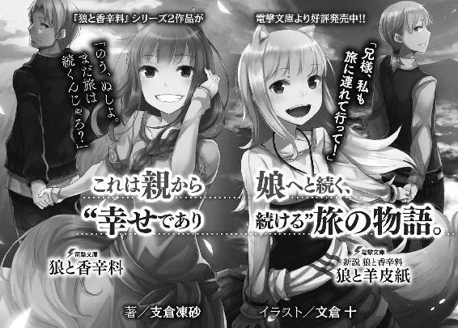

| 狼と香辛料XVIII Spring Log<狼と香辛料> (電撃文庫) | |
| 支倉 凍砂 | |
| 株式会社KADOKAWA (2016) | |
本書（電子版）に掲載されているコンテンツ（ソフトウェア／プログラム／データ／情報を含む）の著作権およびその他の権利は、すべて株式会社ＫＡＤＯＫＡＷＡおよび正当な権利を有する第三者に帰属しています。
法律の定めがある場合または権利者の明示的な承諾がある場合を除き、これらのコンテンツを複製・転載、改変・編集、翻案・翻訳、放送・出版、公衆送信（送信可能化を含む）・再配信、販売・頒布、貸与等に使用することはできません。
雪をかぶった針葉樹が、寡黙な兵士のようにたたずんでいる。辺りは静かで、遠くから鳥の声だけがいやにはっきりと聞こえていた。
空に雲の一つでもあれば色々と想像ができたのに、今日に限って空は海の底のように青い。
結局、どんな顔をしていいかわからず、足元ばかりを見つめがちだった。
「では、参りましょう」
声が聞こえ、顔を上げるとすべての準備が整っていた。
先導の司祭役が、生真面目な顔のまま一礼をする。その後ろには、二人の男がそれぞれ身長ほどの棒を抱えるようにして持っていた。彼らは二本の棒で、ずいぶんと重そうな鉄の紋章を掲げている。その後ろにさらに六人ほどの男たちが左右に分かれて並び、肩に棺を担いでいた。
「神と聖霊のご加護があらんことを」
司祭役が厳かに唱え、一行がしずしずと歩きだす。すると、沿道の針葉樹の下から戸惑いがちに人が出て来た。
ある者は着飾り、ある者は仕事から抜け出てきたままだった。彼らは森で人と出会った鹿のようにまごついていたが、司祭役に促されると棺に近寄り、各々別れの挨拶を囁いた。短いながらも、一生懸命に考えたとわかる、心のこもった一言ばかりだった。彼らの言葉を聞いていると、まるで自分に向けられているかのような気持ちになり、少しだけ顎を引いた。
いや、そう受け取って構わないはずだ、と思い直したのは、曲がり角に差し掛かり、ふと来た道のほうを向いたからだ。
そこには一軒の建物がある。建てた当初こそやや気負いが見え隠れしたものの、いつの間にか角が取れて、どっしりとその場になじんでいた。少なくない人々の協力があったにせよ、ここを守ってきたのは自分たちにほかならない。そのことに、胸を張ってよいはずだ。
そんな胸中の想いが聞こえたのか、棺の前で紋章を掲げる男たちが、支えの棒を殊更に高く上げた。冬の太陽に照らされて鈍く輝くのは、一枚の看板だ。
そこに刻まれているのは、一匹の狼と──。
「神のご加護のもと、無事に神の家にたどり着くことができました。私たちの仲間の魂は、ここで永遠の安息を得ることでしょう」
田舎の山奥のこと、教会代わりに急きょ改装した納屋の前で司祭役が宣言すると、人々は恭しく頭を垂れた。司祭役はうなずき、男たちが納屋の中に棺を運んで行く。少し間を空けてから納屋に入ると、すでに祭壇の前に棺が置かれていた。男たちはこちらに道を譲るかのように、左右に分かれて外に出て行った。扉が閉められたのは、ある種の気遣いだろう。
ゆっくりと棺に歩み寄り、傍らに腰を下ろす。
花の中に横たわるその顔からヴェールを取ると、今にも間抜けな寝息が聞こえてきそうだった。
「まさか、俺がお前の葬式をすることになるとは思わなかったよ」
ロレンスはそう言って、棺の中の、薄くおしろいの塗られた頰を指で撫でた。
「ホロ」
扉の向こうから、物悲しげな鐘の音が聞こえてくる。
ある、よく晴れた冬の日のことだった。
◇◇
食べ終わった昼食の香りが未だ漂う食堂に、浴場のほうから穏やかなリュートの調べが聞こえてくる。
夜が明ける前から働きづめで、ようやく一息つけたのは午後も遅くなってからのことだった。
「秘湯の地、ニョッヒラ。されど、夢見心地なのは客だけか......っと」
湯屋〝狼と香辛料〟亭の主人ロレンスは、首を傾けてごきりと鳴らした。苦労の種は、いくらだってある。
たとえばここを利用する客には高位の聖職者たちが多く、彼らは基本的にわがままだ。どうしても早朝の祈りを捧げたいと言われたら、はいと答えざるを得ない。そのために聖典を用意したり、燭台の蠟燭の長さを切り揃えて火をつけたり、祈りを捧げる際に床に膝をついても痛くないようにと毛織物を敷いたりもしなければならない。
彼らがこちらの苦労も知らずにおお神よと祈っている間に、浴場の掃除に取り掛かる。昨晩遅くまで湯に浸かっていた連中がそのまま放置している食器類を下げ、ごみを捨て、湯に浮いている落ち葉を搔き出し、母屋から浴場までの凍りついた道を溶かすために湯をかけて回る。たまには、こっそり湯に浸かっている獣連中を追い出すこともある。
そうこうしていると、炊事場の煙突から煙が上がり、新たな戦いが始まる。朝食の準備だ。聖職者ならば朝食は質素に簡単に、という考えなどまるでない。寝る寸前まで飲み食いし放題の客は、朝飯もたっぷりと要求する。
一人で三人分の仕事をこなすやり手である料理担当のハンナの横で、ロレンスはひたすらに食器を洗っていく。湯屋の主人が皿洗いなど、と言っている場合ではない。これまでこうした下働きをやってくれていた人材が二人もいなくなってしまったので、背に腹は代えられなかった。
それからは五月雨式に朝食をとりにやって来る客の相手をし、浴場に向かう客に手ぬぐいや羽織るものを用意し、楽師や踊り子の面々がやって来たらその差配もしなければならない。湯船が大小いくつかあり、場所によって稼ぎに差が出るため、楽師や踊り子たちが揉めないように、誰がどこで芸を披露するかは主人であるロレンスが決めなければならなかった。
さらに、彼らがより浴場を華やかに演出できるようにと、緑の葉をつけた生木や花、あるいは刺繡の施された天幕といった小道具も準備しなければならない。このあたりをけちるとおひねりが減り、おひねりが減ると楽師たちは別の湯屋に行ってしまう。音も踊りもない湯屋ほど寂しい場所はない。もちろん、踊り子たちを濡れた冷たい石の上で踊らせるわけにはいかないので、前日のうちに暖炉の火で乾かしておいた毛織物を敷いておくのも忘れてはならない。
そして、最後の朝食の皿を片づけ終えるのとほぼ同時に、気の早い客の昼飯を並べなければならない。
まるで土砂降りの雨をすべて鍋で受け止めようとするかのような仕事量に、徒労感に襲われることもままある。しかし、とにかく必死にこなせばいつかは終わる。
それに、この大騒ぎももうしばしの辛抱のはずなのだ。
「ご苦労さまでございます」
ロレンスが静かになった食堂の片隅に腰を下ろして一息ついていると、娘と呼ぶのは微妙に失礼にあたるようなハンナがやって来た。恰幅が良いわけではないが堂々とした雰囲気で、朝からの大騒ぎにも疲れた様子一つ見せていない。十人の子供を女手一つで育てていると言われたら、うっかり信じてしまいそうだ。そのハンナが持つお盆には、たっぷりの煮豆と厚切りの燻製肉、それに葡萄酒が載っていた。まだじうじうと脂が爆ぜている燻製肉には、こんもりとニンニクと芥子が添えられていて、冒瀆的なまでに良い匂いがする。ロレンスは唐突に朝からなにも食べていないことを思い出し、唾を飲んだ。
「ハンナさんこそ、今日もご苦労さま」
とはいえ湯屋の主人のこと。食事にがっつく前に、感謝の言葉を忘れない。ハンナはそういうロレンスの如才なさに気がついているのかいないのか、食器を並べ、コップに葡萄酒を注いでくれた。スプーンで煮豆をすくって口に運ぶと、きついくらいの塩気が疲れた体に嬉しかった。
「急に二人も人手がなくなって、私は構いませんけどね、旦那様に倒れられたら元も子もありませんよ」
塩辛い食べ物を葡萄酒で流し込む贅沢に打ち震えつつ、燻製肉を切り分けて一切れ頰張った。
旦那様、という呼ばれ方にも、ようやく慣れてきた。
「もちろん新しい使用人を雇うつもりですが、この騒ぎも長続きしないでしょう。山の下では、そろそろ春がやってくる頃ですし」
「あらあら、もうそんな時期でした？ 山の中は冬が長すぎて、季節の移ろいを忘れてしまいますねえ」
「ハンナさんは、春を心待ちにする、というわけでもありませんか」
雪が深々と降り積もる山の中でなくとも、冬という季節は忍耐という言葉と同義だ。
人も動物も木々もなにもかも、春の解放感を夢見ながら、身を縮めている。
「そうでもないんですけれど、春になると皆さん下山して、夏までしばらく湯屋が暇になるでしょう？ それがちょっと憂鬱ですねえ」
腕を組み、頰に手を当てながら遠い目をするハンナに、ロレンスは苦笑する。忙しく立ち働くのが生きがい、というのはロレンスも同じはずだったが、ハンナは別格だ。使用人としてはこれ以上ないほど心強い存在であるものの、人並みに春の解放感を楽しみにし、最近は以前ほど無理の利かなくなった体のために春の一休みが恋しい身としては、ハンナの言葉は少し耳が痛かった。
その一方で、無駄を嫌う行商人上がりの身としては、越冬と避暑の間のあまりにも閑散とした時期が靴の中の小石のように気になっていた。その間も多少の客を呼べれば、一休みしつつ仕事をこなして稼げるのだが、なかなかうまくいっていない。
「それはそうと、奥様はまだお休みで？」
昼もとっくに過ぎているのだが、この湯屋の女主人の姿はない。
ロレンスは煮豆を口に運び、自分へのご褒美として輸入物の高価な葡萄酒を飲み、燻製肉にたっぷり芥子を載せて嚙みついてから、言った。
「あいつは春が待ちきれない類いですから」
「あらあら」
ハンナは小さく笑って、「夕食の下ごしらえをして来ます」と炊事場に戻って行った。
ロレンスはそれからゆっくりと食事を続け、食べ終えると食器を自ら洗った。そのついでに小さな酒樽に葡萄酒を詰め直して、湯屋の二階の自分たちの寝室に向かった。
日中はほぼすべての客が浴場のほうにいるので、建物内はひどく静かだ。扉を開けて寝室に入ると、開け放たれた木窓の向こうから、浴場での騒ぎがかすかに聞こえていた。
「おい、いつまで寝てるんだ？」
ベッドの上の膨らみに声をかけても、うんともすんとも言わない。ずいぶん小さく丸まっているのも、開け放たれた木窓を閉じる労すら取りたくない、ということなのだろう。
呆れてため息をつきつつ、ロレンスが羽根ペンと紙束の置かれた机の上に葡萄酒を置いてもなお反応がなかったので、少し心配になる。
「ホロ？」
声をかけても身じろぎ一つしない。ロレンスはベッドに歩み寄り、そっと毛布をめくってみる。あらわになるのは、齢十余といったところの少女の寝顔だった。普段はなるべく若く見られないようにと髪形や服装を工夫しているのだが、こうしていると幼さすら感じさせた。貴族のような長い髪の毛を有し、染みひとつない玉のような肌は、生きる糧を得るための辛い仕事とは無縁に見えた。目を閉じ、微動だにせず、静かにそこに横たわっている様子は、あらゆる苦痛や苦悩から解放されているようだ。死ぬならばこんなふうに死んでみたいものだ、と思わせるほど安らかな顔、というのが一番近いかもしれない。
ロレンスがその頰にそっと指を這わせると、少女の耳がぴくぴくと動く。それも、ずいぶん大きく、尖った耳だ。亜麻色の髪の毛よりも一段濃い色の毛に覆われた、三角の耳。それは一言で言えば獣の耳であり、頭からぴょこんと生えている。さらに言えば、腰からは立派な毛並みの尻尾まで生えている。ホロは見た目どおりの歳若い少女ではなく、その真の姿は人を軽く丸吞みにできるほどの狼であり、麦に宿り数百年の時を生きる精霊の類いだった。
それがなんの縁か自分の嫁に収まった幸運を、ロレンスは神に感謝しても感謝しきれない。
ただ、日々の生活というものはおとぎ話のようにいきはしないのだ。
一向に変化のない寝顔と違い、右に左にとやや忙しない耳を見て、ロレンスはため息まじりにこう言った。
「飯を食べたかったら、起きて食堂まで下りて来い」
その一言に、ようやく寝顔が変化を示す。閉じたままの目をさらにぎゅっとつぶり、横向きに丸まっていた体をさらに縮め、耳がふるふると頭の上で震えている。毛布の下ではきっと、耳に呼応して、獣の尻尾も震えていることだろう。
「くぁっ......あふ」
最後にそんな間抜けなあくびをして、ホロがうっすら目を開く。
「起きたくありんせん......」
そして、か弱い深窓のお姫様みたいなわがままを口にする。
「ここのところ毎晩......遅くまで寝かせてもらえぬからのう......」
ちらりと向けられた目は、少しだけ非難がましい。
とはいえ、ホロの言葉は間違いでもない。
「そこは......まあ、感謝している」
ロレンスは言って、腰をかがめてホロに顔を寄せた。
「しかし、眠り姫もこれで起きるはずだろう？」
頰に口づけをすると、ホロは目を閉じてくすぐったそうに耳をひくひくとさせる。
同じ屋根の下で十年も暮らせばさすがに飽きるかと思ったが、そんな気配はみじんもない。
幸せなことだ、と一人笑うと、ホロもまた笑っていた。
「まったく、たわけじゃのう」
「毎晩のお勤めに疲労困憊なのはわかるけどな、いい加減起きてくれ。繕い物が溜まってるんだ」
ロレンスが現実的な話をすると、ホロも諦めたらしい。最後に大あくびをして、ごそごそと毛布から這い出した。他の仕事をやらせると不満たらたらだが、針仕事は意外にホロの性に合っているらしく、仕事も丁寧だ。
「くうっ、寒い！」
「ほら、羽織っておけ」
寒さに身震いしているホロに毛織物のローブを着せ、葡萄酒を軽く注いだコップを渡す。
「少ない」
子供のような一言も軽くかわす。
「飲むにしても飯を食べてからだ。女主人が昼から酔っ払ってたら体裁が悪いだろ」
「相変わらず固いのう」
ホロはぶつくさ言いながら、葡萄酒をすする。
「それで？ 昨夜はどうだった？」
ホロの小さな背中に恭しく手を回し、姫を案内するかのように寝室から出て、ロレンスは尋ねた。
「ぬしは最近すぐ寝てしまうからのう」
ホロが肩を軽くぶつけてきて、抗議の意を示す。
ロレンスはやや身をかわしつつ、咳払いをした。
「そっちのことじゃない」
そして、付け加える。
「そっちはまあ......その......頑張りたいところなんだが......」
「くふ。今は忙しい時期じゃからな？」
たっぷりの含みに怖いものを感じつつも、ロレンスはなにかを約束するかのように、ホロを軽く抱きしめておいた。
「それで昨夜の山の見回りじゃが、まあ大丈夫じゃろう。危なそうなところは全部雪を崩しておきんす」
「そうか。ご苦労さま」
ここのところ雪が降り続き、しかも日差しは春の到来を控えて強く、雪崩が心配だったのだ。
この頃は下山する人々で山道の交通量も増えている。だから、ここ数日はホロが夜中に狼の姿に戻り、山の要所を見回っていた。
とてもではないがロレンスにどうこうできることではなく、ホロに任せっぱなしなのが心苦しい。一応の気休めとしては、ホロはホロで狼の姿で山を走り回れるのがよい気晴らしになっているようだったこと。それと、深夜と明け方の隙間に戻って来て、冷え切った体のまま誰もいない湯船に飛び込むのもちょっとした楽しみらしいことだった。
「客が帰りきるまでしばらく夜は大変だが、よろしくな」
「構わぬ。この湯屋は、来る時も帰る時も笑顔なのが売りじゃからな」
湯屋の経営は、一人でなにもかもをこなす行商とは違う。それを大変だと思うこともあるが、こうして力になってくれる存在が側にいれば、その大変さは大きな喜びに変わる。ロレンスが笑顔でうなずき返すと、ホロもまた、少女のように笑っていた。
それから一階に下りると、ホロはもそもそと薄手の毛織物を頭からかぶる。客の誰も彼もが四六時中酔っ払っているので大丈夫そうな気もするが、ホロの耳を見られるわけにはいかない。ニョッヒラでホロのことを知っているのは、この湯屋の者だけだった。
食堂に入ると、足音を聞きつけていたのかハンナがホロのための食事を持って来る。量はさほどでもないが、豆と肉の比率が自分の時よりもたっぷり肉に偏っているのを見て、苦笑した。まだまだ若いという自覚がありつつも、寝起きにこれだけの肉を食べるのはさすがにしんどいだろう。
麦に宿る狼の化身であるホロと自分とでは、寿命に大きな差があるというのはとっくの昔に覚悟していた。しかし、少しずつその事実を身に染みて感じる機会が増えている。
頭で理解するのと、暮らしの中で実感するのとではまた話が違う。
そう知るたびに、もっと毎日を嚙みしめよう、と思い直す。
「それに、ぬしよ」
「ん？」
お転婆な少女そのままに、肉をうまそうに平らげるホロの様子を眺めていたら、そのホロがおもむろに言った。
「大変なのはぬしのほうじゃろう。人手が足りなくててんてこ舞いではないのかや」
「ああ、それはまあ、大丈夫だ。忙しいのももう少しだろうし、なによりコルには少し甘えっぱなしだったからな。旅に出たいと言われたら、引き止められんよ」
十年以上前、ホロと出会ってあちこちで騒ぎに巻き込まれながら旅をしていた時、一人の少年、コルと出会った。当時は神学を学ぼうとする放浪学生で、歳若い少女の見た目のホロよりもさらに若かった。
それも今や当時の自分と同じくらいの青年になったのだ、と思うとロレンスは時の流れに恐ろしいものを感じてしまう。
同時に、紆余曲折はありながらも、聖職者になるという目標を抱いていたコルに、ずっと湯屋で働いてもらっていることは少なからず後ろめたさを感じていた。
そのコルが、ある日湯屋にやって来た者から聞いた話に居ても立ってもいられず、ついに決心して旅立ちの許可を求めてきたのだから、応援する以外の選択肢などなかったのだ。
「しかし、春まで待ってもらえばよかったか......とも思うのは事実だが」
「ふむ。むぐ、むぐ......んぐ。まあ、コル坊も変に真面目じゃからのう。あの時を逃したら、またいつまでもぐずぐずしてしまったじゃろうよ。思い切りよく送り出したぬしの考えは、間違っておらぬと思いんす」
「そう言ってもらえると気が楽だ。なにより、前途有望な若者の邪魔になってはな」
自分も錫製のコップに葡萄酒を注いでいたロレンスの、殊更年寄りめいた物言いにホロは小さく笑っていた。
「とはいえ、まさかそれにかこつけて駆け落ちするとは思っていなかったんじゃがのう」
がた、がちゃん！ と錫製のコップと葡萄酒樽が倒れ、長机の上に葡萄酒がさあっと広がった。
ロレンスは葡萄酒のように溢れた自分の動揺を、必死に取り繕おうとコップと樽に手を伸ばしたが、覆水は盆に返らない。音を聞きつけたハンナが布巾を手にやって来たが、ホロはその間、ずっと笑いっぱなしだった。
「くっくっく。ぬしは本当にたわけじゃのう。いい加減認めたらどうかや？」
「な、なんのことだ」
ハンナに手を貸すロレンスの声音は硬いままだし、ちらりとロレンスを見たハンナの顔にさえ、苦笑に似たものが浮かんでいる。
ひとしきり葡萄酒を拭き終わり、ロレンスが椅子に座ると、ホロはナイフの先を小さく振って、ロレンスに向けてきた。
「コル坊はいい雄ではないかや？ それでここを引き継いでくれたら万々歳だと思うんじゃがのう」
「ぐっ......」
ホロの理屈は百も承知だし、確かにそのとおりだと思う。しかし、理屈でわかっているのと、実際にそういう現実を突きつけられるのとではまったく違う。ロレンスは日々、そのことを痛感している。
しかも話が娘のこととなれば、およそ冷静ではいられなかった。
そう。ここしばらくの湯屋の切り盛りが目も回るほど忙しいのは、幸いなことに客からの評判が良いだけではない。雑事をこなす若者二人が唐突にいなくなったせいで、ロレンスがその穴を埋めているからだ。そのうちの一人とは、件のコル。そして、まったく予想もしていなかったもう一人が、ロレンスとホロの一人娘の、ミューリだった。
旅に出たコルにくっついて、あろうことか一人娘も湯屋を飛び出してしまったのだ。
その理由は？ と問えば、もちろんいくつかの理由が合わさってのことだろうが、その中心にでんと居座るものがなんであるか、わからないはずがない。この村は狭く、湯屋はもっと狭い。誰が誰を好きかなんて、白日のもとだ。
「あいつが結婚など、まだまだ早い」
それでも精いっぱい理性に従った反論を述べたと思ったら、ホロのみならずハンナまで笑っていた。男はいくつになっても間抜けだと、女二人で確かめ合うような笑い方だった。
「ならいくつになったら、早くないんじゃ？」
「む......う......」
「旦那様、無理はなさらず」
ハンナの慰めともからかいとも取れる言葉に懊悩しながら、ロレンスは結局、耳をふさぐことにした。理性でどうにかなることではない。わかってはいる。わかってはいるのだ。娘が生まれた時から、こんな日がくることは覚悟していたのだから。
「くふ。駆け落ちした相手がコル坊でまだよかったではないか」
「駆け落ちではないだろう！」
しかし、ロレンスはやはりどうしても反論してしまう。ホロとハンナがさらに楽しそうにけらけらと笑う。ロレンスは、他の湯屋の主人たちと酒が飲みたかった。
「大体、好いた相手に言いたいことも言わず我慢して、なんの得があるのかわかりんせん。むしろわっちの娘でありながら、遅すぎるくらいじゃ」
どうやらホロはホロなりにやきもきしていたらしい。
とはいえ、思っていることを言わずに抱え込む点では、ホロも人のことを言えた義理ではないはずだ、とロレンスは十年以上前の旅のことを思い出す。もちろん、そんなことを口にしたらどうなるかはわかりきっているので、言いはしないのだが。
「教会の連中が多いせいで、その影響かのう」
「教会の？」
ロレンスが尋ねると、ホロは頭の中から糸を手繰り寄せるように、ナイフの切っ先をくるくると回す。
「ほれ、あれじゃ。連中は今際の際にならぬと大事なことを言わぬ変な習慣があるじゃろう」
「ああ、臨終の告解のことか」
「うむ。それそれ」
死に際して神への取り成しを求めて、あれこれと司祭に告白することだが、そのほとんどが罪や遺言の類いだ。中には狷介固陋の老人がついに秘めたる想いを家族に伝えたり、道ならぬ恋の告白を、なんていう話もあるにはあるので、ホロの思っていることも間違いではないだろう。
「大事なことは、言うべき時に言わねば意味がありんせん、ということじゃ」
それは確かに、とロレンスも思う。特に自分がある程度歳を重ねてみて、時の流れの速さに慄いたということもある。若者はもっと生き急ぐべきだ。
ただ、そうは言ってもなお、ミューリにはまだ恋だのなんだのは早いのではないか、とロレンスが思っていると、ホロが唐突に言った。
「孫の顔も早く見たいしのう」
「んな！ まっ......！」
ロレンスは絶句し、息を吸うことも吐くこともできなくなる。絶対に可愛いだろうが、ミューリはまだまだ子供だ。確かに世間的には嫁に行ってもおかしくない年齢かもしれないが、絶対に早い。そうに違いない。世間は世間、うちはうちだ。
ロレンスが必死に迫りくる現実を押しのけていると、ホロは吞気に葡萄酒を飲んでいる。どっしり構えていられるのは、ロレンスとの歳の差ゆえなのか、それとも男親と女親の違いなのか。
コルが旅に出ると言ってあれこれ準備をして下山した際、常々この山奥の村の外に広がる世界を見たいと言っていた娘が、どうやらコルの荷物の中に紛れ込んで家出をしたとわかった時もそうだった。
旅に危険はつきもので、一人娘の身を案じて今すぐ戻るようにと手紙を書くのももどかしく、ロレンスが橇を走らせようとしたのをたしなめたのもホロだった。
どうにかなるじゃろ、と笑っていた。
可愛い子には旅をさせよ、という言葉もある。ホロのそんな様子を見ていると、それが正しいのかと思うものの、すべてを飲み込めるわけではない。
うぐぐ、と唸るロレンスをよそに、ホロは湯船に浸かっているかのように、目を閉じてしみじみと言った。
「なんにせよ、初めての旅を楽しんでおればよいがのう」
無責任なようでいて、案じていないわけではない。親としてのおいしいところをすべて一人でかっさらうようなホロに、ロレンスは恨めしげな目を向ける。
ホロはそんなロレンスに苦笑して、やれやれとばかりに身を寄せてくる。
「すべては移ろう時の中。けれど、わっちだけはぬしの側にいつまでもおる」
ロレンスより背の低いホロは、綺麗な形の瞳でじっとこちらを見上げてくる。
「それでもなにか不満かや？」
そう言われたら、返す言葉なんてなにもない。何百年も生きるホロからすれば、目の前にあるすべてのことが、ほんの束の間の旅の一幕でしかない。ホロはそれが辛くて、ロレンスと別れようとしたことさえある。必ず見送らなければならないのなら、傷が深くならないうちに別れようと。そのホロが、別れの辛さよりも、今の楽しさを選んでくれたのだ。
ロレンスは肩から力を抜き、降参した。
「滅相もございません」
「くふ」
ホロは小さく笑い、こちらの肩に頭を預けてくる。賢狼と呼ばれたホロの頭にそっと手を置くと、その頭はすっぽり手に収まるくらい小さくて、丸い。
自分の手に収まる幸せとは、きっとこのくらいが限度なのだ。
そして、それで十分すぎるのだろう。
「酒のお代わりは？」
ロレンスが尋ねると、ホロはこう言った。
「ぬしが付き合ってくれるなら」
敵わないな、とロレンスは笑うしかない。
ホロの頭に軽く口づけをして、呆れ顔のハンナに空の酒樽を渡したのだった。
その晩はちょうど月に一回の村の寄合だった。酒と料理を一品携えて、月の見え隠れする寒い夜道を、震えながら歩いて行く。この村に来た当初こそ、奥深い山の気配に夜は不気味な感じが拭えなかったが、今はすっかり慣れたものだ。
それに、客の多いこの時期は、村のあちこちで暖かそうな火が夜遅くまで焚かれ、笑い声、それに音楽が聞こえてくる。その様子は現のものとも思えぬ幻想的な雰囲気があって、時折わざわざホロと眺めに来ることもある。
道すがら、湯屋から湯屋に流す人気の楽師たちとすれ違い、気安く挨拶を交わして歩いて行く。この土地に居着いて十年が過ぎ、ようやく溶け込めたような気がする。
ただ、それも良し悪しなのだろう。
「おおー！ 我らがロレンス殿のおでましだ！」
松明の掲げられた集会所の建物に入ると、たちまち喝采が湧いた。
ロレンスが戸惑っていると、すでに赤ら顔の湯屋の主人たちがやって来て、肩をバンバン叩いてくる。
「いやあ、ロレンスさん、今日は朝まで飲み明かしましょう！」
「え？ あ、はあ」
もうこの村に来て十数年とはいえ、ほとんどの湯屋がロレンスの歳の数と同じか、あるいはそれ以上の年月、ここで営業をしている。先達たちの前ではおとなしくせざるを得ないが、同時に彼らは商売敵でもあるので、そういう意味では馴れ馴れしさはなかった。むしろ時には資材の奪い合いで、ぎすぎすすることのほうが多いくらいだ。
突然なんだろうか、と思っていると、酒を手にした一人が言った。
「ロレンスさん、お辛いでしょうが、辛いことばかりではありません！」
「はあ......えっと、なにがでしょう」
「いいんですいいんです！ 娘を手放すその辛さ、我々もよっくわかっています！」
「ん？ あ、ああ......」
ロレンスはそれで、ようやく自分にやたらと酒を勧めてくる連中の顔ぶれに合点がいった。
そのほとんどが、娘を持つ親たちだった。
「えっと、いや、あの二人がそうなると決まったわけでは......」
「いや、いや、認めたくない気持ちはわかります、わかりますぞ！」
別の一人から強引に慰められ、曖昧に笑っておく。ただ、胸中では何度も繰り返す。駆け落ちではない、駆け落ちではない、と。
「あー、諸君！ 盛り上がっているところに申し訳ないが、会議の後にしてくれまいか」
ぱんぱんと手が叩かれ、魔法から覚めるかのように各々自分の席に戻って行く。
ただ、席に着いても娘を嫁がせた時のことを思い出してむせび泣いている者もいて、ロレンスはその様子に驚くよりも、温かい気持ちになっていた。いつもは売上でしのぎを削っている商売敵も、同じ村に住む仲間なのだと。
「さて、今日はおそらく冬の時期の最後の会議になるだろう。つまり、来月には雪が解け、客がいなくなり、散々騒がれ尽くした建物の修理や夏に向けての準備のために、また輸入品の割り当てやらで、揉めに揉める日々がくるわけだ」
長机に着く湯屋の主人たちが、困ったように笑っている。このニョッヒラの村に至る道は細く、しかも物資の納入をスヴェルネルという一つの町に頼っているので、どうしても奪い合いになる。
「あ、その点について気になる話を聞いたんですがね」
一人が手を挙げて口を挟んだ。
「西の山脈の反対側に、別の温泉街ができるかもって話なんですが」
「ああ、それはうちも聞いたぞ」
「なんと、本当か？」
「山脈の反対側だと、客の流れはどうなるんだ......？」
「静粛に！」
ざわつくところを議長役が制し、ひとまず静かになる。ロレンスもその話は楽師たちから聞いていた。来年はもしかしたらニョッヒラに来られなくなるかもしれない、と。
「私もその話は聞いていて、どうやら本当らしい」
その瞬間、どよめきが足元を這っていく。商売敵が増えていいことなど一つもないが、最も気になるのは、その新しい温泉街が、物資の納入をどこに頼るかだ。
「それで、もしかしたら物資はスヴェルネルから調達するかもしれないとのことだ」
神よ！ と誰かが叫んだ。川に流せる水の量は決まっているように、山奥まで運べる荷物の量は大体決まっている。
それに、スヴェルネルから物資を調達するということは、その新しい温泉街まで客が歩いて行く道も、スヴェルネルから続いているのだろう。
つまり、客もまた取り合うということになる。
「これが一昔前のことだったら、手に手に棍棒を持って山脈を越えるところだが」
議長役が言うと、どよめきがさざ波のような笑いに変わる。
「我々は誇り高き温泉郷、歴史に名高いニョッヒラの民だ。あらゆる争い事もここの湯に浸ければすぐにふやけてしまう。我々はこの地の魅力によって、人々を惹きつけるしかない」
そのとおりだ！ と賛同の声がいくつも上がる。
「しかし、どうすれば？」
一人が至極当然な質問を口にし、皆がむぐっと口をつぐむ。
議長役は小さく笑い、咳払いをしてから、突然ロレンスを見た。
「そこで、ロレンス殿が以前に出された案を、我々は真剣に考えるべきではないかと提案する」
全員の視線が自分に向けられ緊張したが、すぐに頭の中で話がつながった。
「えっと、村の新しい催し、のことでしょうか」
「いかにも」
ロレンスはその提案を、閑散期の春と秋にできないかと何年か前にしていたのだ。春と秋はどこの地域も祭りや大市や宗教的な催しが目白押しで、わざわざ遠くて不便な湯治場までやって来ない。
そのせいであまりに暇になり、冬の間に雇っていた使用人の食い扶持は無駄な出費になるし、だからといって解雇すれば今度は夏にきちんと雇い直せるかもわからなくなる等、季節ごとに極端な客の増減は無駄が多くなる。
もしも春と秋に、当地ならではの楽しい催しがあれば、新しい客が見込めるのではないか、という目算だ。
「しかし、前回はなんで沙汰やみになったんだっけ？」
参加者の一人が呟いた。
「面倒くさい、だった気がするな。春と秋くらいは休みたいしなあ」
当時はそういう主人たちを堕落していると思ったが、最近は彼らの気持ちもわかる。前に進まなければ儲けが得られない行商と、同じ土地で同じ生活を繰り返す湯屋の経営はまた違うのだ。
「そうやって胡座をかいているうちに、足元から切り崩されるかもしれん。教会のように」
議長役が重々しく告げると、主人たちは各々腕を組み、ぐむうと唸る。
ロレンスも詳しくは知らないのだが、山を下りた先では今、教会が大きな節目に差し掛かっているらしい。十年前にすでに形骸化していた異教徒との戦いが正式に終わり、やっと平和が訪れたかと思いきや、今度は内部に敵が現れたのだという。コルはその話を客から聞いて、居ても立ってもいられなくなったらしい。この時代の節目に立ち会わなければ、一生後悔すると。
「知ってのとおり、異教徒との戦いがとりあえず終わった今、ニョッヒラは敵の地にある危険だが魅力的な秘境、という地位を失いつつある。次の手は早急に打つべきだ」
議長役はこの村の血筋らしいが、若い頃に南の大きな商会に奉公に出ていたとのことで、考え方が南流だ。
それに、まったく正しいことなので特に異論も出ず、出席者たちの拍手によって承認される。
ただ、その拍手がためらいがちな理由もまた、明白だ。
「で、なにをするんです？」
議長役は、長机の上に置かれた酒樽に、むんずと手を伸ばした。
「それを、皆で、考えよう」
危機感はあるが、案はない。加えて、村の総出でやるとなれば実際的な面倒事も噴出するし、良い案を出したらきっと取りまとめ役に就かされる。
皆で案を出し合うと言いながら、あっという間に酒盛りになってしまったのも責めるわけにはいかない。この時期の寄合は、一年で最も忙しい季節の、踏ん張りのための息抜きも兼ねているのだから。
それに、ミューリとコルの〝家出〟を聞きつけた娘を持つ男親連中の相手もあって、結局この日はほとんどなにも進まなかった。
ただ、昼間のホロの言葉が、ロレンスの頭の片隅に引っ掛かっていた。
すべては移ろう時の中。
なすべき時になさないと、きっと後悔する。
そういう意味では、ミューリは頑張ったのかもしれない。
ロレンスは同時にそう思うものの、その感傷だけは、わざと葡萄酒で押し流したのだった。
寄合での深酒と二日酔い、その皺寄せで今にも破綻しそうだった日々の仕事を、なんとか持ちこたえて過ごしていた。
ただ、客が一人帰り、二人帰りするうちに、あっという間にほとんどの客がいなくなってしまった。
ホロのおかげで雪崩などの事故もなく、ニョッヒラはつつがなく春を迎えられそうだった。
「うーむ......やはり日の出ておるうちの湯浴みは最高じゃのう」
未練がましく残っていた最後の客が、迎えの者に無理やり引きずられて湯屋を後にしたその日、ホロは待ちかねていたように湯船に飛び込んでいた。楽師や踊り子たちも、春の祭りに稼ぎを求めて下山してしまっているので、しばらくは人目を気にせず骨休め、というところだった。
「ぬしも入らぬかや。冬の疲れも吹き飛ぶというものじゃ」
「ん？ んー......」
ロレンスは生返事で、ホロのために凍りつかんばかりに冷やした蒸留酒と燻製肉、それに最近ホロがお気に入りの、旅人から教えてもらった蜂蜜をかけたチーズを湯船の脇に置く。
その間、ロレンスの目はホロの艶やかな裸体ではなく、まったく別のところを見ていた。
「たわけ！」
「うわ!?」
ばしゃっと湯をかけられ、ロレンスは慌てて飛びのいた。直後、手にしていた手紙は無事かと確認すると、湯からいつの間にか上がっていたホロに奪い取られた。
「いつまで女々しく読んでおる！ 無事だというし、あやつらならよほどのことがあってもどうにかなるじゃろう！」
「う、あ、うー......」
ロレンスはおやつを取り上げられた牧羊犬のような顔をして、ホロが手にしている手紙を目で追っていた。差出人は、コルとミューリ。手紙の上半分をコルが書き、下半分をミューリが書いていて、二枚目はコルとミューリが交互に文章をしたためていた。
その内容は、山を下りたら聞いていた以上に世界は大きく動いていて、たくさん学ぶことがあるというのが、一枚目の上半分。下半分は、南には人が多くて賑やかで、食べ物や面白いことがたくさんある、と間違いだらけの綴りで書かれていた。
ロレンスはミューリの記した部分を読んで、何度も相好を崩していたのだが、二枚目に至ってその顔も強張ってしまった。
そこには、二人が巻き込まれた騒ぎと、その顚末が書いてあった。しかも、コルが冷静になにかを記そうとしていると、ミューリが邪魔をして面白おかしく書こうとしていたり、コルがきっとロレンスのことを考慮して出来事を穏便に伝えようとしているところを、ミューリが殊更大袈裟に書き直している個所が多々あった。
要約すると、ずいぶん大変な目に遭ったのだが、なんだかんだ丸く収まり、コルは胃の縮む思いをし、ミューリは大変楽しんだというところだろうか。ロレンスは生真面目なコルに同情する一方、ミューリが楽しそうなのでなによりと顔がほころびつつ、やはり万が一のことがないかとはらはらする。
それは自分とホロが経験してきたような、命がけの大冒険、という意味と、もう一つ。
「しかし、あの二人はずいぶん仲良しのようじゃのう」
ホロが奪った手紙を軽く読み返し、くつくつと笑っている。手紙を見れば、二人がどれだけ親密そうにしているか簡単に見て取れる。
同じ宿で、蠟燭の灯りに額を寄せて、肩を並べ、手を取り合い......。
「コルは、うん、そう、善い兄だからな」
咳払いと共に口にしたのは、ロレンスが最近見つけた、自分を納得させる言葉だった。
「二人は昔から本当の兄妹よりも兄妹らしかったからな。うん」
「......」
ホロから呆れ返った目を向けられながらも、ロレンスはひたすらに言い張った。
「まあ、ぬしがそう信じておるなら構わぬが」
こいつが馬鹿なのは昔からだ、とばかりにホロは言って、くしゃみをした。
身震いして手紙をロレンスに押し付けると、燻製肉をつまんで口に咥え、ひょいと湯船に飛び込んだ。ロレンスはホロの指の跡がついた手紙の皺を直し、ミューリのたどたどしい筆跡を見ては顔をにやつかせ、その内容に頭痛を堪えるように顔をしかめていた。
ただ、とにかくこの手紙は娘が初めて自分にくれたものだ、と大事に畳んでいると、ホロの声が聞こえた。
「それはそうとぬしよ。春のお楽しみはなにか思いついたのかや」
「ん」
「山向こうの新参者たちに客を取られぬように、なにか賑やかなことをするんじゃろう？」
寄合の時に出た話のことだが、ロレンスの顔は晴れない。
「それがなあ......なかなか思いつかなくて」
「聖人の祭りとやらは毎年やっておるしのう」
どの町や村、どの職業にも必ず守護聖人がいて、一年にわたってどこかしらで聖人の祭りが催されている。ニョッヒラではそれが春で、しかも冬の大変な労苦を労うという内輪向けのものなのだ。
「それに、珍しくもないしな」
「なんなら、大きな狼にうまいご馳走をたらふく供える祭りでも構わぬが？」
湯船の縁に肘と顔を乗せ、ばちゃばちゃ足で湯を叩きながらホロがそんなことを言う。
濡れた髪を搔き上げてあられもない格好をしていると、年頃のミューリにそっくりだ。
「これ以上お供えされたって、食いきれないだろ」
蜂蜜のかかったチーズなど、高級珍味もいいところだ。ロレンスが一切れつまむと、ホロはわざとらしく牙を剝く。
「ふん。じゃが、ぬしは昔は町から町への行商人じゃろう？ 面白いものの一つや二つあったのではないかや。なにか真似てみてはどうなんじゃ」
「うーん......。たとえば、牛追いの祭りとか盛り上がったなあ」
「ほう？」
「町の脇道をふさいで、牛を追いたてるんだ。怒り狂って道を駆け抜ける牛の尻に触ると幸運が授かるなんて言って、大騒ぎだ。最後はその牛を丸焼きにしてみんなで食べるんだが......」
「駄目なのかや？」
「毎年怪我人が出るのと、なにより牛が建物に突っ込んで甚大な被害が出る」
旅人として訪れた先での大騒ぎなら、危険と隣り合わせで面白いだろう。しかし、建物を構え、それを維持することの大変さが身に染みてきているホロは、牛に突っ込まれて滅茶苦茶になるところを想像したのか、渋い顔だった。
「それは......困るのう」
「だろう？」
「ほかにはないのかや」
「後は......あれだな。町の司教区ごとに組を作って、革で作った玉を蹴って町を練り歩く祭りもあったな」
「面白そうではないか」
「だが、玉の奪い合いですぐにみんな頭に血を上らせるし、まだそれはいいとして、この村には若人が少ない。開始してすぐに皆、音を上げるだろう」
腹の突き出た主人たちのことを思い浮かべたのか、ホロは耳を呆れたように傾けながら、納得していた。
「ぬしも最近たるんでおるしのう」
「う、ぐ......。ごほん！ となると、仮装して大騒ぎとかそういうものになるが、そんなものはあっちこっちにある」
「難しいのう」
ホロはまたぱちゃぱちゃと湯を鳴らし、犬かきの真似事みたいなことをして縁から離れて行った。湯の中で広がる髪の毛と尻尾の毛のせいで余計に吞気に見えるのだが、本当に興味がなかったら話題にも出さないはずだ。
ホロなりにこの湯屋、この村のことは気にかけている。そうでなければ毎晩、雪深い山を見回ってくれなどしないだろうし、大量の繕い物も黙々とこなしてくれないだろう。
「うーむ」
ロレンスが頭を悩ましていると、ざぱっと中島に体を上げたホロが、髪の毛をぎゅっと手で絞り、尻尾をぶんぶんと振った。
「ぬしも入らぬかや！」
ミューリよりよっぽどか無邪気な笑顔で声をかけてくる。
ロレンスはまだ残された仕事があるので手を振ったが、途端につまらなそうな顔をしたホロに負け、服を脱いだのだった。
「こんな怠惰な楽しみを知ったら、そりゃあ春に新しくなにかをしようなんて言っても、皆乗り気にはならないよなあ」
冷えた酒を手に、よく晴れた青空を見上げて、ロレンスは呟いた。結局ハンナを呼んで酒と食事を持って来させ、だらだらとしてしまう。この時期はきっとどこの湯屋も似たような感じだろう、と思うと、なおさら怠惰になってしまう。
「わっちゃあ、行商の途中に草原で寝転ぶのも好きじゃったが」
「だらだらした後は荷台で高いびきで、御者台で手綱を握る者が別にいたらそうだろうさ」
「わっちゃあいびきなどかかぬ！」
荷台でごろごろしていたことは否定しないぶん、ホロもだいぶ丸くなった。
「ふ～......。しかし、こんなにのどかでいい湯なんだ。ここが地上の楽園でなくて、どこが楽園なんだ？ むしろ誰も彼もが、迷わずここにやって来るべきだろう」
「まあ、確かに昔からここは賑やかじゃ」
ホロはロレンスが生まれる何百年も前、このニョッヒラの湯に浸かっていたらしい。
「そうか......地上の楽園として正式に教会に売り出してもらう手もあるよな」
「はあ？」
またたわけが突拍子もないことを言いだしたぞ、とホロは訝しげにしているが、ロレンスは意外にいけるのではないか、と思った。
「ほら、聖地巡礼ってやつがあるだろう？ 誰もが知る聖人が祀られている場所もあれば、眼病に霊験あらたかな聖人が祀られている場所とか、効能別に人気なところもある」
滔々と語りだしたロレンスをよそに、ホロは関心なさそうに酒を注いでいた。たぶん、ロレンスが儲け話を意気揚々と口にした後は、大抵騒動に巻き込まれたという十年前の経験からなのだろう。
しかし、思いついたことは黙っていられなかった。
「湯が健康にいいなんてのはわかりきっていることなんだから、ここに来る聖職者たちに協力してもらって、ここを聖地にすればいいんだ。そうそう。教会の教えにもあるだろ。地上に対して地獄があって、その間には煉獄という中間地点があり、そこで罪を償えば、地獄行きのはずだった者も天国に行けるという。それと同じで、天国と地上の間に、天国でも地上でもない楽園があることにして、それこそまさにこのニョッヒラであると──」
と語るロレンスの口を、ホロが干し肉でふさいだ。
「むが？」
「煉獄とやらで罪を告白したら天国に行けるのなら、その楽園とやらで飲んで騒いだら地獄行きになるのではないかや？」
湯と酒で火照ったホロの顔は、赤みがかった琥珀色の瞳と相まってなんとも悪魔的だ。
「う、む......」
「それに、現状ですら客どもは人が多すぎると不満たらたらじゃろうが。これ以上客が増えるようなことに、わざわざ連中が協力してくれるとは思わぬがの」
「......むう」
確かにそのとおりだ。
「あと、あんぽんたんのぬしは忘れておるようじゃが、できれば暇な時期に人が呼べるようなもののほうがいいんじゃろう？」
「そう、だな。うん」
湯に浸かって酒を飲むと、すぐに酔いが回る。
ロレンスは湯の外に手を伸ばし、雪を摑んで自分の額に押し当てた。
「うーん......地上と天国の狭間、というのはいい考えだと思ったんだが......」
「わっちのような天使もおるしのう？」
喉を鳴らすように笑いながら、ホロが身を寄せてくる。玉のような肌と、しなやかな体は確かに天使そのものだ。
ただ、干し肉を咥える隙間からは牙も見えているので、迂闊に手を出してはならない存在だともわかる。手を伸ばした本人が言うのだから間違いない、とロレンスは自嘲気味に思う。
「天国と地上の狭間......お祭り......うーん......」
唸るロレンスをよそに、ホロも茹だってきたのかロレンスの額に載る雪に齧りついたりしていた。それが不意に、顔を上げるとそそくさと湯から上がってしまう。
「どうした？」
その問いには、ばさっとローブを頭からかぶって、母屋のほうを顎でしゃくった。
「旦那様、お客さんが」
ハンナが人を連れて、呼びに来たのだ。ホロが半分狼であることはもちろん村の連中には内緒なので、ホロもそのあたりには気を遣っている。
「ああ、わかった」
ロレンスも湯から上がったのだが、母屋につながる渡り廊下の入り口に立っていた人物を見て、おやと思ったのだった。
温めた葡萄酒を出すわけにもいかず、ハンナに頼んで山羊の乳を沸かしてもらい、蜂蜜を垂らしたものを出した。ただ、思いつめたような顔の来客は、椅子に座ったまま自分の手元を見つめて動かない。
暖炉で乾かし膨らんだ尻尾を、ローブの下でもさもさいわせているホロがやって来て、ロレンスの腰を指でつつく。何用だ？ という顔だが、ロレンスにもよくわからない。客もおらず静かな母屋の食堂に、ハンナがロレンスたちの夕食の下ごしらえをする音だけが響く。ホロは興味深げに客を見た後、繕い物をするために少し離れた場所に腰を下ろしていた。
このままでは埒が明かないので、ロレンスのほうから、口を開く。
「今日は、お父上からなにか言づかってこちらに？」
来客の見た目はまだまだ子供ながら、この辺りではすでに立派な労働力の一員なので、それなりに敬意を払って言葉を向ける。しかし、相手はますます肩を落としながら、重々しく首を横に振る。突然の来客は、近所の湯屋の子供で、ミューリと同い歳の次男坊だった。
数少ない同い歳ということもあって、ミューリとはよく遊んでいたのでその子のこともよく知っていた。名をカームといい、ミューリと一緒に悪さばかりしていたカームを何度怒鳴りつけたかわからない。
二人は年頃になると家の手伝いやらであまり遊ばなくなりつつ、最近でも村の中で見かければ雪玉や蛙を投げ合ったりする仲ではあった。
「冷めないうちにどうぞ」
と、飲み物を改めて勧めると、カームはコップを手に取る。
そして、そのコップを手がかりにするように、ぐっと顔を上げた。
「ロ、ロレンスさんにお願いがあって参りました！」
声の大きさというよりも、その真剣さに驚いた。
ミューリと一緒になって悪さをして叱られる時には、むくれてそっぽを向くような性格だったのに、まっすぐにこちらを見つめるその顔はいっぱしの青年のものになっていた。
「自分で応えられることなら、喜んで」
子供相手と侮らず、ロレンスも背筋を伸ばして対応した。
「その！ あ、あの......！」
ただ、勢いはそこまでで、カームは口を開けるものの言葉が出てこない。顔は真っ赤で、ともすれば急に息ができなくなって苦しんでいるようにも見えた。
ついにカームが目を閉じ、苦しげに歯を食いしばるに及び、ロレンスが思わずその肩に手を伸ばそうとした瞬間、言葉が吐き出された。
「ミ、ミューリさんと結婚させてください！」
全身全霊の一言が、突風となって食堂いっぱいに響き渡る。
呆気にとられたロレンスは、しばらく言葉の意味が分からなかった。
ミューリと？ 結婚だと？
「い、いや、そう言われても、えーと......」
ロレンスは頭の中で思考がうまく組み立てられず、しどろもどろになってしまう。
その間も、カームはじっとロレンスを見つめている。
決死の覚悟で、見つめていた。
「......ミューリに、求婚する、ということか」
ロレンスはようやく、少年の覚悟に真正面から向き合えた。
「は、はい」
カームが冗談で言っているわけではない、ということもわかり、たちまち頭が湯屋の主人に切り替わる。
「そのことを、お父上は？」
ロレンスの問いに、カームは困ったような顔をしてから、首を横に振る。
狭い村ではどこの家とどこの家が親戚関係になるかは重要なことだ。たとえば人気のある湯屋と湯屋が血縁関係になったら、そこで強力な派閥が生まれてしまう。なので、決して村内で結婚してはならないという掟もないが、できれば婚姻関係は村の外、特にスヴェルネル辺りの者と結ぶように、という空気がある。
後は単純に、家の数が少ないので血が濃くなるのを避けるためだ。
「ふむ」
どうしたものか、とロレンスがため息をつくと、カームがぐっと前に乗り出してきた。
「あ、あの、ひ、一つお聞き、したいのですが」
「ん？」
「ミ、ミューリが......い、いえ、ミューリ、さんが、その、駆け落ち、したというのは......」
「ああ」
ロレンスが嘆息まじりに呟くと、視界の端でホロが笑っているような気がした。
ただ、それでようやく、どうしてカームが突然、親にも相談せず決死の覚悟でやって来たのかがわかった。
「駆け落ち......なのかは私にも......いや、たぶん、何割かは、そんな感じなのだろう......」
この期に及んでなおロレンスは言葉を濁してしまうが、理性ではどうにもできないことだ。
「ただ、はっきり決まったわけではないよ」
そこだけ明確に言えたのは、希望的観測、というわけではない。
勇気を振り絞ってやって来たカームに対する、ある種の敬意だった。
「ミューリはあのとおり、突拍子もないことを平気でやったりするからね。それに、ひどく飽きっぽい」
幼馴染みのカームには心当たりがあるのか、しきりにうなずいている。
「だから、大喧嘩でもして戻ってくる可能性が、ないわけではないだろう」
しかもコルは聖職者を目指し、禁欲の誓いを立てている。この村にやって来るどんな美人の踊り子に言い寄られても決してなびかなかった。
「その時には、改めて君からミューリに申し込んだらいい。私からはそのことを制限するつもりはまったくない」
カームは黒雲の向こうに一筋の光を見たとばかりに顔を輝かせたが、その顔も途中で力ないものに変わってしまう。
「けど......相手は......コルさん、なんですよね？」
狭い村なので、全員が互いのことを知っている。
ロレンスがうなずくと、かつての悪戯小僧の顔に落胆の色が混じる。ロレンス自身、もしもカームと同じ歳の時にコルが恋敵になったとしたら、絶望しかないだろう。コルは昔から良い少年だったが、成長したらそれに輪をかけて素晴らしくなった。
「はあ......」
勢い込んで来たはいいものの、立ちはだかる現実に意気消沈してしまったらしい。自分も行商人見習いの頃、似たような経験があったことを思い出して、少し笑ってしまっていた。
それに、目の前にいるのは愛娘ミューリを狙う憎き輩とはいえ、単身乗り込んできた勇敢な男なのだ。
「しかし、どうして、急に？」
「え？」
聞き返すカームに、ロレンスはホロをわざとらしく気にしながら、顔を近づけた。
「君は、どちらかというと踊り子のほうが好きなのかと」
男同士の内緒話をするように声を潜めると、カームの頰がさっと赤くなる。湯治場という場所柄、歌と踊りは欠かせないし、見目麗しい女性ならいくらでもいる。しかも、芸で生き抜く特権状を持つ彼女たちは、たとえ宮廷で無礼を働いたって無罪放免だ。目に眩しい初夏の緑のように、なにものも恐れない美しさがそこにはある。
「それは......その」
カームは口ごもり、ただ、そのまま黙らなかった。
「でも、あの人たちと......ミューリは違うって、気がついたんです」
ロレンスはそう言われ、愛娘のことを思い出す。ミューリはホロそっくりの見た目だが、中身は全然違う。ホロから落ち着きと老獪さを取っ払い、さらにちょっと厭世的なところをすべて太陽の光で置き換えたような、無限の元気で満ち溢れている。
小さい頃には兎を捕まえるために闇雲に飛びかかり、沢から真っ逆さまに落ちて頭から血だらけになったことがある。しかも、その翌日から鹿を追いかけて山で遊んでいた。
確かに、髪を結い、香を焚き込め、腰のくびれを気にかけ、自信と落ち着きたっぷりに微笑む踊り子たちとは根本から違う。どちらかというと、そちらはホロのほうが近いだろう。
「まあ......貴族の屋敷にいる猫と......山の狼くらい、違うだろうな......」
自分の娘が世界一可愛いと思っていても、目をつぶりきれないところはどうしてもある。
ロレンスが苦々しく言うと、カームはちょっと笑いかけて、慌てて首を横に振った。
「あ、あの、いえ、そういうことではなくて......」
「ん？」
カームは、自分の手元に視線を落とす。
「踊り子の人たちは、その、確かに好きではあったんですけど......この季節に山を下りても、また会えるやって、思ってたんです」
「ほう」
「でも、ミューリが村を出たって聞いて、そうしたら......そうしたら！」
そこには、今にも泣きだしそうな、苦しみに満ちた顔があった。
「居ても立ってもいられなくなった、と？」
「......」
声を出すこともできず、カームは唇を震わせながらうなずく。
ミューリと同い歳で、遊び相手として常に一緒で、ほとんど家族同然に過ごしていた。近すぎて見えなかった、ということもあるだろう。だが、ロレンスにはよくわかる。行商の旅を続け、一月と同じ場所にいなかった経験から、余計に村や町の人々の気持ちがくっきりと見えることがある。
村や町には、大きな変化など滅多にない。昨日あったものは今日もあり、どれだけうんざりしたってきっと来年も、再来年もある。だとしたら、年頃になった腐れ縁の幼馴染みが少し気になったって、声なんてかけやしないだろう。もしもそれでうまくいかなかったら、きっと爺になって墓に入るまで言われ続けるのだから。
だから、少年が一人でここに来たのは、敬意を表すべき勇気の表れだった。しかも一応の恋敵になるかもしれない相手は、あのコルなのだ。
ロレンスは一人の男として、カームを見つめていた。
「それに、そういうことは、俺、わかってたはずなのに......」
膝の上で拳を握りしめたカームの目から、ぽたりと涙が落ちる。
「兄ちゃんが、病で死んじゃった時、わかったはずなのに......」
流行り病で呆気なく他界してしまった、カームの兄のことだとすぐにわかった。ロレンスは一瞬ためらい、それから、ゆっくりとカームの肩に手を置いた。
「言いたいことは......ぐす、早く言っとかないと......次はもう、ないかもしれないって、わかってたのに......」
カームの肩を叩き、そのまま背中をさすって、抱きしめてやる。すると、ミューリとは違う、男の子らしい骨格の固さと汗臭さに、息子がいたらこんな感じなんだろうな、と少し感慨深かった。
気を利かして手ぬぐいを持って来てくれたホロから受け取って、ロレンスはもう一度、少年の背中を叩く。
「でも、まだミューリはいる」
「うぐ......ぐすっ」
「こちらとしては、愛娘を狙う輩は全員殴り飛ばしたいところだがね」
わざとらしく言ってやっても、カームはロレンスを見て少し怯んでいた。ホロからすればどれだけ可愛い雄だろうと、なんといってもロレンスは湯屋の立派な主人なのだ。
「なんなら今すぐ追いかけてみるのも悪くない、とけしかけるのは無責任だが」
たちまち立ち上がろうとするカームを押さえて、ロレンスは手ぬぐいを渡す。
「ミューリはあれで煮え切らないところもあるから、コルとあちこちを漫遊してから、ひょっこり何事もなく帰って来る可能性は高いと思っている」
聞き耳を立てているはずのホロの顔を想像すると苦笑いだったが、この予想は意外に当たっているのではないか、とも思う。なにより、コルが自分になんの挨拶もなくミューリに手を出すとは、どうしても考えられない。
「その時に、君は立派に成長していればいい。それで改めて......改めて......」
ミューリを貰いに来ればいい、とはどうしても言えないところに、カームは手ぬぐいを握りしめながら言った。
「ミューリを貰いに来ます！」
一発二発殴ったって、簡単に揺らがない決意が見て取れた。
ロレンスはふすっと肩から力が抜け、笑いながらうなずいた。
「待ってるよ。それまでに、私も拳の素振りをしておこう」
にやりと笑みを向けると、カームは顔をひきつらせながらも、目は逸らさなかった。
「じゃあ、涙を拭いて、この飲み物を飲んで」
「は、はい！」
言われたとおりにするカームを、ロレンスはテーブルに頰杖をつきながら眺めている。
こんないい子なら、息子も悪くない、と思った。
「顔が洗いたかったら、湯に入って行ってもいい。弟連中は目ざといだろ？」
「あ、あー......お、お願いします」
いつもは偉そうに威張り散らす兄が泣いて帰って来たなんてことになれば、弱った鹿に狼の群れが襲いかかるようなものだ。カームは立ち上がり、一礼するとふらふらと浴場のほうに歩いて行った。
ロレンスがその後ろ姿を微笑んで見送っていると、入れ替わりにホロがやって来て、なにも聞かずにどすんとロレンスの膝の上に座った。
「な、なんだよ」
「んー？ くふふ」
楽しそうに笑うホロは、ローブに収まりきらないくらい尻尾を膨らませている。
「たわけの雄が、偉そうにって？」
機先を制して言うと、ホロはロレンスの手を握ってくる。
「たまにびしっとするから、ぬしは侮れぬ」
「一応褒めてもらっている、と思っておくよ」
「たわけ」
そう言って、ローブ越しに耳を擦りつけるように甘えてくる。今しがたのやり取りが、よっぽどホロの琴線に触れたらしい。
ロレンスはそんなホロを少しきついくらいに抱きしめながら、ぼんやりと思った。
「次はもう、ないかもしれないのに、か」
カームの兄があまりにも呆気なく死んだことは、まだ記憶に新しかった。それでなくても、行商の旅で一期一会の生活の繰り返しだったロレンスには、その言葉が重く響く。
「あの歳で気がつけるとは、あやつは善き雄になるの」
「俺もわかっているつもりだったんだが？」
ホロと別れたら二度目はない、と思って、ホロに手を伸ばし続けてきた。
しかし、ホロは少し体を離しつつ、ロレンスのことを見つめてくる。そのやや非難がましい目つきに、ロレンスは鼻白む。
「なんだよ、そうだろう？」
「ぬしがたわけなのは、すぐ自分のいいように昔のことを書き換えるところじゃ」
「な、なにがだ」
「ぬしがわっちのことを大大大っ好きじゃとはっきり言うのに、どれだけかかったんじゃ？ んん？」
「......」
ホロの甘嚙みは、いつも少し痛い。その痛さに負けて、間違ってもお前だって、なんて言おうものなら、歯形をくっきりつけられる。ただ、ホロはいつもこちらのことを見ているし、尻尾は遊んで欲しくて仕方がない犬のように、わっさわっさと音を立てている。
今更面と向かって言うのが恥ずかしい一言を無理やり言わされるくらい、甘んじて受け入れるべきなのだろう。
愛されすぎるのも辛いものだな、と詩人のようにロレンスは胸中で呟き、ホロのお望みの一言を口にしようとした、まさにその瞬間だった。
「言いたいことを、言えない？」
思わずぽつりと呟いていた。
「ん、あ？ な、なんじゃ？」
ホロの顔が、蜂蜜に漬けた干し葡萄を口に入れてもらえると思ったら、胡椒粒を入れられたみたいになっている。ロレンスはそんなホロなどお構いなしに、頭の中でつながろうとしているなにかを必死に手繰り寄せる。最近、なにかこれと似たような話をしていた。
言いたいことを言えないが、ついにそれを口にする、そんな状況。
臨終に際して行われる告解だ！
死に瀕し、もうこの際だから洗いざらい言ってしまえと、天国に行くためにすべてをぶちまけてしまうことだ。しかし、目の前のホロとのことのように、伝えたくても伝えられないのは、なにも悪いことばかりではない。
だとしたら？
「だとしたら......」
「ぬしよ？ ぬーしーよー？」
ぺちぺちと頰を叩いてくるホロの手を摑むや、ロレンスは膝の上のホロを姫のように抱きかかえて立ち上がった。すべてがつながったのだ。春に人を呼ぶ新しい催しが、頭の中で花開いていた。
「そう！ 天国までの踊り場を作ればよかったんだ！」
高らかに叫ぶロレンスの腕の中で、ホロはきょとんとしていたのだった。
◇◇
葬儀とは、別れのための儀式のこと。
棺の蓋を閉め、祈りを捧げて土に埋めてしまえば、もう二度と見えることはない。
家から棺が運ばれる時、立ち会う人々は今生の別れとばかりに声をかけてくる。今更偽ることも、隠すことも、照れることだってないのだから。
別れには、うまく表に出せないものを押し出してくれる、力強いなにかがある。
「ホロ」
ロレンスはその名を呼び、けれど、どうしても口元が苦笑いに歪んでしまう。
これだけお膳立てされ、しかも皆が気を利かして納屋の外に出て行ってくれても、なお、なかなか難しい。
「うー......そろそろ天使も痺れを切らしておるんじゃがなあ」
棺の中から、死者の呻きが聞こえてくる。
ロレンスは咳払いをして、棺の中でくすぐったそうに笑っているホロの顔を覗き込み、言った。
「お前と出会えてから、俺はずっと幸福だったよ」
「......だった？」
ちらりと片目が開いて、聞き咎める。
「一応、これは葬式だろ？」
「ふむ」
「そしてこの葬式では、死者は奇跡の湯の効能で、生き返る」
わざわざ用意してある銀のコップから、指の先にちょっと湯をつけて、ホロの額に塗る。
「生き返ってみた感想は？」
両目を開けたホロは、ロレンスを見上げながら、くしゃりと笑ってみせた。
「まだぬしと過ごす時間があって、嬉しい」
「っ」
そうくるとは思っていなかったので、ロレンスは言葉に詰まる。ホロの、してやったりという牙が見える。敵わないと思いつつ、それでこそホロだとも思う。
「光栄ですよ」
ロレンスは言って、ホロに手を貸して起こした。
「で、催しとしてはどう思う？」
「むう？」
「死んでから良いことを言われてもわからないし、死んだら言いたかったことも伝わらない。だから、いっそ生きているうちに死んだことにして、言いたかったことを言おう、という天国一歩手前の儀式なのだが」
「うむ。うむ......。あのな、ぬしよ」
ホロはロレンスを見て、真剣な顔で言った。
「悪くありんせん」
「はは、そうか。なら、特に大規模な準備もいらないし、大騒ぎをするわけでもないし、やってみる価値はありそうだな」
ロレンスが思いついたこの案を湯屋の主人たちに告げると、最初は全員がぎょっとしたが、目的を告げたらたちまちそわそわとし始めた。皆、大事な人に言いたくても今更恥ずかしくて言えない一言や二言くらいあるし、本当はさっさと言っておいたほうが良い、とも頭ではわかっているらしかった。そのことを告げるための言い訳さえあれば、とは常々思っていたわけだ。
そして、世界中の意地っ張りな男たちがそう思っているはずだった。
だからこの秘境の地で、この世で最も天国に近いこの場所で、生きているうちに葬式を挙げてその言い訳としよう。それが、ロレンスの思いついたことだった。
「蠟燭代がかかるから、この点が注意だな......後は、皆揃いの衣装を着てるとより雰囲気が出るから、その予算も......うん、いけそうだ、いけそうだな」
あれこれ考えていると、ふと、ホロがこちらをじっと見つめていることに気がついた。
また商売に夢中になって放ったらかしてしまった、と身構えたら、ホロは小さく笑って、寝起きの少女のように、ロレンスの服の裾をそっと摑んだ。
「わっちゃあ、本当に」
「え？」
「まだ生きておって、嬉しい」
笑顔のまま、目尻から涙がこぼれ落ちる。
ロレンスは慌てて、その涙を拭う。
「まだ旅は続くんじゃろ？」
すべては移ろう時の中。ロレンスはもちろん、ホロでさえその時の流れに押し流される一葉にすぎない。いつか必ず別れがきて、この瞬間は永遠の過去になる。
だが、それはまだ未来の話。
ロレンスはホロの背中に腕を回し、抱きしめた。時間の流れから、少しでもお互いの「今」を守るように。
「そうだ」
そして、言った。
「旅は続く。もう少しな」
ホロは顔を上げて、笑う。それから二人は、ちょっとだけ攻防した。けれど、結局どちらからというわけでもなく、自然と収まる形になった。
それは、二人で店をやっていこうと決意した時にも似ていたかもしれない。
神が見守る祭壇の前でそっと、口づけを交わす。
目が合うと、今更ながらに照れてしまう。
この世には、まだまだやり残したことがたくさんあるらしい。
春が近い、雪解けの季節の頃のことだった。
四方を山に囲まれた、広い世界のどん詰まり。
温泉郷ニョッヒラに、ようやく長い夜の終わりが訪れようかという頃。
ロレンスは、一身に奇異な視線を集めていた。
「あらあら、まあまあ。狼と香辛料亭のご主人様？」
山に囲まれた土地は、空が明るくなっても太陽が顔を見せるまでに時間がかかる。村はまだ薄闇に覆われ、少し離れたら相手の顔もよくわからない。そんな時刻、村の一ヶ所に集まって静かに囁き合っていた湯屋の下女たちが、突然かまびすしくなった。カラスが近づき、慌てて激しく鳴きだす鳩のようだ。
雪を踏みしめそこに立つロレンスは、白くゆらめく吐息そっくりの曖昧な笑みを浮かべ、背負っていた薪を下ろした。
夜の明けきらないこの時間、湯屋の下女や家の女たちが三々五々集まる場所が村の中にいくつかある。水車小屋だったり井戸端だったり色々だが、ロレンスがやって来たのは村人共有のパン窯だった。
「ハンナさんはどうされましたの？ ご病気？」
「可愛らしい娘様はお寝坊かしら」
「あなた忘れたの？ 娘様は勇ましく旅に出られたのよ。私も昔は憧れたものだわ」
「あらそうでしたっけ。私は生まれた町の外はここしか知らなくてねえ」
「それにしてもわざわざご主人様がいらっしゃるだなんて、ホロさんまで体調を？」
「それは大変。お見舞いに伺わないと」
週に一度か二度、それぞれの家や湯屋で食べるパンをまとめて焼きに、彼女たちはここに集まる。村での生活は単調だから、彼女たちの楽しみといえば、村の話しかない。
本来なら湯屋の下女が、その都合が悪ければ嫁か手伝いの娘がやって来るのが普通の仕事に、主人がやって来ればそれだけで話題になる。薪を背負い、捏ねたパン生地を布巾に包んで小脇に抱えている姿は、ロレンス自身、間が抜けていると思う。
これではまるで、嫁に逃げられたみたいではないか。
それでも、遠慮会釈のない鳩の群れみたいな女性たちを前に、ロレンスは笑顔を崩さない。
彼女たちの噂話は一瞬で村全体に広まっていく。この村に湯屋を構えて十年以上が経つとはいえ、まだまだ新入り扱いが抜けないので油断は禁物だ。
代わりに、未だに湯屋で惰眠を貪っているはずの嫁のホロのことを思い出し、この仕事を押し付けてきたことを静かに胸中で罵った。
「いえ、急な宿泊客がありまして。二人とも急ぎの仕事のために、今日は私が」
ロレンスが言うと、女性たちの勝手なおしゃべりがぴたりと止まった。
「あらあら......それじゃあもしかして、あのお客様は狼と香辛料亭に？」
「大変ねえ」
その一言だけは、話の種をついばむという感じではなく、心からのものに感じた。
「最初にお泊まりになられたのは、ヨーゼフさんのところかしら」
「そうね。あちらはこの村で一番古い湯屋ですから」
「次はアーベルさんの？」
「その次はラマニノフさんの」
口々に湯屋の主人の名前を並べていく。名前の響きが色々なのは、この村で湯屋を構えるのが様々な土地からやって来た人か、その子孫だからだ。
「ということは、春までずっと宿を転々としているのかしら？」
「なにが気に入らないのか、ずっと難しい顔をされているわよね」
「そうそう。そのくせ注文が多くてね。朝の早くから弁当を作れだなんて言って。大変だったわ。でも、支払いが良くてねえ......」
「ちょっと、駄賃に目をくらまされては駄目よ。この村のことを調べているんじゃないのかってうちの御主人は言ってたもの」
「まあ。それってもしかして、山向こうに作られるかもしれないっていう温泉郷の？」
「でも、その割にはお湯に浸かったりしないのよね」
「そうね。どこかで新しく湯屋を作るつもりだとしたら、もっと村のことをあちこち見て回りそうなものよね」
まるで事前に台詞が決められていたかのように、淀むことなく会話がつながっていく。しかも話し方まで似通っていて、薄闇の中では誰が誰だかわからない。毎週パンを焼きにここで顔を合わせるうちに、すっかり呼吸が通じているのだろう。
ロレンスはその様子を眺めながら、ホロが子供みたいにむずがってベッドから起きなかった理由がようやくわかったような気がした。
新入りの嫁、しかも雇われの彼女たちとは違う湯屋の若奥様となればなおさら、彼女たちはホロに気を遣い、自分たちだけで会話をするだろう。それが彼女たちなりの、自分たちの立場を弁えた結果であるにせよ、ホロにはそういうことが一番辛いのだ。
「でもまあ、ロレンスさんのところにいらっしゃったのなら、ようやく行脚も終わりということかしら」
ロレンスは自分の名前を呼ばれ、ふっと物思いから我に返る。同時に、話の文脈を追う前に反射的に顔の笑みを積み増しておく。どんな時も笑ってさえいればどうにかなる、と経験が教えてくれた。
「きっとロレンスさんのところでもしかめっ面でしょうけれど、気にしないほうがいいと思うわ。どこの湯屋でもそうだったんだもの。まだ湯屋を始められてそれほど経っていないでしょうから、大変だとは思うけれど......」
「昔もなんだかいたわよね。やたら偏屈なお客様が」
「あれはあなたがまだ若かった頃だから......二十年以上前かしら？」
「失礼ね！ 今も若いわよ！」
仲の良い姉妹のようにやり合っているその姿には微笑ましいものがありながら、やはり言葉の端々に彼女たちの本当の気持ちが出る。十年とちょっとでは、『まだそれほど経ってない』湯屋なのだ。
最初に泊まったのがヨーゼフの宿なのは、この村一番の古株だから。よって、村を後にする最後に狼と香辛料亭が選ばれるのは、そこが新参者の宿だから。
村に溶け込みきるには、もう少し時間がかかりそうだった。
「それはそうと、そろそろ全員集まったかしらね」
きゃっきゃっと小娘のように騒いでいたうちの一人が、我に返ったかのように言った。教会の鐘が律儀に鳴る町中ではないので、時間の感覚は大雑把だ。それに、パンの消費は人によって様々なので、常に村の全員がパンを焼きに集まるわけではない。
「それじゃあくじ引きをしようかしらね」
女性の一人が、パン窯の横に置いてある細い枝の束を手に取って、腰に下げていた布で包む。
ただし、枝の先端はそれぞれ同じ長さだけ、布から少しはみ出している。
「新しい枝でしょうね？ ずるはなしよ？」
「最近歳を取ってきて、この薄闇の中だとずるをしててもどの枝が当たりかわかったもんじゃないわ」
あははは、と同意の笑いが起こり、彼女たちは順番に枝を引き抜いていく。枝の長さはそれぞれで、長い枝を引いた者ほど喜んでいる。ロレンスが枝を引いたのは最後だったが、謀っていたかのように短い枝だった。
「あ、あらあら......」
「ちょっと、本当にずるをしてないでしょうね？」
女性たちの間に気まずそうな空気が流れた。このくじ引きは、誰が最初にパン窯を使うか決めるためのもの。
共用のパン窯を使う時には、誰も最初になりたくない。なぜなら、各自自分のパンを焼く燃料は自分で用意しないとならないが、パン窯が温まるまでには結構な時間がかかるせいだ。最初の利用者は、一晩の間にきんきんに冷やされたパン窯を温めるために、余分な燃料がたっぷり必要になる。
「いえいえ、逆に助かります」
ロレンスは慌てて、割って入った。
「うちの宿には気難しいお客様がいらっしゃるので、待たせればどんな苦情が出るかわかりません。もしも最後の番になるようだったら、最初の番に回して欲しいくらいでした」
策謀を疑われては自分たちの名誉に関わる、と戦々恐々としていた彼女たちは、一様にほっとした顔になった。
「ロレンスさんがそう仰るのなら......」
「確かに、時間のことを考えたら、よかったのかしら。中には薪がもったいないからって、パンが炭になるまで焼く人もいるものね」
「ちょっと！ あれはおしゃべりに夢中になってただけでしょ！ それに何年前のことよ！」
再び彼女たちは明るさを取り戻す。
ロレンスはやれやれと笑いながら、パン窯の蓋を開け、薪を並べて火をつける。
山際から太陽が見えるには、まだもう少しかかりそうだった。
焼きたてのパンは、布巾に包んでもなお温かい湯気が立つ。道すがら柔らかいパンを頰張って、湯屋に着く頃にはすっかり日も昇っていた。
手も口も働き者の女性たちに混じってパンを焼くのはなかなかに大変なものだったが、晴れた空と焼きたてのパンの匂いも相まって、元気を分けてもらったのも確かだ。
そのお陰で、村はずれの自分の湯屋の前で、むっつり黙り込んで立っているその客を見た時も、負けないくらいの愛想を用意できた。
「お待たせしまして」
「ふん」
不機嫌そうに鼻を鳴らしたのは、小柄な老人だった。手にはすでにハンナから作ってもらったのだろう弁当を提げ、後はパンだけという体で軒下に立っている。湯屋には湯治客以外にも山奥に向かう狩人や樵がやって来るので、朝から出かける客がいないわけではない。
しかし、その老人の格好は知っている職業のどれとも違っていた。
鍋のような形の毛皮の笠をかぶり、足には熊の毛皮を、肩には狐の毛皮を、手には鹿革の手袋を嵌め、やたらと武骨な鉈のようなものを腰の後ろにくくり付けている。背囊にもなにやら色々入っているようだが、中身はわからない。なにを目的にしているのか謎で、湯にはほとんど浸からない。
その老人は、ロレンスが近づくとパンの包みを丸ごと受け取ろうとする。
さすがに弁当にするには量が多いだろうと面喰らうと、老人はなにかを察したように、譲歩して手を引っ込めた。その様子にロレンスは不思議な感じを抱きつつ、焼きたての小麦パンを三つ別の布巾に包み、目で窺うようにしながら老人に渡す。老人は黙したままだったが、軽く頭を下げて、無言のままどこかに歩いて行った。
無愛想だが、礼儀を知らないわけではない。
ロレンスはその背中を眺め、首をひねる。悪い人でもないのだろうが、なにか思いつめたような迫力があった。老人が湯屋の前の坂道を下り、木立の向こうに見えなくなってから宿に戻ると、食堂から良い匂いがした。
長机の上には、出来たてから少し時間が経っている感じの朝食が並べられている。たっぷりの煮豆と、分厚いベーコンを炒めたものに、チーズが数切れ。昨年の秋に仕入れて、最後まで残っているニシンの塩漬け。内容からしてハンナがあの不思議な客に持たせた弁当の中身そのままだろう。面倒だからロレンスたちの分もまとめて作ったに違いない。
その朝食の並ぶ長机には、良い匂いがするところには必ずいる、ホロの姿もあった。
「遅い。せっかくの朝食が冷めてしまいんす」
そして、寒い外からパンを焼いて戻って来た主人に対し、責めるような目を向けてくる。
「パンを焼く順番はくじ引きだって言っただろ。これでも一番だったんだぞ」
しかも、本来ならば湯屋の奥たるホロが向かうべき場所だった。ロレンスはホロの理不尽な文句に反論しながら、焼きたてのパンの残りを炊事場から出て来たハンナに渡す。ハンナはロレンスのために、包みの中からパンを三つ取り出した。
二つでも四つでもなく、三つであることにロレンスが目で問い返すと、ハンナは悪戯っぽく微笑むばかり。なんだろうか、とパンを持ってとにかく席に着こうとして、ようやく理解した。
朝食は長机を挟んで向かい合わせではなく、隣り合わせで並べられている。二つの席の間に置かれている陶製の甕には、葡萄酒でも入っているのだろう。
朝からなんと贅沢な、と怒る前に、椅子に座っているホロのコップが空のままであることに目が止まる。ロレンスはようやく、ハンナのパンの意図に気がつく。それから、ホロのことにも。
「嫌な仕事を押し付けて悪いと思うのなら」
と、ロレンスは椅子を引いて、ホロの隣に座る。
「自分で行けばよかったじゃないか」
ロレンスはパンを自分の皿に二つ、一つをホロの皿に載せる。
「いつまでも若いままの姿を、やっかみ半分に褒められるとは思うが」
ロレンスの隣でむくれたままうつむいているホロの姿は、齢十余の少女のよう。しかし、ホロは少女ではなく、人ですらない。湯屋には他に誰もいないので、頭の上の獣の耳と、腰から伸びる尻尾も隠してはいない。その二つが暗示するように、ホロの真の姿は人を丸吞みにできるほど巨大な狼であり、麦に宿る精霊の類いだった。
「あとは、新参者に対しての、悪気のないよそよそしい態度だな」
ロレンスがそこまで言うと、ホロは陶製の甕に手を伸ばす。ホロの小さな手には大きすぎる甕の取っ手をむんずと摑み、雑にロレンスのコップに酒を注ぐ。ホロはいつもなら自分の分しか注がないので、そのあからさまな振る舞いにいっそ笑ってしまう。
「お前が行ったら、確かにさぞかし傷ついただろう」
ホロはかつてヨイツと呼ばれる地方にいたが、なんの気まぐれか南に下り、その先の村で何百年と麦が育つのをじっと見守っていた。当初の理由などとっくに時の流れの中で摩滅して、故郷への帰り道すらわからなくなっていた。孤独の中で、岩のように丸まっていたらしい。
ロレンスはそんなホロと出会い、ここまでやって来た。
自らを賢狼と称し、老獪で思慮深いが、見栄っ張りで寂しがり。
あのパン窯の前にひょいと放り出されたら、下女たちの無神経さに笑顔を見せつつ、どんどん疲弊していくホロの姿が容易に想像できた。
「まあ、俺は元行商人だからな。彼女らとたっぷり交流を持って、自分のことを売り込んでおいた」
わざとらしい物言いにもホロはなにも言わず、ベーコンを切り分け、ロレンスの前に置く。
いつもはなにをどう見ても自分のほうに大きく切り分けるのに、同じ分量だった。
「だから、怒っちゃいないし、役割分担だ」
ロレンスは自分の皿の上の二つ目のパンを手に取り、二つに割いてから大きいほうをホロの皿に載せた。
「代わりに、きちんとあの不思議な客のことを見張ってたんだろう？」
ホロはようやくロレンスのことを見上げ、なにかを嚙み潰すように唇を尖らせた。
ロレンスはその頰にそっと口づけをすると、料理に向き直る。
「とりあえず、朝飯だ」
ホロはしばらくロレンスのことをじっと見つめていたが、やがて食事に取り掛かる。
大きな三角の獣の耳と尻尾が、ぱたぱたと嬉しそうに揺れていたのだった。
「悪い奴ではないと思いんす。なにか芯を感じるしのう」
常々人の評価が辛いホロにしては、珍しかった。
件の客は突然、昨日の昼過ぎに宿にやって来た。部屋はあるか、と小さく、聞き取りづらい言葉で尋ねてきた。ひと冬の間村の中で宿を転々としていれば、そういう客がいることはロレンスの耳にも入っていた。
しかし、とにかくその迫力にロレンスが気圧されてうなずくと、なにも言わずにリュミオーネ金貨を一枚、帳簿台の上に置いた。その一枚で、一家四人が慎ましく一ヶ月は暮らせる金額になる。二週間、と短く言った宿賃としては、十分すぎるくらいだった。
ただ、二週間でリュミオーネ金貨一枚分にふさわしい滞在にするには一手間かかる。楽師や踊り子の手配を提案したが、すべて首を横に振られてしまった。彼の要求はただ一つ、弁当、早朝に、というものだった。
妙な客なのは確かだったが、どこかの町で大罪を犯して逃げて来ているにしては悠長だし、よほど神経質でどこの湯屋も気に入らなくてそうしている、という感じでもない。そもそも湯にも部屋にも興味がなさそうだったのだ。
この妙な客が直前に泊まっていたのは、村の中で一番気心の知れている湯屋だった。
娘のミューリと同い歳の息子がいて、ミューリが彼とよく遊んでいた縁だ。カームという名のその少年は、つい先日ミューリへ求婚したい旨をロレンスに告げてきたくらいだった。よくできた少年で、確かに息子に欲しくなる。その父親のサイラスはやや気難しい顔をしているが、話してみると悪い人ではない。妙な客がやって来た後も、ロレンスの湯屋に顔を見せ、客について知っていることを色々と教えてくれたりした。
なので、あの老人が湯屋を替えるたびに次の宿の主人に語り継がれていた情報は、最終的にロレンスのもとに無事辿り着いたことになる。ロレンスはもちろん、賢狼ホロに、その情報を伝えてある。
「薬草取りではないかと思いんす」
「薬草取り？」
ロレンスが聞き返すと、ホロはうなずく。視線は、焼きたての小麦パンに向いたまま。
リュミオーネ金貨を払ってくれた客へのせめてものもてなしとして、今日のパンは真っ白な小麦パンだった。甘くて柔らかいパンは、それだけでいくつでも食べられる。
しかし、ホロは小麦パンに裂け目を入れ、これでもかと豆とベーコンを詰めていた。おいしいものにおいしいものを足せばいくらでもうまくなる、という貪欲なホロの発想に、ロレンスはちょっと間抜けな猫かなにかを連想してしまう。ホロはぱんぱんに膨らんだ小麦パンに、喜色満面かぶりつく。
「あぐ、むぐ......んぐ。そうじゃ。なぜなら──」
ホロの頰についた豆の皮を指で取ってから、ロレンスは続きを促した。
「なぜなら、どうも香草みたいな匂いがするんじゃ。それと、身につけておるものから金物の匂いもするしのう。鎌かなにかではないかや」
「旅人なら、薬草と短剣は必ず身につける。それじゃなくて？」
「薬草も嗅ぎ慣れたものならわかりんす。いや、嗅ぎ慣れたという意味なら、どこかで嗅いだことがあるのじゃが......」
記憶を探るように目を閉じつつ、パンには正確にかぶりつく。小さい口でもがつがつと食らいつくその様は、人によっては行儀が悪いと言うだろう。しかし、どこかいじらしくて、ロレンスはとても好きだった。
「あとは、ふむ。なぜかあやつ、麦を持っておる」
ホロは麦に宿る精霊だ。昔、ロレンスの荷馬車に勝手に潜り込んだのも、その麦の中に潜んでのことだ。
「非常食だろ。寒い地方を旅するなら持ってて困るものじゃない。雪除け小屋があったとしても、飯までは置いてないからな。粉に挽かなければ、麦は何年ももつ」
「むう？ まあ、人の世はぬしのほうが詳しいからの。他にはあれじゃな。格好もそうじゃ。人の世では仕事と格好は分けられぬものじゃろ？」
宿の主人なら宿の主人、両替商なら両替商、行商人なら行商人。鍛冶屋なら分厚く燃えにくい革の前掛けを誇らしげにつけるし、パン屋ならば独特の帽子をかぶる。
ホロの言うとおり、普通の人々はわざわざ自分の職を名乗る代わりに、一目でわかる職業特有の格好をする。
「あのでかい笠みたいな帽子は、確かに見たことないな」
鍋みたいで深さがあり、老人がかぶるとほとんど顔が隠れてしまう。特徴的な形をしているので、なにかの職業ならば必ずかぶるものと言われたら納得できる。
「あれは毛皮の内側が鉄になっておる。わざわざあんなものをかぶって山をうろつくのなら、斜面に顔をくっつけることが多くて、落石から頭を守るためとしか想像できぬ」
「......鉄？ 確かに、別の湯屋では鉱物を探す山師ではないかとも言われていたようだが」
しかし、採掘は土地を荒らしてしまうので、必ずその土地で作業するための特権状が必要になる。その点このニョッヒラの客には権力者や金持ちが多く、土地を守るための伝手には事欠かない。湯と同じくらい黄金が湧き出るようなことでもなければ、まず採掘の特権状は手に入らないだろう。あれだけ歳を取った山師ならば、そのくらいのことはわかっているはずだ。
「山の連中からも、人が縄張りに入って来ておるがどうしたらいいかと言われてのう。狩人ならば正々堂々戦うなりすればよいと言うところじゃが、武器らしい武器を持っておらぬし、獲物を追いかけているわけでもないようで、向こうも首をひねっておる」
ホロは真の姿が狼ゆえに、普通の動物ともやり取りができるらしい。
この湯屋も山奥の村の中の、さらに村外れにあるのでほとんど山の中だ。普通の湯屋ならば四六時中山の獣の襲撃を受けて到底営業などできないだろうところを、ホロが獣たちに厳命しているおかげで被害を免れている。
その代わり、たまに湯に熊が入っていたり、狩人に追われ傷ついた獣が命からがら逃げ込んでくることがある。共存、というやつだ。
「そう言われると、山でなにかを探しているとしか思えないな」
「うむ」
パンを食べ終え、ホロは細くて華奢な指を舐めている。一人娘が生まれてからはなるべくそういう振る舞いはしないようにしていたらしいので、久々に見ると時間が巻き戻ったかのような錯覚に陥る。
それに、娘のミューリと仕草がそっくりだった。
「じゃが、探し物はそれだけではないようで、それがわからぬ」
「どういうことだ？」
ロレンスが聞き返すと、ホロは呆れたような目を向けてくる。
小さくため息をついて甕に手を伸ばすと、自分のコップにだけ酒を注いでいた。
「あやつは宿を転々としておるのじゃろう？ しかも、湯にも部屋にも、歌にも踊りにも興味がなさそうじゃ。だとしたら？」
「......ああ、そうか！」
しかも、どうやら古い宿から順に回っているらしいことを、パン窯の前で下女たちも語っていた。村の宿になにかを探しているとなれば、納得もできる。
「そういう話を聞いたことがあるな......。金持ちの商人が旅の途中、立ち寄った町で病に臥せる。そして、自分の隠し財産の在り処をこっそり家のどこかに記していた、なんて」
ロレンスは笑い話のように言ったが、ふと真顔になる。
「もしかして......本当にそうなんじゃないのか？」
「んむ？」
「あの恐ろしいほどの金払いの良さだ。リュミオーネ金貨なんて、何年も見ていなかった。なにかを探しているのだとすれば、あの支払いは探し物に見合うと考えるのが道理だ。しかも、ニョッヒラの湯の客はほとんどが地位や名誉、あるいは財産のある者たちだ」
「ふむ。だとしたら、あやつは宿を転々として隠された伝言を探しつつ、弁当を提げて、山に埋められたはずの財宝を探しておるのかや」
「遺言状や特権状など、かさばらないお宝ということもありうるしな」
ロレンスは真剣に考え始めたが、ホロは不意にため息をつくと、ロレンスのベーコンに手を伸ばした。
「あ、おい、俺の分だぞ」
「たわけにはすぎた朝食じゃ」
そう言って、ひょいと食べてしまう。
ホロは指についた脂を舐め取ると、たっぷりの呆れと共に、ロレンスのことを見る。
「あやつが湯にも部屋にも興味がない、というのを忘れたのかや？」
「......あっ」
「壁や天井裏に手がかりが刻まれているのだとしたら、血眼になって探すと思うがのう。それこそ、浴場の石の裏など、ありそうじゃ。そして、そんなことをしておればさすがに目についてわかりんす。あやつはひと冬の間、この村をうろついておるのではないかや？」
「そのとおりだ......。うーん......だが、宿を転々とする理由は、なにかを探しているというのがしっくりきたんだが」
「目に見えぬなにかを探しておるのやもしれぬ」
「え？」
ロレンスは聞き返し、同時に驚いた。
自分のことを見るホロが、ずいぶん寂しそうに笑っていたからだ。
「思い出とかのう」
「......」
ホロは気恥ずかしげに言って、椅子からさっさと立ち上がる。
そして、動けないでいるロレンスの首に後ろからぎゅっと腕を回して抱きついた。すぐに腕を離したのは、ホロの見栄のせいかもしれない。
「さて、わっちゃあ繕い物を片づけねばならぬ」
殊更明るく言って、ぱたぱたと二階に上がって行った。ロレンスはその後ろ姿を目で追い、毛並みの良い尻尾が階段の向こうに見えなくなるまで見つめていた。
ホロは思い出に縛られ、何百年と同じ村の麦畑にいた。しかも、そうしているうちに故郷への道を忘れ、多くのことが時の流れの中に消えてしまっていた。麦畑を後にしても、旅の途中で立ち寄った町が記憶の中とあまりに違い、泣きそうになっていたことだってある。結局、その町がかつて自分の訪れた町であると思い出せたのは、その町に伝わる伝統料理の香りによってだった。
妙な毛皮の笠をかぶっていたのは、ロレンスよりも倍は歳上に見える老人だ。過ぎし日の思い出はもはやはっきりと思い出せず、それを探るためなら貯め込んだ金貨ですら惜しくないのかもしれない。
名前も忘れてしまうほど昔、このニョッヒラで泊まった湯屋に泊まれば、山のどこかに残したはずのなにかを思い出せるかもしれない。
あの思いつめた顔は、そういう意味だったのだとしたら。
ロレンスは、すっかり冷えてしまった煮豆を口に運び、嚙みしめる。冷えてはいるが、味が染みていてとてもうまい。湯屋を長くやっていれば、こんなふうに物語の一つや二つ、染み込んでいるものだ。
ロレンスは食事を手早くすませ、椅子から立ち上がったのだった。
街道沿いの旅籠などで旅人が客死することは珍しくない。巡礼路の途中に修道院が母体となって病院を作ったりするが、運営費はそこで死んだ者たちの遺言で賄われる。有名な巡礼路で良い場所に作れれば、大儲けができるとまで囁かれている。
ただ、ニョッヒラに来る客にも時折滞在中に亡くなる者がいるが、大抵はここに来る前に遺言状を用意してやって来るので、莫大な財産を引き継いだという噂もない。客には高齢の人間が多く、しかも北のどん詰まりにあるため、客の側も覚悟してやって来るからだろう。
後は、享楽的な温泉郷に財産を残したとあっては、やや聞こえが悪いのかもしれない。
それでも客死自体はないわけではないので、まずはその可能性から当たるべきだった。
「ラマニノフさんの宿に移った時点で、大概の主人がそれを疑ったはずさ」
ロレンスの前に謎の客を泊めた湯屋の主人、サイラスはむっつりとした顔で言った。
それはロレンスのことを嫌っているのでも、浅はかさを馬鹿にしているのでもない。四角い顔の半分以上を癖のある髭が覆ううえ、眉毛も指が二本分はあるかという太さなので、表情がわかりにくいのだ。そのうえ、元々表情に乏しい穏やかな性格らしく、よく誤解されるのだと言っていた。
話せばとてもいい人なのは、ロレンスもすぐに分かった。
「だが、ロレンスさん、ここの湯屋はどこも競争が厳しい。客が帰った後には部屋をどうするね？」
「隅々まで掃除しますね。彼らはどっさりごみを残していきますし」
「そのとおりだ。屋根裏、地下室の類いもそうだ。掃除を怠ればあっという間に鼠や梟が巣を作る。どこかに遺言でも刻まれていたら、必ず誰かが見つけたはずだ」
「すぐにはそれとわからない、符牒として残したのかも」
ロレンスが言うと、サイラスは突然咳き込み、帳簿台の上に置いてあるコップに酒を注ぐ。夏の間に収穫したコケモモから作った、甘酸っぱい酒だ。
ずいっとロレンスの前に差し出したその顔は、よく見ると笑っている。
「そういう発想は嫌いではない。たまにはここにも、刺激と冒険が欲しい」
褒められているのか微妙なところだったが、酒はいただいておいた。サイラスのところで仕込まれる酒はうまい。湯屋の主人の多くが趣味と実益を兼ねて酒を仕込んだりしているが、サイラスはその中でも特にのめり込んでいる。純粋にうまい酒が飲めて嬉しかったし、どんな間抜けなことを言っても酒のせいにできるのでなおありがたかった。
「だが......どうもあの客は湯屋の中を調べ回っているようには思えない。どこの湯屋も、鼠の家族がどこを走るかまで把握しているだろうが、同じことを言う」
だとしたら、夜中にごそごそと屋根裏を探しているわけでもない。
「彼が昼間にどこに向かっているかは？」
尋ねると、サイラスは顔に負けずごつい肩をすくめた。
「どこの湯屋も客が帰ったのは最近だ。忙しい昼間にそんなことを調べる暇はない」
サイラスも酒を舐めるように飲んで、目を閉じると少し首を傾げる。
少し甘すぎるな、と呟いているので、やはり酒にはよほどこだわっているようだ。
「狩人や樵が言うところでは、村から伸びる枝道をたどっているようだ。時にはそこから外れることもあるらしい。狩場が荒らされて敵わん、と狩人はぼやいていた」
ホロが山の動物から聞いた話とも符合する。
「しかし、なぜ今更？」
サイラスは唐突に言った。
「今更、とは？」
「ふむ......。悪く思わないで欲しいのだが、あの客はロレンスさんの宿に泊まったら、おそらく帰るだろう」
その一言で、サイラスの言いたいことがわかった。
「そうですね。今更、私が調べてどうなるものか、と私も思います」
散々湯屋の先達が首をひねった後なのだから、無駄足もいいところ。それでもあえてそうするのは、特別な理由があってのことではないか。
「大半は、単なる好奇心です。元行商人ですから」
「好奇心」
同じ時間を繰り返す村の中では、異質な言葉だろう。熊のようなサイラスが、興味深そうに繰り返す。
「残りは？」
「矜持、ですかね」
なにを言っても酒のせい。ロレンスはそう思わせるつもりで、酒を飲む。
「ここはニョッヒラです。あらゆる争い事が湯に溶けてしまい、誰も彼もが笑って過ごす。笑って帰って欲しいじゃないですか」
あの老人の、思いつめたような顔を思い出す。
「新入りは、そういうところを愚直に守るくらいでちょうどいいかと」
しかも、相手は支払いに金貨を出すような上客です、と付け加える。
サイラスは目をしばたかせ、頭をがりがりと搔いた。
「確かに、そんな青臭い台詞、新入りにしか言えんな」
「皆さんは、すっかり硫黄の匂いまみれですからね」
違いない、とサイラスは肩を揺らし、ググッと背筋を伸ばした。顔を湯屋の入り口に向けたのは、今まさにあの老人がそこから出て行くのを見るかのようだ。
「悪い客には思えなかった」
サイラスは静かに言った。
「金払いは確かだし、余計な文句も言わん」
「早朝に弁当を要求されたことについては？」
「私が炊事場の下女に嫌味を言われた」
ロレンスが笑うと、「それともうひとつ」と続ける。
「私が気に入ったのは、彼がずいぶんな酒飲みだったからだ。しかも味わうように、丁寧に飲んでくれた。ここの客では珍しい」
「皆、浴びるように飲みますからね」
サイラスは入り口に向けた目を細め、小さくため息をついた。
「客はむっつり顔で宿を出て行ったのに、私のほうが客に喜ばされていた。私の湯屋の主人としての目と魂は、湯けむりで曇っていたのかもしれない」
サイラスは視線を手元に戻し、自慢の酒を飲む。
「この間、ロレンスさんが提案してくれた奇妙な祭りの案もそうだ。毎日の生活の中で、少しずつ我々は摩耗する。川の石が丸くなるのはいいことだが、惰性で流されやすくもなる。立ち止まり、踏ん張りが利かなくなる。やがて日常に慣れきって、刺激を望んでいてもなお、変化をあえて見過ごしてしまうようになる。大切な人に大事なことを言いそびれたり、それこそ、ニョッヒラにいるのに、ずっと気難しい顔をしている客を見て見ぬふりをしたり」
サイラスはそこまで言って、ふと口をつぐむ。どこか悲しげにも見える顔でうつむき、酒に映り込んだ自分の顔に言うように、呟く。
「柄にもなく、喋りすぎたようだ」
髭の内側で、照れているようだった。
ロレンスも酒を飲み、言った。
「私はこのくらい甘いほうが好きですね」
サイラスは顔を上げ、やれやれとばかりに笑う。
「それは、ロレンスさんの湯屋の空気が甘ったるいからだろうな」
「私の宿が？」
「客の間で評判になっている。あそこの湯屋は楽師の歌や踊り子の踊りより、主人夫婦のやり取りを見ていたほうが面白いと。ニョッヒラの湯屋の鑑だ」
「......」
表情を偽ることにかけては一家言あるロレンスだが、誤魔化しきれたとは思わない。
サイラスは心底楽しそうに目じりを下げ、酒を飲む。
「なるほど、ミューリの嬢ちゃんがあんなにも天真爛漫な娘に育つ訳がわかったよ」
サイラスの湯屋もこの時期は客がすべて帰り、とても静かだ。
そこにサイラスの落ち着いた口調が柔らかく響く。
顔が熱いのは酒のせい。
ロレンスはそう自分に言い聞かせ、サイラスはその様子に笑っていたのだった。
「あの客のことについては、私も最大限協力しよう」
別れ際にサイラスはそう言って、手を振ってくれる。結局、サイラスのところには長居してしまった。冬の間熟成させた果実酒をあれこれ振る舞われ、帰りはすっかりほろ酔いになっていた。昼飯も食っていけとサイラスは誘ってくれたが、それに応じるのは甘えすぎだ。
謎の客のこともあったし、ロレンスは酒の礼を言って辞去した。
歩いているうちに酔いが回り始め、ふらつく足をなんとか踏みしめ、ようやく湯屋にたどり着くと、食堂ではホロとハンナが二人で繕い物をしていた。帰って来たロレンスの顔を見るなり、二人が眉をひそめる。
「ずいぶんご機嫌のようじゃのう？」
女たちに針仕事を任せ、自分は酒を飲んで帰って来たのだから、反論のしようもない。
おとなしく頭から齧られよう、と反省のためにうつむいたせいか、余計に酔いが回ってきたような気がする。
「サイラスさんのところは......ひっく。酒の仕込みがうまくて......な......」
「まったく、このたわけが」
ホロは麻のシーツを長机の上に置き、椅子から立ち上がってロレンスのもとに詰め寄ってくる。
一発お見舞いされる、と思いきや、ホロに肩を貸されていた。
「寝室を酒臭くされては敵わんからの。ハンナ、水と毛布じゃ」
「はいはい」
心得ていますよとばかりにハンナも椅子から立ち上がる。ロレンスがその姿を目で追っていると、ホロに引っ張られて続きの部屋に連れて行かれた。
床に囲炉裏が切られ、敷物の敷かれた部屋だ。天井の梁に村の近くで獲れた動物の肉や魚をぶら下げて燻製にしたり、夜に眠れない者たちがつまみを炙りながら酒を酌み交わしたりする。時には、昼間っから酔いつぶれて部屋までの階段も上れなくなった者を転がしておくこともある。
ロレンスは捨てられるように寝かされ、ぼんやりと煤けた天井を見上げた。
十数年目の湯屋の天井は、長いこと使っているようでもあり、よく見ればまだまだ新しい。
木の継ぎ目が見えなくなるくらい煤が染み込んで、ようやく一人前の湯屋になるという。
ゆっくり閉じていく瞼に抗わず、これから、これから、と胸中で呟く。
「これ、まだ寝るでない」
意識が沈みかける直前に頭を起こされ、口になにかを突きつけられた。
「少し水を飲んでおいたほうがよい」
真剣なホロの顔が、こちらを見下ろしている。心配してくれているのだ、と思うと、嬉しくて笑ってしまう。
「これ酔っ払い、へらへらしておらんでさっさと飲みんす！」
叱られ、冷たい水を飲む。温泉の熱で溶かした雪だろう。毎日川から水を汲んでくるのは大変なので、どこの湯屋も大抵雪をそうやって利用している。
雪を甕に詰めて捨て湯に晒しておくのだが、湯けむりが溶け込んでしまうのか、初めて飲んだ時は硫黄臭かった。それが今では、これこそがニョッヒラの水だと思う。
「まったく、昼間っからこんなにうまそうな果実酒の匂いをさせおって......。コケモモ、スグリ......むう、木苺まであるのかや？」
嗅ぎ分けるように鼻を鳴らし、恨めしそうにホロが言う。
「うま、かった。水に......こだわるんだ、そうだ」
ロレンスが笑いながら言うと、ぱちんと額を叩かれた。ほどなくハンナが毛布を掛けてくれ、ついでに囲炉裏に火のついた炭を入れ、薪を少し足していく。
「たわけが。貸しが一つじゃからな」
ホロはそう言って、昼間から大手を振って酔っぱらう権利を確保する。
ロレンスが笑いながら目を閉じると、ため息をつくのが聞こえた。
そして、不意に頭を持ち上げられ、床との間に柔らかい物が挟まれた。
「......？」
片目を開けると、顔の上に布が置かれた。
「わぷっ、な、なんだ？」
「んん？」
布がどけられると、ちょっと意地悪そうに笑っているホロの顔が見える。
どうやら、ハンナから繕い物の続きを受け取っていたらしい。
「わっちだけ働くのは癪じゃからのう」
酔っ払いの亭主に膝枕。
そこまでなら健気な可愛い嫁だが、亭主の顔の上に繕い物の布を置くのがホロ流だ。
「嫌ならどいても構わぬが？」
ここで嫌と言おうものなら、三日は口を利いてくれないに違いない。
ロレンスは諦めるようにため息をついて、目を閉じた。
ホロの忍び笑いが膝から伝わってくる。
そして、髪の毛を手の指で梳かれ、そうこうしているうちに眠りに落ちていたのだった。
ふと気がつくと、目の前に寝室とは違う天井があった。思い切り昼寝をしてしまった罪悪感と、堪えられない心地よさを一緒にあくびにする。なにやら疲れたような気がするのは、さっきまでホロにどんぐりを投げつけられる夢を見ていたからかもしれない。こつん、こつん、と頭を軽く打つのだ。
それから、妙に毛布の中が温かいと思ったら当のホロがいた。くう、くう、と小さな寝息を気持ちよさそうに立てている。昼寝の時くらい、獣の耳を隠す被り物を取ればいいのに、とそれを外そうとしたところで手が止まった。
ぱたたっと水の滴る独特の音がした。
雨漏り？ と一瞬思ったが、違う。その音は、なにかもっと大事で、重要なことを思い出せとロレンスに告げていた。そう。夢の中でホロに投げつけられたのも、あれはどんぐりではなく......。
その直後だ。
がばっと顔を上げて湯屋の入り口のほうを見た。
「......」
そこには、雪でびしょ濡れになったあの謎の客が立っていた。
「こ、これは気がつきませんで！」
頭にどんぐりを投げつけられていた夢は、床越しに伝わっていた足音だ。
湯屋の主人が吞気に昼寝をしているという、みっともないところを思い切り見られてしまった。慌てて体を起こして立ち上がろうとするが、ホロがしがみつくようにして寝ていたことも思い出し、今更誤魔化せるはずもないのに毛布を引き上げてホロの姿を隠す。
老人は、じっとこちらを見つめている。
ロレンスは、ひきつった笑いを見せることしかできない。
......むう～......ぬしよ～......？ そんなくぐもった声が、毛布の下から聞こえてくる。
ロレンスは無視してホロを引き剝がし、毛布で頭をぐるぐる巻きにすると一息に担ぎ上げた。んあ？ な、なんじゃ!? と毛布の中でホロがじたばた暴れているが、聞こえないふりをする。
「そのまましばしお待ちを！ すぐに体を拭くものと火を用意しますので！」
ロレンスは入り口にたたずむ老人に言い置き、急いで二階の寝室までホロを担いで上って行った。老人がその様子をじっと目で追っているのが、痛いほどわかった。
とんだ失態だ！
ホロの耳と尻尾を見られはしなかったろうが、湯屋の品位に関わる。
ホロの簀巻きをベッドに放り出し、非難の声を無視して一階に駆け戻ったのだった。
囲炉裏と暖炉の両方にたっぷり薪をくべ、濡れた物を乾かした。他に客はおらず、しかも支払いが金貨の上客なので、どれだけ丁寧に扱ったって、丁寧にしすぎることはない。
しかし、体を温めるために湯に浸かるかとか、夕食までの間に軽くなにか食べるかとか、昼間はどこに行っていたのかとか、どれだけ声をかけてみてもむっつり黙り込んだままだった。たまに首を横に振ったりうなずいたりするので、完全に無視をしているわけでもないだろうが、なんとも扱いづらい。
間抜けなところを見られてしまった負い目もあって、ロレンスはたじたじだった。
とはいえ過剰に構っても、余計に気を悪くするだけかもしれないと割り切った。なにか必要なことがあれば呼び立ててくださいとだけ言って、そっとしておいた。
ただ、サイラスに啖呵を切った手前、老人に聞きたいことはたくさんある。もちろん老人のためにも、彼が笑って帰れるように協力したかった。
ひとまず、雪まみれで帰って来たところを見ると、ずっと山を歩き回っていたのだろうとわかる。それだけ必死になにかを探していても、成果が芳しくないらしい、ということもわかる。
だが、一体なにを？
考えれば考えるほど謎は深まるばかりだと、炊事場でハンナに愚痴ってみたりもした。というのも、簀巻きにされてベッドに放り出されたホロが怒って寝室から出て来ないため、謎の客が囲炉裏で火にあたっている間は、他に居場所がなかったのだ。
「ただ、奥様の言う薬草取りはいい線だと私も思いますけどね」
夕飯の準備をしながら、ハンナはそう言った。雪にも負けず冬の間中育ちきった、緑色が不気味なほど濃くなった青菜をざくざくと切って、鍋の中に放り込む。
「なにか理由があるんですか？」
「さっき温めた葡萄酒をお出ししたんですけど、雪を食べてたんですよ」
「雪？ 冷たい水が欲しかったのか？」
寒い外から戻って来たから熱いものを、というのは間違っていたかもしれない。散々体を動かして、喉がからからに渇いていたのだろうか。
「そういう感じではありませんでしたよ。だからです」
鍋の中に干し肉とキャベツの酢漬けを入れ、塩を大胆に振りかける。
「ゆっくり、確かめるように食べてらしてねえ。あれは、きっとどこか悪いんですよ」
ロレンスはハンナの言うことがわからない。きょとんと見つめていると、ハンナは意外そうな顔をした。
「あら、ご存じないですか？」
「なにを？」
「オリーブが育つような南のほうじゃ、雪が薬として売られてるんですよ。頭痛、腹痛、発熱、歯痛にもよく効くって。まあ、買うのは貴族様だけでしょうけど」
ロレンスは首を横に振る。そこまで南に下ったことは、昔の行商時代にもなかった。
「南のほうでも、高い山の上なら冬に雪が採れますしねえ。あとは、行李にぎゅうぎゅうに詰めて、船の倉にそれこそ山と積んで運ぶそうですよ。で、穴を掘って埋めておいて、暑くなってから売るんだとか。元はただだから、たっぷり儲かるという話ですけど、ところ変わればなんとやら、ですね」
ははあ、とロレンスは感嘆のため息が出る。そういうのはきっと、大きな商会が大規模な流通網を使ってやるような商売だ。彼らの手腕がありさえすれば、空からいくらでも降ってくるものでさえ、金貨に変えてしまうのだ。
「ということは......南の人なのか？」
それも、雪が薬だと思えるほど、寒さと縁のないほど南の。それこそ自分ですら行ったことがない、話にしか聞いたことのない......。
ロレンスはそこまで思って、あっと声を上げていた。
竈の中の火を覗き込んでいたハンナが、怪訝そうな顔を向けてくる。
「もしかして──」
ロレンスが慌てて踵を返すと、空豆の入った笊を蹴っ飛ばしてしまう。
「おわ！ わっ！」
たたらを踏み、散らばった空豆を拾う。後ろからハンナの笑い声が聞こえた。
「そそっかしい旦那様だこと」
面目ない、と肩越しに半笑いを見せるしかなかった。
「いいですよ、残りはやっておきますから。なにを思いついたのか知りませんがね」
それはどちらかというと、これ以上自分の縄張りを荒らすなという意味だろう。
「なら、すみませんが、後は任せます......」
ハンナは笑ったまま、肩をすくめていた。
ロレンスは笊を元の場所に戻すと、そのまま炊事場を後にする。そして、帳簿台の下に置いてある粗末な紙とインク壺を取り出した。寒さで凍っているかと思ったが、そのまま使えそうだ。羽根ペンもひったくるように摑み、囲炉裏のある部屋に向かった。
謎の客は囲炉裏の火を見つめながら、やはり雪を食べていた。ゆっくり、嚙みしめるように、すべてを体に吸収するように。まるで隠者のようにも見えた老人が、ロレンスの足音に気がついて顔を上げる。
ロレンスは「失礼」とだけ言って囲炉裏の向かい側に腰を下ろし、ペンを手に取った。
そして、知る限りの言語で、挨拶の一言を書き、紙を老人に向けた。老人は驚いたように目を見開き、ロレンスのことを見る。
ロレンスが一つずつ紙に書かれた挨拶を指差していくと、老人は白昼に竜を見たような顔をして、一文を示す。ロレンスも驚いたことに、老人が示したのはこの世のあらゆる場所、あるいは天国でも通じるはずの文字。しかし、教養がなければ読めないはずの、教会文字だった。
「あなたは......一体？」
思わず、聞き返す。老人は答えようと口を開きかけ、すぐに閉じる。代わりに、ロレンスの持つ紙とペンを指差した。ロレンスはすぐに二つを貸し、老人はうなずくように会釈すると、さらさらと文字を書き始める。老人は無愛想でも偏屈でもなかった。単に言葉が不自由だったのだ。
それに、はるか南の地からやって来たのなら、まさか最近まで異教徒の国とされてきた僻地の温泉郷で、宿の主人が教会文字を使えるとも思わなかったのだろう。
とはいえ、ここに長いこと滞在していれば、客層に高位の聖職者が多いこともわかったはずではないのか。不便を感じていたのならば、彼らを介して湯屋の主人とも会話をできただろうに。
なにか妙だと思っていると、老人は書いたものを見せてきた。
「これは......」
ロレンスが目で問うと、老人はうなずく。
そこには、こう書かれていた。
──私はあるやんごとなきお方から、役目を仰せつかってここに来ました。そのためには、この村にあるはずの特別うまい水が必要です。しかし、どこの雪も清水も特別とは思われない。なにかご存じではないだろうか。
流麗で、折り目正しい文字だった。
薬草取り、という言葉が蘇る。そして、ハンナの言っていた、雪という薬。
この老人が目的を安易に漏らさなかったのは、その薬を必要としているのが、やんごとなきお方だからだ。立場ある者は、弱みを見せれば狙われる。病のことを周囲に隠しているというのは大いに考えられた。ニョッヒラの逗留客は、南からも多くやって来る。教会文字を使えるような客にやり取りの仲介を頼めば、その客が自分の主人とは敵対する勢力の人間かもしれない。迂闊に薬を探していることを話すのは、ためらわれただろう。
老人が思いつめたような顔なのも、これで納得がいった。
「私は......」
ロレンスは返事をしようとして、老人がほとんどこの地方の言葉を解さないことを思い出す。
軽く頭を下げてから、ペンと紙を受け取り直し、したためる。
私はあまり詳しくありませんが、詳しい者に聞いて参りましょう。
老人は文字を読むと顔を上げ、改めて深々と頭を下げた。
ただ、ロレンスはやはりどうしても聞くしかなかった。
なぜ私にはその目的を告げたのですか？
一人ではどうしても見つからなかったからだろうか、とロレンスは思う。老人はやや困ったような顔をしつつ、結局ペンを手に取った。そこには、短くこう書かれている。
──あなた方はとても信用が置けそうだったから。
なにを見てそう思ったのか、ロレンスは頭痛と共に思い当たることがある。だからたぶん信用というよりかは、こいつらならばいくらでも御せる、と思ったあたりが本当だろう。
しかし、もちろん信用を置いてくれたって問題ない。そのことには自信を持ってうなずきつつ、間抜けかもしれませんよ、と言い訳したい誘惑だけは、なんとか抑え込んだのだった。
山の中でなにかを探そうと思ったら、ここにはあまりにも心強い者たちがいる。
その中で最も信頼の置ける者に尋ねれば、老人の望むうまい水とやらも、一発で見つかるだろう。ニョッヒラの山のことなら、たちどころにすべてを知ることができるのだから。
問題は、そのいわば神のような存在が、つい先ほどロレンスによって簀巻きにされ、ベッドに放り投げられたのですねている、ということだった。
空手で向かっても嫌味を向けられるだけだろう。ロレンスは毛皮の上着を羽織り、まずサイラスの湯屋に向かった。小脇には、ホロも絶賛する羊の肋肉の塩漬けがある。昼間の礼もあるし、ホロを懐柔するための酒を調達するつもりだった。それから、酒を仕込むのが趣味のサイラスなら、薬になるようなうまい水についても知っているのではないかと思ったのだ。
時刻は午後も遅く、太陽が山並みの向こうに隠れれば、村は急速に暗くなる。いつものニョッヒラならば、水の中にそっと火の消えない蠟燭を沈めたような様子になる頃だ。普段なら夜の宴会の準備が最も忙しい頃だが、今の時期なら客もいなくて暇だろう。
湯屋を訪ねると、サイラスの息子たちが長机について頭を突き合わせていた。木の玉と棒を組み合わせた計算機の使い方を学んでいるらしい。
ミューリと幼馴染みのカームもいて、カームはロレンスに気がつくと背筋を伸ばしてひきつった笑みを浮かべていた。たぶん、求婚した相手の父親には愛想良く笑顔を見せるべきか、それとも男らしい顔を見せるべきかわからなかったのだろう。
ロレンスが安心させるように微笑むと、カームも少し緊張を解いたようだった。
「サイラスさんは？」
「は、はい、父なら、裏手で薪を」
「ありがとう」
ロレンスは言って、軽く付け加える。
「勉学には励むように」
「はい！」
カームは力強く返事をして、ぼけっとその様子を見ていた弟の頭を小突いていた。
言われたとおりに裏手に回ると、もろ肌から湯気を立てているサイラスが、斧を片手に一息ついていた。
「おや、どうされた」
「昼間の礼にと思い」
小脇に抱えていた包みを渡す。サイラスは受け取り、中身を見て目を見張る。
「これは......私もずいぶん商売上手になったものだ。わずかの酒が素晴らしい肉に化けた」
「そこにはお礼と、お聞きしたいことが一つと、お願いしたいこと一つ分も含まれています」
ロレンスがしれっと言った言葉に、サイラスは肩を揺らして笑った。
「なんでも聞こう。これは酒が進む良い肉だ」
サイラスは肉を包み直し、薪置き場からつながる炊事場に一度肉を置きに行き、再び戻って来ると斧を構えた。
「薪を割りながらでも構わないかね」
「もちろんです」
サイラスは頷き、振り上げた斧を力まずにすとんと落とす。小気味よい音と共に、薪が二つに割れた。
「あのご老人から、探し物を聞き出せました」
薪を切株の上に置いていたサイラスは、視線だけをロレンスに向ける。
「はるか南の地からやって来たらしく、寡黙だったのは単に言葉が通じなかったようです」
「それで、どうやって会話を？」
「教会文字です。行商をやっていると、時折必要になりましたので」
「......どれだけの酒を渡したら、息子たちに教えてくれる？」
本気で学ぼうと思えば、逗留客に請えばいい。サイラスなりの冗談だ。
「いつでも言ってください。それで、かのお客様は、うまい水を探しているのだとか」
「うまい水」
「南のほうでは、雪を薬に使う習慣があるとか。なので、そういう目的なのではと」
サイラスは遠い目をし、しかし、体だけは淀みなく薪を割り続ける。
「なるほどな。奇跡の泉で長寿を得たり、病が治ったりは、よくある迷信だ」
「死人も目を覚ますほどうまい水に心当たりは？」
「ある。ロレンスさんも昼間に飲んだだろう」
「酒の仕込みに使うものですか」
「そうだ。そのへんの客に出すなら川の水でも十分だし、酔っ払いに出すなら雪を溶かした硫黄臭い水でもいい。だが、味のわかる客に出す酒を仕込むには、それでなきゃならない水がある。あるいは、支払いに金貨を使うような上客にもな」
「教えていただけますか？」
上等すぎる羊の肋肉を持って来たのには、理由がある。酒を仕込むのが趣味ならば、水の在り処にこれではないか、という心当たりがあるだろうと思っていた。
しかし、もしも味の秘密がその水なのだとしたら、おいそれと人に教えるものではない。
「と、思っているという顔だな」
サイラスはロレンスの胸中をそっくりそのまま口にして、笑った。
「秘密でもなんでもない。狩人たちが『灰色狼の道』と呼ぶ枝道を北に向かって行けば、深く切れ込んだ谷間にぶつかる。体が入り込むぎりぎりまで行くと、どれだけ寒くても絶対に凍らない泉がある。そこの水は絶品だ」
「おお......あ、ありがとうございます」
あまりにあっさり教えてもらえたので拍子抜けしながらロレンスが礼を言うと、サイラスはごつい肩をすくめる。
「村の一員なら、みんな知ってることさ」
一瞬、自分の前に線を引かれた気がした。
だが、相手を信頼していれば、こうも解釈できる。
ロレンスさんも、もう知っていていい頃合だ、と。
「この礼は、必ず」
「すでに貰ったよ」
サイラスは笑い、薪割りに戻る。ロレンスは商人のくせでもう一度礼を言いそうになったが、ぐっと堪えた。『仲間』ならば、それは逆に失礼だ。
「帰るなら、カームに言って好きな酒を持って行きな。昼間に酔っ払って帰ったから、可愛い嫁さんが怒ってるんだろう？」
「......大体合っています」
「どこも一緒ってことだな」
サイラスの笑みに、ロレンスは降参のため息をつく。
「ではまた」
「ああ」
もうこちらを見もしない。ロレンスも踵を返し、表に回って酒を受け取った。
サイラスの湯屋が遠くなってからもう一度振り返ると、暗くなり始めた中に、形の良い湯屋がそっとたたずんでいたのだった。
サイラスから受け取った酒をホロに渡し、なんとか機嫌を直してもらうと、改めて水のことを聞いた。ハンナも山菜を取りに行ったりと山に入るので聞いてみれば、サイラスの言った場所の水が一番とのことだった。
なんだそれならばサイラスから酒を貰わずにすんだではないか、などと少しでも匂わせようものなら、ホロに齧られる。うまい酒にご機嫌なので、それだけで良しとした。
教会文字を介して話せるようになった老人は、ケレスとだけ名乗った。主君のために密命を帯びてここにいるのなら本名ではなかろうが、関係のないことだ。
それに、湯屋にはケレス以外に客がおらず、あまりにも静かなので夕食を共にどうかと提案したら快く応じてくれた。相変わらずの気難しげな顔だったが、どうやらそこは元々らしかった。食事は的確に褒め、ホロが旺盛な食欲を見せてロレンスがそれを注意する様子には、ほんのわずかに、楽しそうに目を細めていた。自分たちの振る舞いをまるで孫のじゃれあいのように見られるのは気恥ずかしかったが、ケレスが楽しんでいるのなら、湯屋の主人としては甘んじて笑われるべきだった。
翌日、取水の手伝いについて行こうかと提案したロレンスに、ケレスはゆっくり首を横に振る。水を汲むための陶製の甕だけ貸して欲しいと頼まれた。自分の仕事ということだろう。仕事に対する誇り高さは、まるで騎士のようだった。
『灰色狼の道』の場所と、そこに入るための目印を教え、ロレンスとハンナはまだ夜の明けきらない時間に、ケレスを見送った。ホロは寒いと言ってベッドで眠りこけている。
ケレスは相変わらずむっつりした顔だったが、後ろ姿は足取りが軽いように見えた。
やれやれこれで一件落着だ、とロレンスは満足げにため息をつく。
そして、軽く二度寝をしてから日々の仕事に勤しんでいた、昼過ぎのこと。
戻って来たケレスの顔は、それとわかるほどに落胆していた。
「水が取れなかったのですか？」
サイラスの話ではどんなに寒くても凍らないとのことだったが、山ではなにが起こるかわからない。そう思って尋ねると、ケレスは首をゆっくり横に振る。たぶん、言葉を理解していたのではなく、失望を表してのものだろう。
「とりあえず、濡れた物を乾かしましょう」
ロレンスが囲炉裏や暖炉に薪をくべるのをよそに、ケレスはじっと、抱きかかえている陶製の甕の中を見つめている。思いつめた、悲しげな顔だった。
「どうぞ」
身振りで火を勧めると、ケレスは諦めたように従った。抱えていた甕もロレンスが丁重に受け取り、今ばかりはおとなしく様子を見ているホロに渡す。それからロレンスは、ケレスの濡れた衣服を干すのを手伝った。
一通り終わり、ケレスに温めた葡萄酒を渡してから、ロレンスは隣の食堂でホロにそっと耳打ちする。
「この水じゃないのか？」
ホロは甕の中身を嗅いで、首をひねる。
「これだと思いんす」
狼並みの嗅覚なので、うまい水も匂いでわかるのだろう。
しかし、だとするとケレスはなぜあれほど落胆しているのか。ロレンスはそこまで思い、ふと気になる。ケレスはどうして、この水が望みのものではないと思うのか。逆に言えば、彼は一体、水にどんな特徴があれば望みのものだと思うのだろうか？
「なあ、奇跡の泉ってのは本当にあるのか？」
ロレンスが唐突に尋ねると、ホロはきょとんと見つめ返す。
「ほら、若返りの水とか、傷が治る水とか」
説明すると、ホロはそういうことかとうなずく。
「わっちもそういう迷信は知っておるがのう。ぬしは、わっちがずっと昼寝しておったパスロエの村の、その麦で作ったパンを食べたことがあるじゃろ？」
ホロがその義理堅さから、何百年と麦の豊作を見守っていた村。ロレンスは昔、そこを行商路に組み込んで度々立ち寄っていた。
しかし、突然なにを？ と面喰らっていると、ホロは意地悪く笑う。
「ぬしはわっちのありがたい奇跡が染み込んだ麦のパンを食べた。じゃが、ぬしのたわけは治らなかった」
「......」
ロレンスがため息をつくと、ホロはくつくつと喉を鳴らす。しかし、それはあまりにもわかりやすい答えだ。
「だとすると......」
ケレスは実のところ、水になにを求めているのか。あるいは、迷信を頭から信じ、口にすればたちどころにわかるとでも思っているのだろうか。ニョッヒラで最もうまい、と村の者が太鼓判を押す水を前に、ロレンスは首をひねっていた。
そこに、ふと口を引き結んだケレスが現れた。
「おっと失礼......え、これを？」
ケレスは陶製の甕を受け取りたがっている。ロレンスはもちろん拒むことなく渡す。
すると、ケレスは縁に口をつけ、重そうに中身を呷る。目を閉じてごくりと飲む。
数瞬の後に目が開いた時、やはりそこには、失望の色があった。
「うまい......」
ケレスは怪しげな発音ながら、そう言った。
「うまい......」
もう一度言い、首を横に振る。ロレンスはホロと顔を見合わせてから、ケレスを見る。ケレスは大きくため息をつき、甕を長机の上に置いた。
「違う」
はっきりと、否定の言葉。ロレンスがなにかを言おうとするより早く、ケレスは踵を返してしまう。なにが違うのか聞けば、解決に至る方法が見つけられるかもしれない。
あるいは、ケレスが水に期待するようななにかは、迷信なのだと告げなければならない。
そう思っていたら、ケレスは囲炉裏の傍らに置かれた物に手を伸ばしていた。
「......笠？」
ホロが言うには、芯に鉄を利用した毛皮の笠。しかし、ケレスは笠をひっくり返し、内側の紐をほどくと濡れた毛皮を剝がしてしまう。それを目の当たりにしたロレンスは、手品かなにかを見た時のように驚いた。
「鍋だったのか」
ケレスはそれと合わせて、背囊の中からいくつも小分けにされた袋を取り出した。ざらざらと音がする。隣のホロを見たら、肩をすくめられた。
「酒」
ケレスに言われ、我に返ったロレンスは慌てて炊事場に行こうとする。そこを、止められた。
「違う、酒」
ケレスは首を横に振り、酒、ともう一度言う。手で抱える鍋の中には、麻袋がある。
昨日、ホロの言っていた言葉が蘇る。ケレスの持ち物だ。
袋の中身は麦。だとすれば、抱えている鍋は。
「あなたは......醸造職人だったのですか」
ケレスはロレンスの言葉がわからなかったようで眉間に皺を寄せたが、もう一度だけ、酒、と言ったのだった。
鍋は同じ形状の鉄が二枚重ねられていて、二つの鍋になる。ケレスは一方の鍋に汲んで来た水を張り、囲炉裏の火にかける。もう一方の鍋には麻袋から取り出した、粗挽きの麦を空ける。
「ほう。この辺の大麦じゃな」
見ただけでわかるのか、ホロが言う。
ケレスは鍋の水を沸かしていき、時折かき混ぜる。湯気はもうもうと立ってはいるが、沸騰とはいかないあたりで火から鍋を外すと、荷物から取り出した木の柄杓でその湯を麦に注ぎ、混ぜる。その作業を、鍋の湯をすべて移し替えるまで続ける。最後に指で温度を計り、火から鍋の位置を調整し、湯の入っていたほうの鍋をひっくり返し、蓋にする。
最初の作業が終わったらしい。
ケレスはロレンスに向き直ると、紙とペンを欲しがった。
──私はとある国の王家に召し抱えられた料理人です。
ケレスはまず、そう書きだした。王家の文字に驚かなかったのは、ケレスの支払いの良さと、教会文字を自由に操る教養の高さゆえだ。町の醸造職人ではこうはいかない。
──ですが元々は妃様の家に召し抱えられており、嫁入り道具の一つとして今の家に仕えております。
そこまで書いて、ふと鍋に手を当てた。なにかを確かめるように目を閉じる。
それから、指で直接囲炉裏の炭をいじり、火力を調節する。熱がるそぶりもなく、火傷したふうでもない。優秀な職人は、手の皮が厚い。その言葉どおりらしい。
──妃様は嫁入りの際、一度だけわがままを仰いました。それが、名高いニョッヒラの湯に浸かること。それだけあれば、どんなことにも耐えられる、と。
今よりももっと不穏だった時代のことだ。ロレンスがうなずくと、ケレスはゆっくりと目を閉じる。そうすれば、当時の喧騒が今でも聞こえてくるかのように。
──素性を隠されて投宿し、私も従者として同道しました。そこで妃様は大いに楽しまれ、おそらくは最後の自由と覚悟していた日々を過ごしました。
高貴な人間たちの間では、血筋は道具でしかない。ロレンスは文章を訳してホロに逐一伝えていたが、ホロも察したのか、浮かない顔をしていた。
──ですが、そこで妃様は一人の若い男性と巡り合いました。相手も高貴な血筋とすぐにわかりましたので、我々も強く拒むわけにはいきません。あれよあれよという間に、二人は親しくなってしまいました。
ロレンスの通訳に、ホロもますます顔を曇らせる。悲しげな顔でロレンスに寄り添い、その腕を摑んでくる。どうにかならぬのかや、と訴えているようですらあった。
──妃様はそれはそれはおしとやかに宮廷の儀礼を守る淑女でありましたが、ニョッヒラでは無礼講。酒が強かったこともあり、ひたすらに飲み、踊りました。ついにはその男性が音を上げるほどに。
酒に強く踊れる女、というのが琴線に触れたのか、ホロは嬉しそうにしている。
──しかし、楽しかった時間はすぐに過ぎ、妃様も一時の過ちを犯すような弱い方ではありません。時機がくれば粛々と荷物をまとめ、散々騒いだ男性とは、握手一つで別れました。
背筋を伸ばし、にこりと笑いかけることさえせず、気丈に振る舞う強い姫の姿が思い浮かぶようだ。ホロはロレンスの腕にしがみついたまま、ケレスの記す文字を、読めるわけではないのにじっと見つめている。
──妃様は、帰り道は一度として口を開かれませんでした。ようやく口を開かれたのは、婚礼の日。見知らぬ土地、見知らぬ城、見知らぬ人々の中での生活が始まる時のことです。どれだけ妃様の中に不安があったかわかりません。強いお方でした。ですが、たった一言、故郷よりやって来た私に言葉を向けられたのです。あの時の酒の味をきちんと覚えているだろうね？ と。私も妃様に恥をかかせてはならぬと、宮廷料理を修めた料理人です。誇りに懸けて、覚えていると告げました。
ケレスはもう一度鍋をちらりと横目に見てから、ゆっくりと筆を進めた。
──なら、大丈夫。いつでもあの酒が飲めると思えば、大丈夫。妃様はそう仰られました。
老人の手はそこで止まり、紙からも顔を上げない。囲炉裏で炭が燃える、ちり、ちり、という音だけが響く。
衣擦れの音は、ホロが身を乗り出した音だった。
「じゃが......嫁いだ先には、見知った顔があった。違うかや？」
結婚相手の顔を知らない、というのは貴族の政略結婚では当たり前のことだという。そして、それが当たり前だからこそ、物語も作られやすい。打算づくの結婚のはずだったのに、身分の問われない場所で実はすでに互いに惹かれ合っていた。町の娘たちが好きな話の筋だ。
そして、ケレスはもちろんのこと、そういうことを重々承知だったのだろう。ホロの言葉はほとんどわかっていないはずなのに、ゆっくりと、首を横に振った。
ホロが硬く息を飲む。ロレンスは、ホロの小さい背中にそっと腕を回した。
──王は妃様より一回り年上の立派なお方であり、妃様を大切になされました。子宝にも恵まれ、あれほど笑顔の絶えない宮廷も珍しかったでしょう。
ホロのほうを見たケレスは、少しだけ微笑んでいた。
してやられた、とわかったホロはなぜかロレンスの腕を叩いてきたが、心底ほっとしているのが見て取れた。それに、ケレスは話の出し方がうまい。きっとこの話を孫にでも繰り返し聞かせているのだろう。
ただ、ケレスはそこで筆を止めなかった。
物語と現実の違いとは、ただひとつ。現実はそこで終わらないことだ。
──妃様は一度もあの時の酒を望まれなかった。必要がなかったからです。ですが、王が長いこと病に臥し、ついに私に命じられました。あの時の酒を、と。
おそらくは自分のためではなく、病に苦しみ、猶予のない王のために。
古い世代の王ならば、その人生は戦乱と政略に彩られていたはず。のんびり湯に浸かるなどという贅沢は、籠の中の鳥の貴族の娘以上になかっただろう。
ケレスの思いつめた顔を思い出す。
料理人とは、人を喜ばせる職業だ。ケレスの職業人生においても、最後の、そして最大の仕事なのだろう。
「ですが、味が、再現できないと？」
ロレンスは尋ね、同時に筆で記す。ケレスは肩を落とすように、うなずく。
──土地の麦を使ってすでに幾度か醸造を試みています。味も、材料もすべて覚えています。しかし、再現できないのです。ここで振る舞われた麦酒は、とても単純なものでした。水の味を知れば、大体結果がわかってしまうほどです。だから、あるいは、と思い、宿を転々としていました。
「あるいは？」
ロレンスが疑問を顔に浮かべると、ケレスはロレンスを見返し、それからなぜかホロも見た。
ゆっくりと細めた目は、穏やかに笑っているようだった。
──醸造する時には、その土地の空気が溶け込むと言われています。陰鬱な空気なら陰鬱な味に。陽気な空気ならば陽気な味に。だからここならば、もしかしたらと思いました。
最後の一文の後に、意味ありげに微笑んだ。ホロは首を傾げていたが、ロレンスは少し気恥ずかしくて咳払いをする。囲炉裏の横で揃って昼寝しているところを見られたばかりだし、今もホロは少女のようにロレンスにぴったりと寄り添っている。
確かに、ロレンスも自分の湯屋がニョッヒラで抜群に最高の、とはなかなか言う勇気がないが、別のことなら言える。サイラスにだってそう言われたばかりだ。
夫婦仲の良さなら、絶対に村一番だと。
しかし、ロレンスも醸造職人のそういう迷信は確かに聞いたことがあるが、頭から信じているわけではない。ケレスもまた同じだろう。どんな手がかりでもいいから、必死に探していたのだ。
──ここの水はうまい。どこの宿で出された水もそうです。その水で仕込むのだから、酒もうまい。だが、普通にうまいだけなのです。三十年前に飲んだ、あの独特の風味が出ない。
ケレスは書き終えると、背囊の中からいくつもの小さな麻袋を取り出した。そこにはこの周辺で取れるありとあらゆる香草の類いが詰まっていた。鼻の良いホロは、たちまち漂った香りに、小さくくしゃみをした。
「風味......」
あるいは、それこそ時代の空気が溶け込んでいたのだろうか。
ケレスは相変わらず難しい顔で鍋を睨む。
鉄の鍋は、ただ静かにそこにあるだけだった。
ホロは鼻が利くだけあって味にはうるさいが、作れるわけではない。ハンナも酒の仕込みにはあまり詳しくなく、結局、サイラスのもとに向かった。
「三十年前の麦酒の味？」
話を切り出すと、サイラスははっきり面喰らったようだった。
「自分がこの土地に来た頃のことか......」
そこまで言っていったん口を閉じ、視線をロレンスの隣に向けた。
そこには、サイラスのもとを訪れていた先客がいた。
「儂がちょうどお前さんくらいの頃のことか」
そう言ったのは、いっそ見事なほど丸い禿頭と、湯けむりのように長い白髭が目立つ老人だった。背はあまり高くないが、若い頃にでっぷりと肥えていたというその名残が、この高齢になってもなお窺える。名をジェックといい、おそらくこのニョッヒラでもっともうまい食事を出す湯屋の、今は隠居した元主人だった。
「しかし、麦酒だろう？ ややこしい造り方もしちゃおらん。土地の大麦を使って、麦芽の焙煎も同程度ならば、差などさして出んよ。宮廷料理を修めておるとなれば、そのへんで間違えるとも思えんがな」
ケレスの本当の目的にはなるべく触れず、サイラスたちと情報を共有してある。
「年ごとの麦の出来不出来はどうです？」
サイラスが尋ねると、ジェックは首を横に振る。親子ほど歳が離れている二人だが、酒の仕込みという趣味でつながっていて、仲が良い師弟みたいなものらしい。
「よほど不作ならわからんが、それも酒になる前の麦汁を作る際、小麦の粉なんかを足せばどうにかなってしまう。そのへんの手腕は儂らよりよほど高いはずだ」
ケレスのことはもちろんジェックも気にしていて、うちの料理と酒でさえ不機嫌なままだった、と少なからず誇りを傷つけられていたらしい。しかし、ロレンスがケレスは宮廷料理人であることを告げたら、別の意味で打ちのめされたような顔をしていた。料理の世界にわずかでも足を突っ込んでいたら、雲の上の人物なのだろう。
「独特の風味、と言っていました」
「うーむ......。時代の味、ではないのかのう......」
「それは、醸造職人の迷信、ですか？」
尋ねたのはサイラスだった。
「うん？ ああ、その場の空気によって味が変わる、というあれか。それは本当だが──」
「え!?」
ロレンスとサイラスが同時に声を上げると、ジェックはふんと鼻を鳴らす。
「ただ、よく言われるような、その場の雰囲気が、とかではない。気候が変わるほど土地が変わると、同じ材料で作っても酒の味は露骨に変わる。おそらくは、宙を漂っておる酒の精も、儂らと同じように土地が変わると様子が変わるのだろう。そして、だからこそ、件の客はこんなところまでやって来たに違いない。材料だけならば金さえ出せばどうにかなる。そうだろう？」
その問いは、ロレンスに向けられていた。元行商人で、この北の地ではそれなりに知られた顔だった。ジェックは悪戯小僧みたいな笑みを浮かべていたが、ロレンスは恐縮するばかりだ。
「それは、まあ、そうですね......。時間はかかりますが、取り寄せられます」
「腕もあり、材料もある。土地までやって来た。それで醸造しても風味が出ない。となればもう、加味されているのは時代の空気......要するに、思い出だろう」
しかし、王族の食卓を飾る料理人が、三十年前のこととはいえ、味を忘れるだろうか。
ロレンスとサイラスが声に出さないまでも互いに目配せでそんな疑問をやり取りしていると、ジェックはあからさまに大きくため息をついた。
「だからお前たちは若造なのだ」
ぴしゃりと言う。
「楽しい時に食う飯はそれだけでうまいものだ。気の合う仲間と食えばなおうまいものだ。反対に、喧嘩中の嫁と向かい合わせで食う飯のなんと味のしないことか！ そういうことだ」
「......」
不勉強でした、と二人揃って頭を下げると、ジェックは芝居がかった仕草で、うむとうなずく。なんとなくホロを思わせて、ロレンスはジェックが好きだった。
「ただ、客をしかめっ面のまま帰すのは、確かにニョッヒラの流儀ではない」
ジェックは不服げに言って、頭をつるりと撫でる。
「ついさっき、サイラスから件の客のことを聞いて、ロレンスさんの言葉も聞いた。そのとおりだと思った。儂は、なんと偏屈な客なのだ！ と憤っていた口だからな。悪いのは客のほうだと。自分の魂が湯けむりで曇っていたことに気づかなんだ。まったく、嘆かわしい」
ジェックはロレンスの手を取り、言った。
「この歳になって大事なことを思い出せた。ロレンスさん、ありがとう」
あまりのことに戸惑った。しかし、ジェックはからかいや冗談でそう言っているようではない。ロレンスは、その年を経て磨かれた子供のような目を見返した。ジェックの手を握り返す手に、自然と力がこもる。
「ふふふ。ロレンスさんが村に湯屋を構えた時は、なんと気の弱そうなのが来たかと思ったものだがなあ」
ジェックは遠慮なく笑い、サイラスもロレンスの前なのではっきりとは笑わなかったが、咳払いで誤魔化していた。
「水が合う、という言葉がある。ロレンスさんは、この土地に来るべくして来たのだ」
肩を叩かれると、強張っていた顔からなにかがぽろぽろと剝がれ落ちる気がした。
柔らかくなった頰は、素直に喜びの笑みを示す。
「ですが、土地の水を飲んだ当初は、腹を壊してばかりでしたよ」
「はははは。湯の硫黄のせいだろう。儂はここの産湯に浸かった口だからなんともないが、このサイラスも当初は閉口していたな」
「パンの粉をこねる水でさえ、川の水か山の清水でした」
その言葉に、酔っ払って湯屋に帰り、ホロに飲ませてもらった冷たい味の記憶が蘇る。雪を湯の熱で溶かした水には、湯の香りが混ざり込む。それをこのニョッヒラの匂いといえば、そうなのだろう。
だからサイラスも、なんの気なしに続けてこう言った。
「なにもかもに、湯の味がついてしまいましてな」
え？
と、声が重なった。サイラス自身、自分の言葉に驚いていた。湯屋の主人が、古株から新入りまで、三人揃って顔を見合わせている。そんな馬鹿な、と互いの顔に書いてあった。
しかし、ロレンスは記憶をたどる。サイラスとの会話や、ケレスとのやり取りがたちまち思い出される。
うまい酒は、うまい水から作られる。だが、ケレスは山から汲んで来た最高の水に対し、ただのうまい水、と言った。ならば、サイラスの言ったことを踏まえて考えるなら、ケレスがどうしても答えにたどり着けなかった理由は明らかな気がした。
ここはニョッヒラだ。客には最高のもてなしをする。偏屈だが金払いの良い客ならなおのこと。ロレンスもまた、金貨を支払ったケレスのために、楽師や踊り子を呼ぼうかと持ちかけた。弁当に持たせたパンだって、奮発した小麦パンだ。その湯屋でできうる限りの最高のもてなしをする。だからこそ、ケレスがずっと口にしなかったものがあるのではないか。
それはサイラスが言ったような、味の違いもわからないような酔っ払いどもに飲ませるための、手間のかからない水で作った酒。
雪を湯の熱で溶かした水で仕込んだ、単純そのものの麦酒だ。
「......燭台の下が一番暗い、とはよく言ったものだな」
ジェックが呻くように言う。まだ答えがそれと決まったわけではないが、確信、というものが手で触れられそうなほど感じられた。
「これできっと、ニョッヒラの評判は守られることでしょうな」
サイラスが言う。
ロレンスがそんな二人をじっと見つめていると、唐突に二人揃って振り向いた。
「さあ、なにをぼさっとしておる！ しかめっ面をしておるのは、ロレンスさんのところの客なのだぞ！」
行商の師匠に叱られた時のようにロレンスは飛び上がり、慌てて踵を返して戸口に手をかけた。しかし、気づいたのは自分だけの手柄ではない。そう思って振り向くと、ジェックとサイラスの二人は、静かに笑っていた。
「儂らはこれから、客を笑顔にできなかった残念会をしなければならん。早く行ってくれ」
ジェックはしっしっと手で払う。ものすごく良い笑顔で。
「後で話を聞かせてもらおう」
サイラスは言うと、足元から樽を持ち上げて、帳簿台の上に置いた。もう、二人はこちらのことなど見ていない。だがそれは親しみの表れだと思った。旅人を長く見送るのは、彼が旅立ってしまえばもう会えないからだ。ならばそうしないのはなぜか。
ロレンスは嬉しさで胸を膨らませながら、サイラスの湯屋を後にし、足速に自分の湯屋に戻る。醸造作業の続きを興味深げに見守っていたホロとハンナが、何事かとロレンスのことを見た。
ロレンスが事の次第を説明すると、ハンナが半信半疑の顔で、湯の熱で雪を溶かした水を持って来る。
その水を口にし、じっと目を閉じるケレスは、絞り出すようにため息をつく。
そして目を開けると、雲間から太陽が顔を出したかのように、笑ったのだった。
結局二種類の水を使って、他はすべて同じ材料で仕込みを行った。仕込む腕も同じなので、味の違いはひとえに水による。
数日後の結果は、相当に違っていた。
「こんなに違うものなんだな」
程よく泡の立つ麦酒を飲み比べる。唐突に出されたらわからずとも、並べて飲み比べれば差がわかる。ケレスは三十年前の記憶とずっと飲み比べて、その違いを認識していた。さすがと言うべきだろう。
──これで、私は最後の仕事を終えられます。
二つの酒を仕込み終わった後、ケレスは紙にそう書いた。ケレスもかなりの歳だし、主人の命令とはいえ、宮廷料理人が長い期間屋敷を離れられるのは、ケレスがすでに調理場では采配を振るっていないからだろう。
──本当に、ありがとう。
肩の荷が下りた、といった様子のケレスは、優しそうな好々爺だった。また目的のものが見つかった以上、長居は無用とばかりに荷物をまとめていた。ロレンスはケレスから支払われた金貨のこともあって、銀貨で釣りを渡そうとしたが、断られた。
礼だと言い張って、また偏屈な顔に戻る。
そして、その顔のまま、紙に書いた。
──隠居して暇になって、またこの湯屋に来た時の代金として。
笑顔と共に向けられたら、もうなにも言えなかった。たとえそれが口約束にすぎなくとも、ロレンスは「お待ちしております」と紙に大書した。
ケレスは、嬉しそうにうなずいた。
背中に造った酒を担ぎ、来た時よりもよほどかくしゃくとした足取りで帰って行くケレスを見送ったのは、もう数日も前のこと。酒と同じで、少し時間が経ってからのほうが、その時のことをよりよく思い出せるらしい。
「歳じゃな」
ケレスの造った最後の麦酒をコップに注ぎながら、ホロはにべもなく言う。
「おい、俺にも少し残しておけよ」
ホロは知らんぷりだし、当てつけのようにうまそうに飲む。
まったく......とため息をつくと、ホロは鼻の下にたっぷり白髭を生やした間抜け顔で、嬉しそうにしている。
なんだろうか、と思っていると、ホロはロレンスの肩に頭を預け、こう言った。
「わっちゃあ、よ～くこの味を覚えておかねばならぬからな」
この土地の、今のこの瞬間を思い出す味として。
「ほどほどにな」
そこには、少しだけ苦みが含まれる。自分はホロと同じ時間を生きられない。自分が死んだ後、ホロがずっと自分のことで尾を引くのは望んでいない。
だが、それもまた麦酒と同じ。甘いだけでは、酒はうまくないのだ。
「たわけ」
ホロは困ったように笑い、ロレンスの手を取った。死ぬときは、終油ではなくこの麦酒を注いでもらおうか。ロレンスはそんなことを思いながら、ホロが譲ってくれた酒を飲む。
笑いと幸せの湧き出る湯屋で仕込んだ酒は、なるほど、もしかしたら少し甘すぎるような気がしたのだった。
遠くで木を打つ音がし、荷馬車の車輪の音と騾馬のいななく声が混じり、人々が忙しなく呼び合う声もする。目を閉じればきっと、建設中の町の中にでもいるような気になるだろう。
この騒がしさを聞くと、いよいよ冬も終わりだと実感する。
天気が良く、風もなくて穏やかなその日。人里離れた山奥の村ニョッヒラは、冬の垢を落とすための作業で大わらわだった。
「リュミオーネ金貨が？ 二十......十九ですね。デバウ銀貨が、七十三枚。ディップ銅貨の山が一つ、二つ......合計六百でいいですね？ 目方は量ってありますか？」
村の寄合所にはひっきりなしに人が出入りし、錆びた金属の匂いが立ち込めていた。誰も彼もが手に袋を提げ、部屋の真ん中の長机にどちゃりと置いて行く。口紐を解き、中身を空ければ、出てくるのは種々雑多な貨幣だ。
「ではアレーズさんのところはこちらで承りました」
「よろしく、ロレンスさん」
髪の毛よりも髭のほうが多くなった湯屋の主人が、つるりと頭を撫でながら挨拶する。
長机の上座に座り、手を真っ黒にしながら作業するロレンスは笑顔で頷いた。というよりも、忙しくて笑顔が顔に張り付いたまま取れなかった。次から次に湯屋の主人たちが、冬の間に逗留客から支払われた貨幣を持ってやって来るからだ。
平均で五から七、多ければ十や二十を超える種類の貨幣を分類し、枚数を数え、場合によっては重さも量らなければならない。なぜなら、暇な湯治客が貨幣を一枚一枚丁寧に削って、銀や銅を掠め取っているかもしれないからだ。同じ枚数でも、目方が少なければ両替屋に買い叩かれることになる。そういう作業を、朝からずっと繰り返していた。
ニョッヒラは秘境も秘境の温泉郷で、人の手を渡ってきた貨幣の旅も、ここが終着点になる。そのため、客から支払われて貯まった貨幣は、一年に二回、貨幣を必要としている大きな町に持って行くことになっていた。それで新しい季節に向けての物資を購入したり、職人を呼び寄せて湯屋を補修したり、残りは町の両替屋に貸しておく。湯けむりで黴びた箱の中にしまっておいても一文の得にもならないし、山の中にお宝があるとわかれば、どんな盗賊を引き寄せるかわかったものではない。
この仕事は湯屋の主人たちによる持ち回りの恒例行事で、今年はついに狼と香辛料亭の主人、ロレンスにお鉢が回ってきた。ニョッヒラに湯屋を構えて十数年、いつもは吞気に頼む側だったが、まさかこんなに大変な作業だとは思わなかった。
「ロレンスさん、アルヴォ村からの荷が届いてるよ！」
貨幣の計量はただでさえ気を遣う作業なのに、仕事はそれだけではない。
「ダボンさんに言って、納屋に入れておいてください！」
ニョッヒラは山奥のどん詰まりにあるような小さな村だが、そのさらに奥の山にも人が点々と集落をつくって暮らしている。この時期になると、彼らは人一人ようやく通れるような山道を歩き、このニョッヒラにやって来る。冬の間に拵えた麻糸や麻布、あるいは山ほどの毛皮などを背負って来て、町でしか手に入らない酒や食料、金属製品などと交換するためだ。大半はニョッヒラに住む人たちで受け取り交換するが、残りは貨幣と一緒に町に運んで売ることになる。
この時期、ニョッヒラは湯治場から一転、山奥の市場のごとき体をなしていた。
「ロレンスさん！ アディーノ亭の旦那が、購入品の内容を少し変えたいってよ」
「ロレンスさん！ 麻布はどこに積んでおけばいい？」
「ロレンスさん！」
「ロレンスさん！」
すべてがようやくひと段落ついた時には、椅子から立ち上がる気力すらなかった。耳鳴りがして、今でも自分の名を呼ぶ声が聞こえる気がする。かつては行商人をしていて、騒がしい取引には慣れっこのはずだった。立錐の余地もなく、自分の怒鳴り声すら聞こえないくらい騒がしい市場で売買をしていたことだってある。そのすべてが、はるか過去のことになっていた。かつての騒がしさに、かすかな郷愁を覚えるのは確かだ。しかし、今は村のために働けることが嬉しくて仕方がなかった。
それにこの作業はまだ数日は続く。他の主人たちから笑われないようにしっかり勤めなければならない。そのためにはさっさと湯屋に帰り、早く眠ることだ。
そう思って立ち上がろうとしたら、寄合所の入り口のほうから、たむろして雑談していた主人たちの声が聞こえてくる。
「おや、これは珍しい」
「ロレンスさんですか？ ああ、奥にいますよ」
「しかし、相変わらずお若い。娘さんかと思いましたぞ」
半開きの扉からそんなやり取りが聞こえ、やがて人影が差した。
椅子から立ち上がりかけていたロレンスは、小さく笑う。
「ぬしよ」
その声を聞けば、それだけですべての疲れが癒えてしまう。扉の隙間から顔を見せたのは、足首まで隠れる外套に、フードをかぶった小柄な少女だった。胸には小さな酒樽を抱えていて、知らない人が見たら、小間使いの女の子だと思うだろう。実際、フードの下に見える顔にはまだ幼さすら感じられる。
ただ、その少女らしき人物は、ロレンスの前に立つとにやりと不敵に笑った。
「毛を刈られた後の羊みたいじゃな」
相変わらずの憎まれ口も、耳にくすぐったい。そこに立つのは、見た目どおりの娘ではなかった。外見こそ齢十余の少女でありながら、フードの下には人とは違う獣の耳を隠し、そのうえ腰からは尻尾まで生えている。その真の姿は人を丸吞みにできるほど巨大な御歳数百歳の麦に宿る狼であり、そして──。
ロレンス自慢の嫁である、ホロだった。
「わざわざ迎えに来てくれなくてもよかったのに」
いつもならば、見た目はホロそっくりの一人娘のミューリが迎えに来てくれるところだ。しかし、誰に似たのかミューリは旅に出てしまっている。
「一人で帰らせたら、寂しさでべそをかくかと思っての」
そう言って、酒樽を押し付けてきた。ロレンスが栓を抜くと、たちまち香る蜂蜜酒の匂いに胃がきゅっと縮む。それでようやく、朝からなにも食べていないことを思い出した。一口含むと、くどいくらいに甘い酒が、疲れた体に心地良い。ホロはなんだかんだ言って、いつもこちらのことをきちんと考えてくれている。
それに、寂しかったのはホロのほうだろう。冬が終わって湯屋からは客がいなくなり、しかも長年湯屋を支えてきてくれたコルが旅に出て、挙句の果てに一人娘のミューリもその後を追いかけて行ってしまった。その後、変わった客が一人ふらりとやって来たが、それも少し前に帰ってしまった。人のいなくなった湯屋に一日中放っておかれ、耐えられずにやって来たとなれば可愛さもひとしおだ。心なしかいつもよりすり寄せてくる華奢な体を、少し強めに抱き寄せた。
「しかし、隣の納屋はすごい荷物じゃのう。貨幣もまるで宝の山ではないかや」
「ああ、お前、初めて見るのか」
ホロはなにか用事がなければ、滅多に湯屋から外に出ない。それはホロが歳を取らない人ならざる者であるため、なるべく人目につかないように、ということもあるが、単純に出不精なのだ。
「今年は特に多いのかもしれないが......毎年、他の人の仕事ぶりを見ているつもりだったが、こんなに大変な仕事なのかと驚いたよ。今日一日、てんてこ舞いだった。これが数日続くかと思うとちょっと怖いけどな」
苦笑しながらもう一口酒を飲むと、ホロがまた笑っていた。
「どうした？」
「くふ。嬉しくてのう」
「嬉しい？」
ホロは外套の下の尻尾を、ふっさふっさと揺らしている。ロレンスは、ホロになにか悪戯されているのだろうかと、思わず自分の身を確認してしまう。
「ぬしは少しずつ村の連中に認められておるようじゃからの」
ホロは何百年と麦畑で暮らし、パスロエという村の様子を眺め続けていた。村には新しい住人がやって来ただろうし、彼らが溶け込むのにどんな苦労をしていたかもよく知っている。
そのホロが、嬉しそうにしている。
「俺もなかなか頑張っているだろう？」
疲れ切った顔で、どれだけわざとらしくても虚勢を張ってみせる。ホロはくすぐったそうに笑い、ロレンスが立ち上がるのに手を貸してくれた。
「わっちの手助けがあってこそじゃ」
「そのようだ」
ホロの小さな手を取り、立ち上がった。
ロレンスは寄合所でたむろしていた商人たちに挨拶し、それから外に出る。空は茜色だが、積もった雪は夜の藍色に染まっている。四方を高い山に囲まれているため、ニョッヒラには夕暮れというものがない。空がだいぶ明るいうちから、村は夜の薄闇の中に沈んでしまう。
「しかし......」
と、ロレンスは呟いた。
「お前の細腕以外にも、やっぱり手が必要だと感じたよ」
「んむ？」
今日の作業があまりに忙しかったのも、雑用を引き受けてくれる若者が少なかったからだ。
仲の良い湯屋の主人であるサイラスの息子、カームが手伝いに来てくれたが、それでも大変だった。
大量の貨幣の枚数を数え計量をしながら、ついこの間まで湯屋で働いてくれていたコルがいればなあ、と何度思ったことかわからない。あるいは、近隣の集落から村に運び込まれる荷物の受け取りや整理も、娘のミューリがいれば分担できただろう。
だが、その二人は揃って旅に出てしまった。本来ならコルだけだったのだが、お転婆なミューリはこっそりその荷物に紛れ込んでいたらしい。ホロには親馬鹿だなんだとからかわれるが、心配するのは当然だ。しかも、相手がコルとはいえ、男との二人旅なのだから！
「うちの若いの二人がいてくれたらなあ......」
いくつもの意味が含まれてはいたが、ホロは良いほうに解釈してくれたらしい。
「ぬしも最近たるんでおるからのう。たまには力仕事をしたほうがよいじゃろ」
言いながら、脇腹をつついてくる。
湯屋の主人ならばたるんだ顎に太鼓腹、くらいのほうが貫禄があってふさわしいと思うのだが、ホロはお気に召さないらしく、ロレンスも日頃は節制に努めている。貫禄を出すために少し髭を伸ばしている程度だ。
「それはそうだが、あの二人が当分帰って来ないとなると、実際問題として人を雇わないとまずいと実感したよ。また客が来る時期になったら、俺だけじゃあとても湯屋を回せない」
ロレンスはそう言ってから、付け加える。
「お前の繕い物と、住み込みのハンナさんの炊事を合わせても、な」
感謝の気持ちを忘れないことが、夫婦円満の秘訣だ。ホロは、まあよかろう、とばかりに鼻を小さく鳴らした。
「ぬしは近いうちに町に下りるんじゃろ？ そこで適当に雇ってくればよいじゃろうが。町には人がたくさんおる」
「それはそうだが、コルみたいに優秀な人材がどれだけいることか」
ため息をつくロレンスに、ホロは呆れるような顔を見せた。
「麦はいきなり実をつけるわけではありんせん」
「ん？」
ロレンスはホロを見返して、その意図にようやく気がついた。
「手塩にかけて育てろってことか」
「んむ。わっちがどれほど苦労したことか」
わざとらしい視線を向けられ、苦笑するしかない。確かに自分は、ホロのお陰で成長できた部分がたくさんある。
「ま、ぬしでさえも立派な雄になったわけじゃからな」
ホロはこちらを見上げて、得意げに笑う。
こんな笑顔を見られるなら、なにを言われたって構わない。
「しかしお前のことがあるし、誰でもいいというわけではないのがなあ」
そのため息には、ホロの体が少し縮んだ気がした。
人ならざる特徴を有し、歳を取らないホロが人の村で暮らしていくのは、少し大変なことだ。
今、ロレンスの湯屋を手伝ってくれているハンナという女性は、未だに詳しくは知らされていないが鳥かなにかの化身だという。コルは正真正銘普通の人間だが、昔の旅に同行してホロの正体を知っている。娘のミューリはいわずもがな。
こういう事情にも動じず、しかも秘密を守れる人物か、あるいは、人ならざる者を雇うかだ。
「ミリケさんに聞いてみるか」
スヴェルネルの町を取り仕切る権力者であり、同時にホロの正体を知る数少ない存在のこと。
本人もまた人ならざる存在であり、こういう問題がある時には頼れる相談相手だった。
「それでも見つからなかったら......あるいは、少し足を伸ばしてみるのもいいかもしれないな」
「足を、かや？」
「ああ。もうここしばらく、ずっと山奥にこもっていただろう？ 自分でも驚いてしまうが」
ニョッヒラに湯屋を構えた当初は、この先二度と旅に出ることはないのだろう、ということがいまいち信じられなかった。それまでの人生は、町から町、村から村への旅暮らしだった。あちこちに知り合いはいたし、出身地で緩くつながった商人組合にも属していた。しかし同じ町に一月といない生活では、友と呼べるような人すらほとんどできなかった。へたをすれば、自分が死んだ時に入る墓すらなかったのだ。
その代わりに世界のほとんどを見た、と半ば自負していた自分はいつの間にかいなくなり、この山の外のことにはとんと疎くなった。
だが、そのことに閉塞感は覚えない。むしろ、嬉しく思う自分がいた。
「お前に犬みたいだとからかわれるくらいあちこち歩き回っていたのにな。今じゃあ、納屋に運び込まれた麻布よりもおとなしい」
寄合所から出て少し行ったところでロレンスが振り返ると、なだらかな坂道の下に、ぽつんと寄合所と併設の納屋が見える。
「信じられるか？ 聞いた話だと、山を下りて行った先の町、スヴェルネルでは麻布が飛ぶように売れるらしい。ただ、買われた麻布のいくつかは、スヴェルネルで使われずさらに別の町に転売される。そうやって道を進み、川を下り、ついには海に到達するという」
「海？」
十年以上前の旅の中で、ホロと海を渡ったこともあるし、旅の終わり頃には、寄り道をして夏の海を見に行ったりもした。それでもあまり縁のない海の話をされ、ホロは遠い目をしていた。
「世の中は平和になり、商売が大繁盛。陸をえっちらおっちら商品を運んでいちゃあ間に合わない、ということで船がどんどん建造されているとのことだ。この村の麻布のうちのどれかも、そういう船の帆に使われるらしい。そして、風をいっぱいに受けて、俺も話でしか聞いたことのない遠くの海に向かうんだとさ」
たくさんの人の希望を乗せて、山ほどの冒険を経るだろう。見渡す限りの雪の代わりに、灼熱の砂が山を成している国まで行くかもしれない。そこでかぐわしい香辛料と、黄金や珍しい果物などを積んで帰って来る。無事に帰り着けば大儲け、途中で難破すればすべてを失う危険な賭けだ。
今日の天気はどうだろうか、などと毎朝湯屋の前を掃除する時に見上げる空の先に、そういう世界がある。しかも、どうやら今は新しい時代に向けて大きくうねっているという。
昔なら、居ても立ってもいられなかったことだろう。
「たまには冒険の空気を吸い込んでくるのもいいかもしれない」
それで英気を養って、また湯屋の経営を頑張ればいい。しかも湯屋で働いてくれる素晴らしい人材が見つかれば言うことなし。ロレンスは純粋に、そんなふうに軽く考えていたのだが、ホロの受け止め方はまた違ったようだ。
そのことに気がついたのは、それから数日の作業を経て、スヴェルネルの町に旅立つ段になってからのことだった。
目に日の光が痛いくらいの快晴のもと、町に向かうために積み荷を確認したり、仕入れの内容を湯屋の主人たちと確認したりしていた。それらの雑務を終え、最後に馬を荷馬車につなげていたら、ひょいと御者台に乗る者がいた。
湯屋で留守番のはずなのに、旅装を調えたホロだった。
「......どうした？」
その尋ね方がやや及び腰になったのは、御者台に座るホロの顔が怖かったから。
「別に」
ホロはすげなく答えてから、じろりとこちらを見下ろしてくる。
「たわけのぬしが、道に迷っては困ると思っての」
「......」
ロレンスはぽかんとホロのことを見つめ返し、はっと思い至った。
ホロはその昔、故郷であるヨイツという土地を後にして、そのまま何百年と帰ることができなかった。その間に故郷は時代の変遷に飲み込まれ、かつての仲間たちはいなくなってしまった。誰かがどこかに行ったまま、それが永遠の別れになってしまうという可能性は、何百年も生きるホロにとって、軽々しく聞き流せることではないのだ。
ロレンスはそこまで思って、足を伸ばしてみようか、なんて言った数日前の自分の迂闊さを反省した。
ただ、馬の軛の具合を確かめつつ、胸中で思う。ホロは、コルと、特にミューリが村を飛び出したことにはロレンス以上に賛成している。自分の娘ならばどんなことがあっても無事に切り抜けるだろうと自信満々でいる。ということは、スヴェルネルから多少足を伸ばして来るくらい、ホロからすればそれほど過剰に心配することでもないはず。
単純に、湯屋での留守番が思いのほか寂しいとわかって、ついてきたくなったのだろう。
「わっちもな」
と、ロレンスがホロの気持ちを推測しているところに、そのホロが唐突に言った。
「たまには町でうまいものが食べたくてのう」
むすっと膨れっ面で言うのだから、そういうことにしておくべきだった。
ホロが御者台にいることにおやと驚く湯屋の主人たちに挨拶し、ロレンスはてきぱきと準備を進めて荷馬車を外に引き出した。日差しはだいぶ春に近づいているものの、ニョッヒラの山の中では雪はまだまだ分厚く積もっている。
「暖かくしておけよ」
御者台に座るホロに向けて言うと、ホロはふんとそっぽを向いた。その様子に、なんだか昔を思い出す。あの時は、荷台にホロの好物の林檎が食べきれないくらいに載っていた。
ロレンスは御者台に飛び乗って、意気揚々と手綱を握ったのだった。
スヴェルネルに向かうには、途中にある旅籠や集落で一泊ずつして、大体三日ほどの旅程になる。ニョッヒラの村境を流れる川で船に乗れば、もっと速く下ることもできるが、この季節は利用しないほうが賢明だろう。雪解け水で増水したところに山で切り出した木材を流しているので、快適な船旅とは到底いかないせいだ。
山道を行く途中も、時折木々の向こうに川が見えるたび、流れていく丸太が目についた。湯に浸かりに来る樵から聞いた話では、ここ数年木材が飛ぶように売れ、あの木々もすべてとはいかないまでも、多くが船の建材にされるはずだった。そして、そのうちのいくつかは、途方もないほど遠くの海まで行くことになる。
昔は、自分も世界を覆う商人の網目の一部を担っていたのだ、と思うと少しだけ誇らしくなる。ただ、今からまたあの場に戻りたいだろうかと思うと、そういうわけでもない。
「なんじゃ？」
ロレンスの隣、御者台の上でせっせと繕い物をしていたホロが、こちらの視線に気がついて顔を上げた。
「ああ、いや。様になっているなと思って」
ホロは昔のように、旅の修道女を装っているわけではない。羊の毛を編んだ地味な頭巾をかぶり、そこから野暮ったい三つ編みの髪が垂れている。肩には隅っこにわずかな刺繡が施されただけの肩掛けを巻いている様は、いかにも善良で慎ましい。ホロの見た目が若いせいで、おとなしくしていれば初々しく従順な新妻のようにも見える。
そんな格好で隣に座り、繕い物をしてくれているのだから、わざわざホロの機嫌を損ねる必要なんてどこにもない。
ましてや、これ以上の宝物を探しに世界の果てに出かける理由など、なおのことなかった。
「ぬしは......ふむ。そこそこじゃな」
久しぶりに手綱を握るせいで、馬の扱いもぎこちない割には、ホロの評価は甘かった。天気が良いので、機嫌も良いらしい。
「もっとも、ぬしの雄としての度量がどれほどのものかは、町についてからわかろうというものじゃがな？」
目を細め、口元を意地悪そうな笑みににゅっと歪める。
ロレンスも、もちろんそうくることはわかっていた。ニョッヒラに冬の間集まった貨幣を、山から下りた先のスヴェルネルの町に持って行くのがこの時期なのには、理由があるからだ。
それは、町で春の大きな祭りが開催されるためで、人が集まり、商いは賑わい、貨幣の供給が逼迫するためだった。貨幣がなければ商売はできない。必要のあるところに商品を持って行くのは、高く売るための基本原則だ。
と、同時に、祭りで賑わう町にいれば、食道楽の狼がなにをねだるかは問うまでもない。
「構わんよ。好きなだけ食い物をねだってくれ」
「ほう」
まさかそこまで気前よく言われるとは、と驚いているホロに、ロレンスは言った。
「お前がなんだかんだ、きちんと懐具合を考えてくれているのはわかっているからな」
商人の笑みを向けると、ホロはむっと顎を引いて睨みつけてくる。
「ぬしは歳を取って小賢しくなったの」
「賢狼様の薫陶のお陰だろうな」
ホロはそのまま頰を膨らまし、ロレンスの足を踏んでくる。ロレンスも踏み返し、ホロはこちらの肩に頭突きまでしてきた。
荷馬車を引く馬が、あっちでやれ、とばかりに尻尾を振っていた。
「とはいえ、やることがてんこ盛りだからな。町で相手をできなくてもすねないでくれよ」
「わっちゃあ聞き分けのないミューリではありんせん」
聞き分けのなさでは娘のミューリも相当なものだが、その性格はホロから受け継いだはずだとロレンスは信じている。
ロレンスがそんな眼差しを向けると、もう一度足を踏まれた。さっきよりも強く。
「ふん。大体、そんな大したこともせんじゃろうが。後ろの荷物を売って、村の連中の買い付けをして、ちょっと人を探して来るだけじゃろうに」
「その人探しだけでも大変そうだが......もっとやることがあるんだよ」
「むう？」
さっきのお返し、とばかりに疑いの眼差しを向けてくる。きっと、またぞろ妙な儲け話に首を突っ込むつもりではあるまいな、という牽制だろう。十余年前の旅では、それが原因で山ほどの大冒険を経ることになった。
「祭りの準備で町は大騒ぎだからな。町の両替商組合に、後ろの荷物を一括で引き取ってもらう代わりに祭りの準備を手伝うのが、村の慣例なんだよ。だから、祭りの開催中は、そっちにつきっきりになるかもしれない」
「むう」
ニョッヒラは物資の流通をスヴェルネルの町に頼り切りなので、持ちつ持たれつの関係ということだ。
「じゃが、ぬしは祭りのなにを手伝うんじゃ？」
「詳しくは聞いてないが......いくらでも仕事はあるだろう。何年か前から、ずいぶん派手な祭りになったと聞いているし」
「それは知っておる。じゃから、ぬしと見たかったのにのう......」
むすっとしながらそんなことを言う。ホロはたまに可愛い本音を漏らすので、ずるい。
「しかも、今回はもう一つ大事な用事がある」
つまらなそうに口を尖らせていたホロが、まだあるのかと顔を上げた。
「山向こうで、新しい温泉街を作ろうとしてるらしい連中のことを調べないとならない」
今年の冬、ニョッヒラの村にもたらされたもっとも衝撃的な知らせといえば、それだろう。
詳細はまだまったくわからないものの、旅の商人がそういう噂を教えてくれたのだ。
山向こうとはいえ、この地域はほとんどの道がスヴェルネルに通じているので、事実上客を奪い合うことになる。当然、食料や酒、その他の必需品もスヴェルネルで買い付けることになるだろうから、値が吊り上がるかもしれない。
噂の真偽を確かめる必要があった。
「だから、俺は町で大忙しなんだよ」
ロレンスが言い終えると、ホロは背中を丸めて頰杖をつき、ため息をつく。
「せいぜい駆けずり回って転ばんようにの」
「なんだよ、手伝ってくれないのか？ 湯屋の経営、ひいてはニョッヒラの危機かもしれないんだぞ」
この時期に貨幣を町に持って行く役目を任され、村の一員に認められた、ということが嬉しくてつい気負ってしまう。やや責めるように言うと、ホロは胡乱な目を向けてくる。
「なら、そやつらがせっせと湯の穴を掘るところにちょっと行って、後ろ足でそやつらごと穴を埋めてくればいいのかや？」
ホロの言葉に、ロレンスはたじろいだ。そこにいるのは狼の化身であり、人知を超えた力を持つ存在なのだ。
ホロはそんなロレンスにもう一度ため息をつくと、にゅっと手を伸ばして髭をつまむ。
「ぬしは、未だに、大商人ごっこが、忘れられない、よう、じゃ、のう？ んん？」
「おわ、ちょ、ちょっと、おいっ」
髭を引っ張られ、右に左にと顔を揺さぶられる。
「ふん。相手が誰であれ、わっちらはどーんと構え、いつものとおりに客を喜ばせればいいんじゃ。それで楽しければこっちに来る。つまらなければ向こうに行く。違うかや？」
髭を離され、ロレンスは顎をさすりながらホロを見返す。
そこにいるのは、御歳数百歳の賢狼だった。
「それはまあ、そうだが......」
「それにじゃ」
と、ホロは一転して、ロレンスに寄り添ってくる。
「湯屋が暇になれば、ぬしももうすこしわっちの相手をしてくれるじゃろ？ 手のかかるミューリは旅に出たことだしのう？」
「......」
退廃には、甘美な誘惑が付きまとう。
ロレンスは一瞬ぐらりと揺れかけたが、頭を振って正気に戻った。
「うちの問題だけじゃない。村全体の問題だ」
ロレンスが自分に言い聞かせるように言うと、やせ我慢に気がついているホロはけらけら笑っていた。
「ま、わっちもおとなしく自分の縄張りを荒らされるつもりはありんせん。どんな連中がわっちらに挑戦しようとしておるのかは、見ておくべきじゃな。そのほうが、張り合いも出るというものじゃ」
ホロがいてくれたら百人力。
ロレンスはホロの肩掛けを丁寧に手で掛け直し、よろしく頼む、と言ったのだった。
三日ほどかけて山から下りると、雪が解け始めてぬかるみが多くなった。そのせいで何度か車輪が嵌まって立ち往生したが、通りがかった旅人からも助けられ、昼過ぎ頃になってなんとかスヴェルネルにたどり着いた。
「むう......泥鼠じゃな」
ホロは荷馬車の上で、自分の鹿革の靴と、薄手の毛織物のズボン、それに腰に巻いた毛織物の裾を見て、嫌そうに言う。腰から伸びているふさふさの尻尾は、泥で汚れるのを見越してか、特製の布袋に葡萄のように収めていたくらいだ。
ただ、姫もかくやとわずかな服の汚れを気にするホロの隣に立つロレンスは、それどころではない。ぬかるみに嵌まった荷馬車を何度も押し出していたせいで、顔を動かすだけで乾いた泥が落ちるくらい、頭から泥だらけだった。
「一刻も早く湯を浴びたい......」
「わっちも早く尻尾の手入れがしたいのう」
ホロのことを少し甘やかしすぎだろうか、とロレンスは自問した。
それから、市壁を守る兵から無残な格好を同情されつつ、スヴェルネルの町に入った。
町の中にも多少の雪が残っていて、道はぬかるんでいる。さすがに荷馬車が嵌まるようなことはないが、人が多いので泥が跳ね、町を行く人たちは全員が膝まで泥だらけになっている。それでも誰も気にしていないのは、この時期は気にしてもしょうがないからだろう。
ホロはその様子に、御者台から降りるなんてとんでもない、という顔をして、袋の中にしまってある自慢の毛並みの尻尾を抱きかかえていた。
「さて......とりあえず両替商組合だが、無事にたどり着けるかな」
この町に来るのは数年ぶりだし、町は急激に発展して様子もだいぶ変わっている。この地方で商業が盛んになり、スヴェルネルも大きくなった。初めて町に来て十余年、この町を囲んでいた市壁は、さらにその外側を新しい市壁で囲まれている。しかも、今はさらに大きな市壁の計画があるのだという。町の中には立派な屋敷が立ち並び、大きな通りにも露店がひしめき合っていた。
人ごみの中で馬車馬を御するのにもてこずり、ほうほうの体でようやく両替商組合にたどり着いた時は汗だくだった。御者台の上のホロは、どうしてロレンスがそんなことになっているのかよくわからない、という顔で、手ぬぐいを寄越してくれた。
ロレンスは顔を拭き、最低限、服の泥だけ払う。両替商は経済の要を担う仕事なので、どこの町でも立派な地位を占めている。目の前の両替商組合の建物も、五階建ての見事なものだった。ロレンスは咳払いをし、その雰囲気に圧倒されないように胸を張り、扉越しに声をかけた。
「ごめんください！」
しかし反応がなく、扉を叩いても返事がない。仕方なく扉を開けて中を覗き込むと、たちまちむっとした熱気が顔を襲う。外の喧騒以上に中は騒がしく、町中から集められたと思しき両替商たちが、広間に無理やり詰め込まれた机に必死でかじりついている。その全員が、そういうまじないの儀式でもしているかのように天秤を睨みつけ、文字を書きつけている。鼻につく硬質な匂いは、つい先日寄合所でもたっぷり嗅いだ、大量の貨幣のものだ。
「ごめんください！」
もう一度声をかけると、ようやく近くの机にいた、目の下に真っ黒なくまを作った年嵩の両替商が怒鳴り返してきた。
「宿屋はここじゃない！ 隣の区画だ！」
ロレンスの格好を見て、市壁の外からやって来た旅人だとすぐに分かったのだろう。
「いえ、ニョッヒラから参りました！ 荷を届けに！」
ロレンスが言うと、突然その場の空気が変わった。
全員が、三日ぶりに食い物を見た、というような顔をしたのだ。
「ニョッヒラ!? ニョッヒラだと！」
「貨幣か！ 貨幣を持って来たのか!?」
「どこだ！ 今すぐくれ！ ジニー銅貨はあるか！ あるだけくれ！」
「デバウ銀貨はこっちだ！ いや銀貨ならなんでもいい！ 為替の引き換えが今にも破綻しそうなんだ！」
押し寄せる両替商の波に飲み込まれそうになった直後、鉄鍋を叩く音が耳をつんざいた。
「落ち着け！ 貨幣の分配は取り決めどおりに行う！」
声は、一階の広間の最奥の、一段高くなった場所から聞こえてきた。そこにいるのは、立派な白い髭が胸まで届いた、でっぷり肥えた老両替商だった。
「まずは客人をもてなせ！ 我らの組合の名誉に関わるぞ！」
おそらくは組合長なのだろう、老両替商の声に、鬼気迫る両替商たちは渋々と持ち場に戻った。代わりに雑用担当らしい小僧がふらふらとやって来る。寝不足なのは明らかで、手の指は貨幣の触りすぎで真っ黒な炭を塗ったようになっている。
軽く頭を揺すったら、耳の穴から数字がこぼれ落ちてきそうな感じだった。
「こ、こちらに、どうぞ......」
久しぶりに声を発するのか、それとも喋りすぎて声が嗄れているのか、ぎこちなく言って、よろよろと外に出て来た。口元から白い息がたなびいてなければ、死人かと疑うくらいだった。
小僧は建物沿いに少し歩き、大きな鉄格子の扉を、全体重を預けるようにして開けた。そこは建物の一階部分をくり貫いて作られた、中庭に続く大きな通路だった。
小僧に促されて荷馬車を入れると、久しぶりに石畳の上に立ち、そのしっかりとした土台にほっとする。通路の右手側は先ほどの喧騒渦巻く組合の広間の部分につながっていて、荷の積み下ろしができるようにもなっていた。雪の多い地方なので、貴人はここで迎え入れたり、荷物を汚さずにやり取りできる工夫なのだろう。
ほどなく、広間に続く扉が開き、さきほど大声を上げていた老両替商が供を連れて外に出て来た。小僧が、組合長、と呼んでいたので、やはり両替商組合の長なのだ。
「いや、先ほどは失礼した。皆、連日連夜の作業で殺気立っていましてな」
「これだけ町が賑やかでしたら、仕方のないことかと」
頭上に空中廊下があり、少し薄暗いこの通路から町の通りを見ると、みっしり詰まった人の流れがひっきりなしに続いているのがよくわかる。
貨幣をどれだけばら撒いても、たちまち彼らに食べられてしまうだろう。
「年々町が大きくなるのはいいことですが、忙しさはそれ以上でして。しかし、この頃合で来てくれて本当に助かりました。両替商の金庫から貨幣がなくなったら、パン種のないパン屋同然ですからな」
もちろんそういう頃合を狙って来ている、というのは互いの平和のために黙っておくべきことだ。
「貨幣以外の積み荷も、例年どおりうちで預かればよろしいですかな？」
「はい、忙しい時期にお手数でしょうが......」
「ははは。その分、祭りで働いてもらいますから！ しかも、今年はずいぶん若い人を寄越してくださった！ 心強い！」
そう言ってロレンスの肩を叩く組合長の手は、薄い貨幣なら簡単に捻じ曲げてしまいそうなほどごつい手だ。そこには、指先で貨幣を扱う両替商の経験がたっぷり詰まっているのだろう。
「まあそのへんの話は、ひとまず湯を浴びて旅の垢......いや、泥ですかな。それを落としてからでもよいでしょう。もっとも、温泉郷として名高いニョッヒラの人に湯をお出しするのは、なんとも畏れ多いことですが」
組合長は言って、がははと笑う。ロレンスは謹んで、ありがたい申し出を受けた。
「馬は小僧に言って、奥の中庭につないでおいてください。部屋は用意してありますから、ささ、どうぞ」
万事そつなく、というやつだ。とはいえ、泥だらけの靴で組合の建物に入るのは一瞬ためらわれた。そっと廊下を覗くと、泥だらけの犬や放し飼いの鶏がうろうろしていて安心した。暖を求めて入り込んだか、作業をしながら両替商たちが食べるおこぼれを狙って来ているのだろう。ホロが通りがかると、犬はびっくりしたように伏せ、尻尾を丸めた。
それから案内されたのは、組合の建物の二階にある綺麗な部屋だった。調度品も立派で、景気の良さが嫌でもわかる。木窓を開けて通りを見下ろせば、どうやってこの隙間を縫って荷馬車を持って来られたのかわからない、というくらいぎっしり詰まった人の流れがよく見えた。
賑やかで、猥雑で、活気に満ち満ちている。
「楽しい滞在になりそうだな」
ロレンスは呟き、町の空気を胸いっぱいに吸い込んだのだった。
たっぷりの湯を貰い、泥を落とすとようやく生き返った。服も泥まみれだったが、上着だけ寝る前に洗って暖炉で乾かすしかない。ひとまずばさばさと泥を払っていると、ふと懐かしさに笑みがこみ上げてくる。
「なにが面白いんじゃ？」
窓の外を見ていたホロが、気配に気づいたのか振り向いた。
「なに、駆け出しの行商人の頃には、こうやって蚤だのシラミだのを払っていたことを思い出してな」
ホロはたちまち嫌そうな顔になって、ふさふさの尻尾を後ろに隠す。
「わっちに近づくでない」
「昔の話だって言ってるだろ」
そう言ってもホロは疑わしげな顔を崩さず、ふいっとそっぽを向いてしまう。
そして、窓枠にもたれかかるようにして、恨めしげな顔で外を見つめていた。
妙に不機嫌だな、とロレンスが思っていると、ついにはうーっと唸りだす。
それでようやく気がついた。
「兎を捕まえたければ、地面に腹這いになってでも兎穴に手を突っ込まないとな」
ひしめく露店に買い物に行きたいが、泥だらけになるのが嫌なのだろう。
その見事な尾は、毎日櫛で梳いて、毛並みを整え、油で艶を出している。
ホロはゆっくりこちらを向くと、赤みがかった瞳を潤ませて、上目遣いに見つめてきた。
「......俺に買って来いって？ 泥を落としたばかりなのに......」
たちまち、ホロの顔がぱあっと明るくなる。演技だとわかっていても心が揺らいでしまう自分に、ロレンスは情けなくなる。頭を振って、気を引き締めた。
「お前、ミューリが家を出てから少しだらけすぎだろ」
子ができると可愛い嫁が豹変した、などと湯屋の主人たちは口々に嘆くが、ホロはあまり変わらなかった。せいぜい、ミューリの前では威厳を保った狼たらんとしていたところが少なからずあったくらいだろう。
そして今や、その取り繕いすらがすっかり剝げてきている。
「ぬしと出会ったばかりの頃の、初々しい関係でいたいという乙女心じゃというのに......」
尻尾を抱き寄せ、悲しげな顔で口元を隠しながらそんなことを言う。
ロレンスが自分の額に手を当てて目を覆ったのは、それが効果的だったからだ。
年月を経れば、ホロとの関係も飽きてしまうのだろうか、と恐れていたのは昔の話。むしろ、歳取るごとにホロの手練手管に弱くなっていく気がする。可愛さでは娘のミューリが一番だとしても、ホロはミューリと違って、こちらのどこを押せば骨抜きになるかを隅の隅まで知り尽くしている。
ロレンスはため息をついて、ホロと並んで窓の外を眺め渡した。
「で？ どの店のがいいんだ？」
ホロは満面の笑みを浮かべてロレンスの腕を取ると、尻尾をわさわさいわせながら、窓から身を乗り出した。
「うむ、あそこのヤツメウナギの揚げ物とな、兎肉の煮込みと、豚肉の油をたっぷり練り込んだパイの店があるじゃろ、それとな、あっちのほうにな──」
嬉々として語るホロの横顔を眺めていたら、なんだっていいかと思ってしまう。
ロレンスがその横顔に口づけをしようと思ったら、頰をぱちんと叩かれた。
「聞いておるのかや!?」
「......」
色気より食い気。
ロレンスは躾られた犬のように、ホロの示す店に顔を向け、注文を聞いていったのだった。
スヴェルネルでは色々とやらなければならないことがあるのに、ホロのお使いを言い渡されてしまった。もっとも、ホロが機嫌よくしてくれていたらそれに越したことはない。
部屋を出て階段を下り、人が近づいてもまったく道を譲ろうとしない鶏を足で廊下の隅に寄せつつ、中庭に続く連絡通路の扉に手をかけた時のことだった。
「おや、お出かけですか？」
通りに面した作業場から現れたのは、白髭の組合長だった。手を手ぬぐいで拭いているので、休憩なのかもしれない。
「ええ、昼食がまだなので、外に買い出しに」
軒を借りても食事は自分で調達するのが、旅人の礼儀というやつだ。
「ほう！ それならばご一緒しませんか。小僧に買いに行かせましょう」
そして、相手が申し出てくれるのなら、受けるのもまた礼儀。ただ、ホロから命じられていたものが欲しい、と注文するのは図々しいことなので黙っていた。組合長はずいぶんな歳に見えるので、ホロが好みそうな飯とは違うものになるかもしれない。ひとまず我慢してもらうか、と思っていたら、それはまったくの杞憂だった。
「さあさあ、遠慮せずにやってください！ ややむさくるしい場所で恐縮ですが！」
ホロと一緒に案内された一階の奥の部屋は、普段は組合員たちの食堂か会議場になっているのだろう。そこが今は山ほどの荷物でいっぱいだった。中にはロレンスがニョッヒラから運んできた品もあり、これらすべて、この季節に町を行き交う品々の一部なのだ。さすが、ニョッヒラの村とは規模が違う。
そしてそれ以上に山盛りだったのが、テーブルの上に置かれた脂ぎった食事の数々だった。
「この時期の旅はさぞお疲れでしょう。それに、これから祭りの準備の手伝いで頑張っていただきますからな！ たっぷり滋養をつけてください！」
組合長の声はやたらにでかい。あの作業場で声を張り上げすぎているせいかもしれないが、普段から元気なのだろう。なにせ、ホロが目を輝かせるような分厚い鹿肉の岩塩焼きに、大胆にナイフを入れて嚙みちぎっているのだから。もしも旅籠で出会ったら、山賊の親分かと思うだろう。
「飲み物は麦酒がいいですかな？ 葡萄酒もありますぞ」
寒い地方では葡萄が採れないので、葡萄酒は高価な輸入品になる。ロレンスは元行商人の性でホロを牽制しようとしたが、幸いにもホロは安い麦酒を選択してくれた。もちろん遠慮をしたのではなく、単に所狭しと並ぶ脂ものを前に麦酒のほうが合うと思ったからだろう。当然、食事には遠慮をするつもりはないようだった。
「んはははは！ よい食いっぷりですな！」
ホロははちきれんばかりに身が詰まった茹で腸詰に、たっぷりの芥子を添えてかぶりつく。こういう場で遠慮して褒められるのは貴族のご婦人方だけだ。よく食べ、よく飲み、よく働くのが、市井の人々の数少ない評価基準だった。
「いやしかし、ロレンスさんとこうして食事をできるとは、両替商として光栄ですな！」
「いえ、そんな」
と、ロレンスは恐縮しかけて、ん？ と思った。
改めて名乗って挨拶をしようと思っていたのに、先に名を呼ばれたからだ。
「失礼、どこかですでにお会いしていましたか？」
でっぷり肥えた白髭の両替商となれば、そう簡単に忘れるはずもない。すると、組合長は骨付き肉を嚙みちぎり、麦酒で流し込んでから笑った。
「なにを仰います！ ロレンスさんは我らが両替商の英雄どころか、いわば商いの守護聖人です！ それに、奥方はあの頃となんら変わりないときている！ すぐにわかりますよ！」
ヤツメウナギの揚げ物にバターを塗りたくっていたホロは、なにか呼んだかと顔を上げる。
「十年以上前......十五年も前になりますかな？ 奥方が宿の窓から勇ましく叫んでいた様を、今でもよく覚えておりますよ。立派な口上で下劣な商人の目論見を粉砕した話は、未だに語り草です！ もっとも、両替商には、ちと耳の痛い部分もございましたが」
ホロは興味もなさそうにヤツメウナギの揚げ物にかぶりつき、滴る油に熱い熱いと麦酒を飲む。
ただ、ロレンスは組合長に言われ、やはり誇らしかった。
あれは、ホロと共にくぐり抜けた最後の大冒険だったのだから。
「なんにせよ、あの時のロレンスさんたちの働きがなければ、今頃デバウ商会はつまらない商会に落ちぶれ、北の地一帯に商売の輝きをもたらしたデバウ銀貨も生まれなかったことでしょう。ひいては、この町もここまで大きくならなかったはずです」
当時、ロレンスたちは目もくらむような巨大な企みの中にいた。それは、交通の便が悪すぎるせいで、権力の統一というものがなされていなかったこの地域を、貨幣というもので統一しようという壮大な計画だった。そんな大それた夢を見ていたのは、デバウ商会というところだった。
だが、企みがあればその裏をかこうとする者たちが出るのもまた世の習いで、すんでのところで御破算になりかけた。そこを救ったのがロレンスであり、ロレンスを支えてくれたホロだった。だから、今やこの地で最大の信用を持つ銀貨、太陽の図柄が彫られたデバウ銀貨は、自分たちがいなかったら存在しなかった、と言ったって許されるだろう。
とはいえ、そんなこともニョッヒラに湯屋を構え、娘のミューリが生まれ、日々の生活にかまけていたらすっかり忘れていた。昔ならば膨らむ誇らしさに胸を張っていただろうが、今は小さく笑い、麦酒と共に、思い出として飲み込んだ。
「あの時のことは、神の思し召しでした。それに、あらゆる人のつながりがあってこそです」
むしろ自分たちは端役にすぎなかった。なにせあの時の二人は、時代に取り残されて故郷への道すら忘れてしまったような孤独な狼と、一介の行商人だったのだから。
「それに、デバウ銀貨が流通しているのは、デバウ商会の貨幣管理のたまものでしょう」
「んっふふふ。謙虚に振る舞う人が一番怖い。とはいえ、デバウ商会が怖いのもまた事実。管理される側としては、窮屈に感じることも多々ありましてな」
商人の財布には無数の種類の貨幣が詰まっている。その中でどれが一番使われるかは、国同士の勢力争いにも似ていて、強い者が勝つ。デバウ商会は、悪く言えば北の地の商業を掌握するために、デバウ銀貨を発行している。そのためには両替相場の維持や、あるいは他の銀貨の鋳潰しなど、徹底して流通管理しているはずだった。
「今やデバウ商会は、商会というよりも市場を領地とした商人国家ですな。銀は、剣よりも強力な武器です。さながら、貨幣蔵は武器庫の扱いですよ」
陰謀渦巻く金と権力の世界。
そこに一石投じてやる、と昔なら思っただろうが、なんと若かったのだろうと笑ってしまう。
「それほど強大なデバウ商会に、行商人の身でささやかにでも関われたのは今でも誇りに思いますが、やっぱり巡り合わせですよ」
「なあに。いるべき時、いるべき場所にいるのもまた、商人にとっては実力でしょう。ああいや、今は湯屋の御主人でしたな」
組合長は笑い、ロレンスのジョッキに麦酒を注ぐ。
「まさしくそのいるべき場所こそ、ニョッヒラだったようです」
ニョッヒラの人々と長い付き合いの組合長ならば、この時期に村の貨幣と荷物を持ってやって来るのがどういうことか、わかっているのだろう。
好々爺の笑みを浮かべながら、何度もうなずいていた。
「ただ、そのいるべき場所に収まったのはよいのですが」
と、ロレンスは昔の商談の呼吸を思い出しながら、ここぞとばかりに切り出した。
「どうやらそこを脅かす何者かが現れたとの噂を聞いたのですが」
組合長はきょとんとしてから、じんわり笑う。その目には、隠居などまだ五十年は先のことだ、と豪語しそうなくらい力強い光が宿る。
「最近は、我々もその噂で持ち切りです」
組合長は背もたれに体を預け、髭を撫でながら大きく息を吐く。その沈黙の合間に聞こえるのは、羊の骨にこびり付いた肉をホロが齧る、かりかりという音だ。
「なにせ温泉郷が二つに増えれば、商いも倍になりますからな」
ちょっと悪そうな顔に見えたのは、気のせいではないかもしれない。
利に正直で、ひたすら前に進む商人の顔。
ロレンスには、古い友人に出会ったような懐かしさがある。
「針の穴に二本の糸を通そうとするようなものでは？」
組合は、現状でさえ忙しさで手いっぱいに見える。組合長は、ふむ、とうなずきながら、油で丸揚げにしたニンニクにナイフを突き立てた。
「確かに、ニョッヒラの人たちからすれば、面白くない話かもしれません」
ニンニクの実をほぐしながら、ひとついかがか、とナイフで示してくるが、ロレンスは断った。
代わりに、ホロが受け取って鹿肉と一緒に食べていた。自分がニンニクを食べると臭いに怒るくせに、とロレンスはやや呆れる。
「何者なのですか？ 温泉を掘るとなれば、それなりの準備が必要かと思うのですが。それに、山向こう......ニョッヒラから西に山を越えた先だそうですが、かなり遠くまで行っても集落らしいものはなかったような気がします」
「ええ、ただ、その地に向かっては、スヴェルネルから古い道が一本通じていましてな」
組合長はニンニクの実に塩を振りかけ、そのまま口に放り込む。立派な組合の建物に収まってはいるが、その気取らなさがロレンスには清々しく映る。
「もう何十年前だか......まだ、この地に教会の教えなど露ほども根付いていなかった頃のことです。周りが敵だらけだからこそ血がたぎる、と言わんばかりの熱心な修道士たちがやって来ましてな。それはそれは凄まじい熱意で道を切り開き、山奥に石造りの修道院を建てたのです。北の地と南の教会が、真面目に戦をしておった時代ですよ。しかし、その勇気に感じ入ったのか、誰も邪魔をしませんでな。この町で教会に宗旨替えをした者たちの多くは、私を含めて彼らの熱意を知っているからこそでしょう」
確かに、そういうことがあるかもしれない。本物の信念とは、そういうものだ。
「しかし、それがいつしか戦も形骸化し、毎年の物見遊山みたいなことになり、修道士たちも歳老いてどこかに行ってしまいました。まあ、熱意もなしに暮らすにはちと厳しすぎる土地ですから」
「では、その修道院跡地に？」
「のようですな。道は長いこと使われていなかったので再度整える必要がありますが、まったく新しく作るよりかは楽でしょう。それに、修道院の建物も残っているという噂です。加えて、そこいら一帯の特権状を持っておりましたよ」
その言葉に、ロレンスは息を飲む。
「まさか、植民ですか？」
町や村に人が集まりすぎ、職にあぶれた者の不満を逸らすため、貴族は時折遠く離れた飛び地の領地に人を移住させることがある。もしも貴族主導の植民ならば、ますます厄介なことになる。
「いや......そんな大規模なものではないはずです。噂では、十人もいないとか」
「素性は？」
「元は南の地方で細々と傭兵をしておったようです。なにぶん、辺鄙な土地のことですから、なにかの縁でその土地の特権状を手に入れられたのでしょう。しかもほら、戦が終わったせいで傭兵にも仕事がなくなっているとのことですし、領主としては自分の土地に仕事のない傭兵がうろうろしているよりかは......という目算もあったのでしょう。それに傭兵たちのほうも、根無し草の生活はなかなか大変でしょうから、ここらで荒事からは足を洗って、ということでは」
「ということは......仮に湯が出なくとも、狩人の真似事なりで暮らしていく、という腹積もりなのでしょうか」
そうだとしたら、ありがたい。ニョッヒラの地でさえ、新しい源泉を見つけることはとても難しい。めぼしい場所はすべて掘り尽くされ、ロレンスが湯屋を開けたのは、ホロの狼の力があったからこそだった。
「と、我々も思いました。しかし」
組合長はナイフを置くと、麦酒を一息に飲み干してしまう。
「......彼らは、考える頭を持っとるのですよ」
考える頭。
しかも、組合長の顔は若干苦々しい。
「彼らはその先の準備をしておるのです」
「先？」
「つまり、湯が出ると前提して、温泉街をやっていくための物資の買い付けにすでに動いておるのです。だから、木材商や肉屋、パン屋の各組合に、麦酒醸造組合、それに葡萄酒組合にも食い込んでおりましてな」
ロレンスが絶句すると、組合長の顔がますます険しくなる。
「どの組合も、うちとは市政参事会の席数を争うところでしてな、どうやら内々の取り決めがあるというところまでは摑んでいます」
物資の都合をつけてくれる代わりに、いくらか袖の下を渡す。賄賂を受け取った組合は、その金で市政参事会の地位を買う。そんなところだろうか。
事の是非はともかく、そこまで本格的に話が進められているのだとは思いもしなかった。
相手は、思いつきでやって来た南の荒くれ連中ではない、ということだ。湯が出るか出ないか、一か八かの賭けでやって来たのではない。根回しをする頭を持ち、それだけの算段がついているのだ。
「うちに声をかけてこなかったのは、貨幣の都合などつける必要がないからでしょうなあ」
むしろ両替商のほうが温泉街に貯まる貨幣を当てにしているくらいだ。
しかし、ロレンスが唸っていると、組合長は牛も殴り倒せそうなほどに太い腕をどんとテーブルに置き、身を乗り出した。
「というわけで、ロレンスさんと......いえ、ニョッヒラと、我々の利害は一致していると思うのです。市政参事会での地位を連中に逆転されたら我らの名折れ。同時に、我らが今までどおり彼らの上に立てるのであれば、限りある物資の流れをニョッヒラに都合よく用立てることもできる。我らは協力すべきだと思います」
剝き出しの利害が絡んだ話など、しばらくぶりのことだった。
ロレンスは、もったいぶって麦酒に手を伸ばし、ゆっくりと飲む。その間に眠っていた頭を蹴り起こして火を入れる。組合長が持ちかけているのは、物資を確保したければ、金を寄越せ、という話のはずなのだから。
「確かに、仰るとおりですが」
それならば、両替商と組まず、直接木材商や肉屋の組合に赴き、新参者たちと張り合ったほうが効果的ではないのか。あるいは、新参者が現れた、という情報を用いた、組合長の芝居の可能性だってある。
なんにせよ、少なくない金額の絡む話だ。
迂闊なことを言えば、今後何十年と、ニョッヒラの仲間たちに影響を与えてしまう。
「村の人たちとも協議しませんと」
「ふむ？ それはそうでしょうが、ロレンスさん、今の私はあなたにお願いしているのですよ」
赤みがかった頰は、興奮なのか、それとも酔っているのか。
ロレンスがたじろいでいると、組合長はふと、なにかに気がついたような顔をした。
「ロレンスさん、あなた、まさか」
ロレンスは、組合長がまずい勘違いをしたのではと焦った。ニョッヒラはすでに両替商を裏切っていて、自分も木材商や肉屋の組合に走っているのでは、と思われたらたまらない。
「いいえ、この話は今ここで初めて聞きました。その点だけは、信用していただかないと」
「おお、なるほど、いや、そうでしょうな......。確かに、急に言われたら面喰らうかと思いますが、我々も連中に負けるわけにはいかんのです」
狭い町の中での地位争い。しかもまさに今発展している町なのだから、参事会の椅子は金の玉座に違いない。だからといって、政略の手駒としていいように使われてはたまらない。
ロレンスが、気を引き締めて息を吸い直した、その瞬間だった。
「それとも、あれですかな。ロレンスさんは、特別な不殺の誓いでも立てておられるのですか？」
あまり聞き返してばかりいると、軽く見られて手玉に取られてしまう。
だが、あまりに突拍子もなさすぎた。
「え？ 不......殺？」
まさか、目障りな者は消せ、ということなのか。商いの世界にはそういうこともないではない、と知っているつもりだったが、どっと背中に汗をかく。
暗殺。
ここはほんの少し前まで、何十年と続く戦の影響下にあった。殺し、殺されなどは、当たり前のことなのかもしれない。
緊張にごくりと喉を鳴らすと、組合長はテーブルを見つめながら、続けた。
「信仰は尊い。そのことは否定しませんがな。我々も生きている限り、なんらかの殺生は避けられない。ここはひとつ、目をつぶってはもらえませんか」
ぎろり、と組合長の視線が向けられる。
「ロレンスさんは摂生に努めておるようだし、突き出た腹が邪魔をするということもないでしょう」
町の人間がやれば露呈しやすい。しかし、山奥に住む者であれば、山の中で消せる、とでも思っているのかもしれない。湯の穴掘りは、鉱山の採掘に近く、鉱山の採掘には事故がつきものだ。まさしく、ホロが冗談で言ったように、彼らが穴を掘っているところへ、土をかぶせればいい。それにニョッヒラの湯屋のまとめ役も言っていた。一昔前なら、棍棒を持って山を越えるところだが......。
硫黄の匂いがする湯けむりに巻かれて、外の世界のことが見えていなかった。
そうだ。世界とはこんなにも残酷で、無慈悲な場所だった。
そこで良心を保つのは、恐ろしい贅沢なのだと思い出した。
「しかし、私は──」
「わかっていますとも。我々の組合とニョッヒラの村とが取り決めている、例年の手伝いとはちょっと違うと」
ちょっとどころではない。
ロレンスはその言葉を叫びたかった。
「とはいえ、我々両替商組合は、ご存じのとおり、座り仕事の連中ばかりでしてな。この組合に所属する両替商以外の連中も、金銀の細工職人や、柱や壁に彫り物をする職人ばかりです。しかも、逃げ回る獲物を捕まえるには......やや歳を取りすぎている」
今回は若い人を寄越してくれた、とロレンスを見て喜んだ組合長の言葉が、どす黒い意味を孕んで蘇る。獲物、という言い回しが、よくあることなのだと暗示していた。
「とはいえ、ご安心召され。我々も捌くことには慣れています。ロレンスさんには、獲物を捕らえ、連れて来てもらいたいのです」
捕まえ、殺し、ばらばらにしてどこかに埋める。そんな流れがすでに出来上がっている。
組合長は、麦酒をごくりと飲み、言った。
「ロレンスさんの役割が最も大変な作業だとは承知しています。しかし......連中に勝つには、それしか方法がありません。それに、ロレンスさんも元は旅に暮らしていた行商人だと聞いています。一度や二度の経験はありますでしょう？」
確かに商人にはそういう奴らがいると聞く。たとえば戦にくっついて歩く商人だ。彼らは兵と共に町を攻めてなだれ込み、財産を守ろうと金貨や宝石を飲み込んだ者たちの腹を捌いて回るという。
行商人時代にも何度か見聞きした。危ない道だから共に行こうと誘っておきながら、彼こそが盗賊の手先なのだというような話を。
しかし自分は違う、とロレンスは思う。完全に正直な商人だ、と神の前で胸を張ることはできなくとも、商いの守護聖人ならば許してくれるはずの倫理の線は守っている。ましてや今や人の親なのだ。愛娘が戻って来た時、その手が血塗られていたなら、抱きしめることなどできようはずがない。そんなこと、できない。してはならないことだ。
ニョッヒラの湯屋の主人たちは、このことを知っているのだろうか？ 長年関係のある両替商の手が、血まみれであることを知っているのだろうか？
あるいは、と気がつき、ロレンスは背筋が冷たくなる。十数年も経ってからようやく村の一員と見なされるのは、これが原因だったのでは。今更土地から離れられないくらいに根付いてしまえば、汚れ仕事の秘密を守らせるのも簡単だろう。
だとしたら、断ればどうなるのかも、予測がつく。
ロレンスは目の前が真っ暗になる。
こんなことがあるのかと。
「ロレンスさん？」
組合長に名を呼ばれ、ロレンスははっと我に返る。
しかし、だからといって言葉は出ない。
ロレンスは、情けなくも隣のホロを見た。
「ぬしよ」
ロレンスの視線を受けたホロは、無慈悲に言った。
「断る理由があるのかや？」
ぐらりと視界が揺れる。だが、村のことを考えるなら、そうだ。村で暮らすことを考えるなら、そうだ。もうきっと、二度と手に入らない自分たちの故郷となる場所なのだ。そこを天秤に乗せるなら、反対側に悪魔を乗せたって釣り合うのかもしれない。
「それに、わっちがついておる」
微笑まれたその瞬間、腹が決まっていた。ホロが隣にいてくれるのなら、自分はどんな場所にも行けると、そう思った。
ロレンスはからからに渇いた喉を鳴らし、地獄に続く門に手をかける。
ホロさえいれば、耐えられる。
「ぬしよ、ひどい汗じゃが」
「いや、大丈夫だ」
額の汗を拭った、その瞬間だった。
「以前に何度か反撃の頭突きを腹に食らったのが、そんなに怖かったのかや？ 確かに、見事にひっくり返っておったがのう......」
「......え？」
反撃の？ 頭突き？
続いて、ぶふ、と空気の漏れる音がした。そちらを見れば、テーブル越しに組合長が噴き出し、慌てて笑いを手で隠していた。
「ましてや当たり所が悪ければ、ナニがもげたかもしれんしのう」
「おお、神よ」
組合長が深刻な顔で呟き、椅子の上でもぞもぞしている。
「ですが獲物の側もてんやわんやですからな、その心配はあまりないでしょう」
「そうなのかや？ 相当に荒っぽいものじゃと聞いておるのじゃが」
「それはもちろん、と誘う側から言えたことではないのですが。盛り上がりに盛り上がるのは間違いありません。まあ......怪我の一つや二つは、確かに覚悟がいるとは思います......」
二人はなんの話をしているんだ？
ロレンスが当惑していると、ホロはパンを手で裂いてむぐむぐと食べる。
「それに、名じゃ。あるいは、うちのこれは、その名を聞いて恐れ慄いておるのやも」
「ああ、なるほど！」
組合長は長い白髭を手でしごき、合点がいった、とばかりにうなずいた。
「いえロレンスさん、確かに名は物騒で、危険が伴いそうなものではありますが、そこまでではありませんよ」
もう聞き返す余裕もないロレンスに、組合長は朗らかに言った。
「亡者の祭りと名はついておりますが、そこまで陰惨なものではありません。それはむしろ、祭りの様子というか、模様をこれ以上ないほどうまく言い表したものでしてな。一見してもらえればわかると思うのですが」
「実に楽しみじゃ。屠った獲物の肉も振る舞われると聞いたんじゃが」
「そのとおり。むしろそのためにやるようなものです。亡者の祭りの後に行われる、守護聖人の復活の祭り、その前準備を楽しもうという趣旨なのです。この時期、町に集まる人の数が多くなりすぎましてな。儀式に使う蠟燭用の獣脂や、食用肉の需要を、肉屋の人手だけでは満たしきれんのです。なので、それをどうにかしよう、というのが始まりでした。それに、祭りの大事な準備を独占させると政治的な力を得てややこしいことになりますからな」
「話を聞いた時、よくできておるのうと感心したものじゃ。しかも、祭りの規則がなんとも明快で心地良い」
「おお、ご存じでしたか？ そうです。この地は昔は食うや食わずでしてなあ。偉い奴というのは単純によく働いた奴、という不文律が当たり前でした。他の歴史の長い町では、偉い奴らの世界とは、権謀術数の汚い世界なのでしょうが、この町は違う。市政参事会の椅子は、祭りの最中に捕った獲物の数で決まるのです！」
ぐっと握り拳を作る組合長は、実に楽しそうだ。
ロレンスはこの町の祭りのことをよく知らなかった。仕事も、祭りの手伝いとしか聞いていなかった。ただ、そう言われてみれば、ホロはここに来る道すがら、祭りでどんな仕事をするのか、と聞いていた気がする。賑やかなことが好きなホロは、逗留客から根掘り葉掘り聞いて、詳しく知っていたのだろう。
「これまでは不肖ながら私めが棍棒を振るっていましたが、寄る年波には勝てず......。かといってこの祭りに参加できるのは、土地にゆかりのある者だけ。めぼしい若者などとっくに確保されていておらんのです。ですから、このままでは特権状を手に彗星のごとく現れた傭兵を取り込んだ、他の組合に負けてしまいます。ロレンスさん、例年の仕事とは違うと思いますが、今年は例外と思ってぜひ引き受けてくださらんか！」
ロレンスは、脱力しきった目で、問い返した。
「具体的には、なにを？」
組合長は、言った。
「羊や豚を捕まえる役です。捌くのは我々がやります。最も危険な役目ではあるのですが、なにとぞ！」
テーブルに手をついて、頭を下げる。木材商や肉屋の組合に食い込んでいるのは、南から来た傭兵だという。さぞ腕っぷしも強いだろう。
ロレンスは遠い目をして天井の木目を眺めてから、うなずいた。
「お引き受けします」
「おお！ ありがたい！」
組合長は顔を起こすと、ロレンスの手を握ってぶんぶんと振る。ロレンスはされるがままだったが、頭の中ではもっと別のことを考えていた。
今しがたの大馬鹿な勘違いをどうにか隠さなければ。
だが、目ざとく意地悪なホロが、妙な様子を見逃すはずもない。食事を終えて部屋に戻ると、早速食いつかれた。ロレンスは、取り繕おうともしなかった。鉈を持って待ち構える主人の前にとぼとぼと現れた飼い豚のように、うつろな目をして、白状した。
ホロがどれだけ笑い転げたかは、どんな詩人にも書き留められまい、と思ったのだった。
翌日から、ロレンスは木槌を担いで町に繰り出した。それも、ちょっとした木組み細工を作るためのものではない。柄も含めればホロの身長ほどはある。亡者の祭りのため、町の広場に円形状の柵を張り巡らせる杭を打つためのものだった。
単純だが、とにかく骨の折れる仕事なので、作業は町の各職業組合に割り当てられているらしい。だから広場を見れば、どこの組合がきちんと仕事をこなしているかが一目瞭然だった。その中で、両替商組合はお世辞にも作業が進んでいなかった。あまりの忙しさと毎日の座り仕事と高齢により、全員腰が悪いせいだ。そのために毎年、ニョッヒラの者に任せているとのことだった。
ロレンスは組合から一人だけ小僧を借り出し、作業に向かっていた。太ももほどもある杭を支え、打ち込むのはさすがに一人ではできない。ただ、支えるだけならホロにもできるだろうに、ホロは断固拒否した。足元がぬかるむ中、杭を抱えるように支えれば、どれだけ気をつけたって泥まみれになるからだろう。
結局、ロレンスが一日木槌を振るう間、ホロは組合の建物の部屋で優雅に毛づくろいだ。
「......お前とは、協力、という言葉について一度相談する必要があるように思うんだが？」
「か弱いわっちには、それにふさわしい仕事がありんす」
尻尾の毛先の白い部分を、ふっと優雅に吹きながら、そんなことを言う。
ロレンスは怒る気力もなく、組合で用意してくれた湯で体を洗った。
やれやれとベッドに腰掛けて髪の毛を拭いていたら、ホロが手ぬぐいを取り上げて、代わりに拭いてくれた。
「これでちゃらになると思うなよ」
ロレンスが釘を刺すと、ホロに意地悪く顔もくしゃくしゃにされた。
「そんなことより、わっちらの縄張りを荒らそうというたわけどもは見たのかや？」
髪の毛をあらかた拭き終えると、ホロは手ぬぐいでロレンスの頭をぱしぱしと叩く。
「いや、俺も人に聞いてみたんだが、どうも自分たちの分の作業はとっくに終えているらしくて、いなかった。今はいったん町から離れて、湯を出すための穴でも掘ってるんじゃないのかってことだったな」
その作業の速さには、別の職人組合の者たちも驚いていた。ロレンス自身、彼らが打ち込んだという杭を触ってみて戦慄した。杭はまっすぐに深くまで打ち込まれ、びくともしない。こんな奴らを相手に、豚や羊の奪い合いで勝てるものだろうか。正直に、そう思った。
「まあ、どうにかなるじゃろ」
ロレンスが昼間に思ったことを伝えても、ホロは真面目に取り合わない。ロレンスの背中に頰を当て、腰に腕を回して尻尾をパタパタさせていた。わかりやすく甘えたがりなのは、話し相手のハンナもおらずに、一日一人で部屋にいたせいかもしれない。
いつもなら嬉しいところだが、今は他のことで気がいっぱいだった。
「俺はお前ほど気楽じゃいられないよ」
亡者の祭りでうまく立ち回れなければ、両替商組合は参事会の議席を減らし、町の物流のあれこれに口を出す権利も失ってしまう。地位を失えば、ニョッヒラを特別扱いするわけにもいかなくなる。そうなればたちまちニョッヒラは仕入れに支障をきたす......ということもなかろうが、村にとって良いことではない。
もしもそうなったら、どんな顔をして村に帰ればいいというのだろうか。
「じゃが、悩んでおったところで、ぬしの腕が太くなるわけでもないからのう。ましてや、あの場で断ることもできはせんじゃろうが。仮に......暗殺だとしてものう？」
ホロは自分で言って、自分で笑っている。あの馬鹿な勘違いは、しばらくホロに遊ばれそうだった。
「それは......まあ、そうなんだが......」
「なら、話は決まっておろう？」
首に回した腕を解き、ホロはするりとロレンスの前に回り込む。
「飯、か？」
「それと酒じゃな」
腹が減っては戦はできぬ。
今しがた外から戻って来たばかりだが、ぐずぐずしていると露店も閉まってしまう。ロレンスが気合を振り絞って立ち上がると、ホロもまた外套を手にしていた。
てっきり一人で買い出しに行かされると思ったのに、ホロは一緒に来てくれるらしい。
「......お前のその、押したり引いたりするうまさには恐れ入るよ」
よくよく考えれば当たり前のことだと思うのだが、なぜかそれがご褒美だと思えてしまうのだから、ホロはすごい。
村だとちょっと贅沢品なので控えている狐の襟巻をしながら、ホロはわざとらしく微笑む。
それから、なんのことかや？ と、可愛らしい少女のように小首を傾げたのだった。
そんな生活を数日繰り返していたら、町はみるみるうちに祭りの準備を整えていった。
最初に木槌を振るってから、二日後になって体を襲う筋肉痛に身も心も苛まれつつ、ロレンスも可能な限り手伝いをした。豚や羊を放って捕らえるという、亡者の祭りに使う円形の柵の作製はもちろん、その後に続く町の守護聖人復活祭に使う巨大な藁束の像を作るためにも奔走した。この奔走は文字どおりのことで、いくつもの区画に分けられたスヴェルネルの町を、藁束求めて荷車を引いて回ったのだ。
どこの町でも似たような祭りをするのは、ひと冬使って傷んだ寝床用の藁束や、椅子の詰め物などのごみが出るからだ。ちなみにこれらは藁束を引きずり出すのも手伝うことになる。他には、飼料用に買い溜めしておいたが鼠が巣を作って駄目になってしまったものや、大きな商会からは、梱包材に使われていて溜まりに溜まったものを引き取ったりもする。
人ごみをかき分けて集めて回ったら、今度は広場に向かって藁をまとめる作業がある。
藁をまとめるのはこれもまた駄目になった麻紐や革紐の類いで、捨てる寸前のものを最後に利用することになっているらしい。見も知らぬ町の人間と、藁を束ねて抱え上げ、そこをぐるりと紐でくくり、木で組んだ像の骨組みに藁を取り付ける役目の者たちに渡す。昼食はどこかの商会が気を利かせて、まとめて広場に運び込んでくれた。それを泥だらけ、藁屑だらけの手で摑み、食べ、景気づけに酒も飲む。陽気な奴がいれば歌も歌う。
こういうことは行商人時代にもやったので、懐かしさも相まって楽しかった。宿にしている両替商組合の部屋に戻ると、ホロと食事をとる最中にもうつらうつらしてしまうくらい疲れ切っていた。
ただ、それはひどく心地よい疲れであったし、ホロもずいぶん甲斐甲斐しく世話してくれた。
「普段からその半分くらいやってくれないか？」
と試しに言ってみたら、ものすごく嫌そうな顔をされた。
「わっちゃあ賢狼ホロでありんす。いざという時に動いてこそじゃろうが」
だから普段はせっせとロレンスが貢物をしろ、ということだろうが、ならば今回のことでだいぶその貯蓄も切り崩してしまっただろう。
それに、本当に越えなければならない山は別にある。
体中の筋肉痛も癒える頃、ついに広場の真ん中に、見上げるばかりの聖人像が完成した。
スヴェルネルは、異教徒の土地に教会の教えを根付かせるための戦が終わった途端、たちまち教会の教えが広まったという皮肉な町だ。たぶん、元々心情的には教会寄りだったのだろうが、戦が形骸化していたとはいえ、一応戦争中ということであれば周りの目も気にしていたのだろう。
ただ、作業を通じて知り合った町の人間に話を聞けば、教会の教えに乗り換えた多くの人は、別に説教に感激したわけではないらしかった。教会暦に従うと、一年の間にたくさんのお祭りがあるからそうしたらしかった。どうせいるかいないかわからない神様に祈るなら、楽しいほうがいい、というわけだ。
ホロにその話をしたら、昔は村で麦の豊穣のために崇められていたホロは、なんとも言えない渋い苦笑いをしていた。
とはいえ、祭りにかける町の人々の意気込みは本気だ。それは、ついに始まる春の祭り、その端緒となる亡者の祭りの当日の、異様な熱気を見ても明らかだった。
「捌くのは任せてください！ なんなら、縁が削られすぎて鋭くなった銅貨でも捌いてみせましょうぞ！」
この日のために念入りに研ぎに出していたという大きな鉈を手に、両替商の組合長が吠える。
つき従う面々も、ロレンスより一回りか二回り歳上の両替商たちだ。彼らより若い両替商は、連日の徹夜の両替作業で机に突っ伏して眠りこけている。老両替商たちの興奮は、大部分が寝不足によるものだろう。
ただ、やはり戦の時代を知る老人たちのほうが頑丈なのか、とロレンスが感心していたら、組合長はにやりと笑う。
「我々は老い先短いですからな。もうあと何回も祭りに出られないと思えば、いくらでも頑張れますよ」
明日死ぬつもりで生きろ、とはよく言われること。ホロが眩しい物を見つめるように彼らを見ていたのは、長寿ゆえ、すべてのものが瞬く間に目の前を通り過ぎていくことを知っているからだ。歳老いた山賊の群れさながらに、組合長を先頭にして各々鉈を担いで建物から出て行く際、ロレンスはホロに言った。
「お前から見たら、俺もまた老い先短いだろう？」
ホロは目を見開き、顔を硬くする。
「だから、死力を尽くして頑張るからな。せいぜい笑ってくれよ」
昨日と今日の区別がつかない日常ではなく、あんなことがあった、こんなこともあった、たくさんあった、と語られる特別な一日として。
そう思えば、ホロがニョッヒラから急にこの仕事にくっついてきたのには、それなりの理由があったのだろう。永遠に変化しないように見えるあの山奥の村でさえ、コルが旅立ち、娘のミューリがそれについて行った。ホロはロレンス以上に、『その先』を感じ取っていたのかもしれない。
だとしたら、両替商から暗殺を依頼された、と本気で勘違いするような馬鹿もまた、ホロにはいい土産になるはずだ。
そして、今日の祭りもまた。
「たわけ」
ホロは泣きそうな笑顔になって、ロレンスの頰を両手で包む。
「ぬしはこのわっちの連れ合いじゃろうが。祭りでも一番に輝かなければならぬ」
「もちろん。村のこともかかってるしな」
この祭りで獲物を捕れば捕っただけ、その組合の町での地位が上がるらしい。
相手の傭兵たちがどんな猛者なのか、結局この日まで見ることができなかった。
勝つことは難しいだろうが、なんとか食い下がらなければならない。
ロレンスがホロの目を見つめ返すと、ホロはロレンスの頰を指でつまむ。
「わっちがついておる」
「頼りにしてるよ」
ロレンスは言って、ホロの頭をフードごとくしゃりと撫でる。それから、行こう、と促すと、ホロはまだなにか言いたそうだったが、結局黙ってついて来た。
なにより、町の混雑はこれまでの比ではなく、悠長に会話をしている暇などなかった。
小柄なホロが人ごみに押し潰されないように、ほとんど抱きかかえながら先に進んだ。
ようやく広場にたどり着く頃には息が上がっていたくらいだが、もみくちゃにされて体は温まっていた。
「さあ、やりますぞ！」
一足先に着いていた両替商たちは、いつもの儀式なのかお互いの鉈を擦り合わせて意気を上げる。
さんざん苦労して杭を打ち込み作った柵の周りには、たくさんの人が押し寄せていた。これでは放たれた家畜を囲うものなのか、町の人間から家畜を守るためのものなのかわかったものではない。
その円形の柵の内側には、一定距離を置いて筵が敷かれ、人が集まっている。それぞれ各組合の代表がそこにいるのだ。どこも手を尽くして若者を集めているらしく、パッと見ではどれが傭兵かわからなかった。
「勝負は肉の計量で決まりますが、大物一頭よりかは、もっと捕まえやすいのを二頭のほうが効率が良いです」
組合長はロレンスに棍棒を渡しながら、そう説明する。
「相手の獲物を奪うのも手ですからな！ 棍棒で獲物を一殴りして、獲物が倒れるでしょう？ その時、慣れないとどうしても反応を待って隙ができる。そこに威勢のいい豚でも羊でもけしかけて、後ろから突き飛ばして奪ってしまえばいい！」
「自分の手で突き飛ばすのは駄目です。後で揉め事になりますからな！」
「あくまでも獲物にやらせるのです。だから、獲物がたまたま宙を舞い、誰かにぶつかるというのは、認められています」
獲物でぶん殴るのはよい、ということだろう。町の祭りには荒っぽいものが多い。年老いてなお血の気の多い両替商たちは、実に楽しそうにしている。ロレンスは自分の身を守るためにも、助言をしっかりと頭に刻み込み、大きく息を吸う。
空は綺麗に晴れ上がり、大騒ぎになればきっと汗だくだ。湯屋の主人だったはずなのになぜこんなことに、と思うと、緊張も相まって笑いがこみ上げてくる。
「お、参事会筆頭のミリケさんだ」
そうこうしていると、広場に山車が運び込まれ、その上には権力者の象徴である儀式用の緋色の外套を翻らせた男が乗っていた。ロレンスも知っているこの町の取りまとめ役で、ジャン・ミリケという。人々の喧騒でここからだと彼の演説は聞こえないが、たとえ隣にいてもロレンスの耳には届かなかったかもしれない。それほどの騒ぎだった。
ほどなく放たれるであろう獲物がぎっしり積まれた荷車が見えて、えずきそうなほどの緊張がせり上がってくる。本来荒事には向かない性格なのだ。
鉈を持っていると山賊そのものの両替商たちをよそに、ロレンスは柵越しに後ろを振り返る。
そこにいるホロは、ロレンスの顔を見て苦笑いしていた。
「開始だ！」
誰かが叫ぶ。
その瞬間、たくさんの荷車が広場になだれ込み、豚やら羊やらが乱暴に追い立てられた。
突然広い場所に放り出されて困惑していた彼らだが、怒涛のように押し寄せる人々を見るや、脱兎のごとく駆けだした。力いっぱい駆け回る羊に追いすがろうと、若い男が全力で走り、その真横から突っ込んできた豚に弾き飛ばされる。人々がそれを見て大歓声を上げる。
羊や豚はどんどん数を増し、中には完全に混乱して立ち往生しているものもいる。その哀れな迷える子羊はあっさり打ち取られ、ぐったりしたところを引きずられて行った。
ロレンスも、意を決してその大混乱に飛び込んだ。
羊や豚はさすがに成長しきった大きなものではなく、歳若いものが多かった。なので引きずったり担いだりするのには支障がなくとも、とにかく元気だった。
最初は棍棒で昏倒させてから、などと思ったが、そんな暇がないことを一瞬で悟った。
とにかく動きを止めた間抜けにがむしゃらに飛びついて、後ろから羽交い絞めにして持ち上げる。メエ！ メエ！ ブギイ！ ブギイ！ とあっちこっちで大騒ぎだ。
獲物を陣地に運べば、両替商たちが後は引き受けてくれる。
二頭目、三頭目、と調子よく捕まえ、四頭目というところで、頭にすごい衝撃を受けて泥の中に顔から突っ込んだ。倒れた背中の上を、四足のなにかが踏んづけて行ったので、豚かなにかにやられたのだろう。
ロレンスはぐらつく頭を振って、同じように横倒しになってもがいている羊に必死に飛びついた。言葉すら忘れた野獣のように組み敷いて、自分でもどこにそんな力があるのかというくらいに担ぎ上げ、一目散に陣地に戻る。解体のせいで血まみれの老両替商が快哉を叫び、ロレンスは羊を放り投げるとすぐさま踵を返す。
広場を駆け回る者たちは、人も獣も総じて泥だらけだった。必死なのもまた、全員一緒だったろう。
四足の物に飛びつき、羽交い絞めにして運ぶ。それ以外のことが考えられなくなっているような、変な陶酔感に顔が勝手に笑いだす。視線の先では、気合の入った羊が何人もの男たちを振り落とし、駆け抜けていく。その背中に飛びついて振り落とされ、正面から止めようとして弾き飛ばされる男たちは、泥の中からすぐさま起き上がり、目だけがやたらに白い泥人形の様相で、怒りの咆哮を上げながら逃がした獲物に追いすがる。
ロレンスはその様子を見て、ようやく気がついた。
亡者の祭り。
なるほど、そのとおりだった。
「六頭目！」
老両替商が興奮して叫ぶ。筵の上には肉が山盛りになり、計量役の肉屋の小僧も興奮していた。たぶん、よその筵と比べても多いのだろう。
「ここからが踏ん張りどころですぞ！」
そう叫ぶ組合長自身も息が上がっているし、鉈を持つ手が力みすぎてぶるぶる震えている。
解体作業は重労働だ。
「お任せを！」
ロレンスもやけくそに叫んで再び戦場に戻るが、体がついてこない。しかも持久力の勝負になれば、四足の獣のほうが一枚上手なのだと明らかになりつつあった。泥と疲労にまみれ、ついにふらつき方まで亡者のようになった者たちが、よろよろと羊や豚を追い回すが、だんだん獲物に追いつけなくなる様子が目につき始めた。その場に立ち尽くしたまま、目の前を通り過ぎようとする獲物に飛びつこうとする横着者もいる。
ロレンスはそんな中、運よく目の前で足を止めた獲物に飛びつき抱え上げ、疲労を雄叫びで吹き飛ばしながら陣地に運ぶ。
七頭目。八頭目。
「すごい！ これはいける！ 勝てますぞ！」
興奮する組合長の励ましを背に、なにに気を取られたのか不意に足を止めた豚を捕まえ、陣地に運ぶ。
「九頭目！ 奇跡だ！」
叫ぶのは組合長だけではない。近くにいる観客も大喜びだ。辺りを見回しても、これだけ肉を積み上げているところは他にない。これなら傭兵たちを取り込んだ組合にも勝てるのでは。それに、自分もなかなかやるではないか。
柵の向こう側からの大歓声もあり、ロレンスは自分が戦場の英雄にでもなったかのような気になった。顔の泥をもっと泥だらけの腕で勇ましく拭う。この勇姿ならば、ホロも喜んでくれるはず。
人垣の中にホロの姿を探そうとしたら、組合長の鋭い声が飛んだ。
「ロレンスさん、獲物です！」
陣地の近くまで羊が逃げて来ていた。追いかけていた男は、疲れのせいか足がもつれてすっ転ぶ。疲労度では自分も似たようなものだが、ロレンスは疾走する羊に立ち向かう。
羊はすぐにロレンスのことに気がつき、体を傾けるようにして進路を曲げる。さすがここまで逃げ続けてきた羊だけはあるが、これを捕まえて勝負に勝つのだ。
ロレンスは死力を尽くして走り、羊に迫る。足元が悪い。息が上がる。羊も頭を下げて懸命に走る。もう羊しか見えていない。一歩一歩が永遠の足踏みに感じられる。
あと少し、あと少しが詰まらない。まだ飛びかかっても逃げられる距離。だがこれ以上は近づけない。ならば最後のあがきで飛びかかるべきか？
肺の中が焼けたように熱く、手足が自分のものではないかのように感じられる。
一か八か！
ロレンスが膝を深く曲げた、その瞬間だった。
羊が突然びくりとして、横滑りにすっ転んだ。
泥に足を取られた!? なんにせよここしかない！
限界まで研ぎ澄まされた狩猟本能に突き動かされ、羊に飛びかかる。次の動作が遅くなればなるほど、立ち上がれなくなるのがわかっていた。悲鳴を上げる腕や足を叱咤して、羊を抱え上げて歩きだす。陣地のほうから大歓声が向けられる。両替商たちもまた体力は限界だろうに、手を振って応援する。行商のほうが辛いことなどいくらでもあった。そんなことまで燃料にして、ロレンスはついに羊を運び終えた。
そして、力尽きて膝から崩れ落ち、喘ぐように空を見上げて息を吸う。
もう一歩も歩けない。だが、立派なものだろう？
柵を乗り越えんばかりに手を振って褒め称える町の人々の中に、ロレンスはホロを見つけた。
その直後だ。自分の勘違いを悟ったのは。
「わっちがついておると言ったじゃろ？」
自分の荒い呼吸音すら聞こえないほどの騒ぎなのに、ホロの声だけはっきりと聞こえた気がした。こちらを見て得意げに微笑むのは、いざという時に動いてこそじゃ、などとのたまうホロだった。
ロレンスは、負けを受け入れるように笑う。
自分は体力的に優れているわけでもないし、運もそれほど良くはない。それであっさりと活躍できるというからには、なにかしらの裏があるわけだ。自分の目の前で動きを止めた間抜けな羊や豚は、すべてホロに一睨みされていたのだろう。
か弱いわっちにはわっちの仕事がありんす、と言っていたのは、噓ではなかった。
ホロと出会ってからここまで、自分は一人で歩いて来られたわけではない。ホロの小さな肩を抱きしめることもあれば、巨大な狼の背中に文字どおりしがみついたこともあった。
ロレンスは、言った。
「散々貢物をした甲斐があったよ」
ホロは、たわけ、と口だけ動かして笑ったのだった。
肉屋の組合員の立ち会いのもと、計量作業が行われた。各組合の結果がその都度発表され、拍手や歓声が上がる。泥まみれ、返り血まみれの亡者そのものの鍛冶屋組合員たちが、宮廷風に手を胸に当て膝を曲げると、大きな笑い声が上がる。
ロレンスたちの計量の際は、秤に載せる前からどよめきが立った。計量用の大きな木箱の数がそもそも違う。結果はそれまで計量した中では文句なく一位であり、観客たちが足を踏み鳴らして騒ぎだす。ロレンスと老両替商たちも事前に打ち合わせた、騎士風に膝を地面につけての一礼を披露した。
「いやあ、例年以上の成果が出ました！」
熱々の湯で顔を洗いながら、組合長が言った。広場近くの大商会は荷揚げ場をすべて開放し、参加者のために洗い場と休憩場所を提供してくれていた。湯で洗えるところだけ洗い、冷たい麦酒で乾杯した。
荷揚げ場の椅子に座って広場のほうを向けば、人垣の向こうで今なお続く、計量の大騒ぎが窺える。
「相手はどれだけ捌けたんでしょうね」
「どうですかなあ......我々も作業に夢中でしたし」
隣のホロに視線を向けると、小さな肩をすくめられた。
「勇猛果敢なのも、確かにおった」
「まあ、あれだけ捌ければ、負けたとしても大差ということはないでしょう。当初は惨敗を予想していましたからな！ いや、ロレンスさんのお陰です。助かりました！」
もう何回も求められている握手を、組合長含めて全員と交わす。自分だけの力ではないが、役に立てたのならなんであれ嬉しかった。
「それで、どうしますか。この後は祭りの儀礼的なやり取りが続いて、しばらくしてから肉が振る舞われます。まあ、この肉も今日からずっと振る舞われ続けるので、途中でうんざりしますがな！ そんな感じなので、一度組合のほうに戻って、着替えて来ますか？」
ロレンスは組合員ではない。儀礼的なやり取りに立ち会っても場違いなだけだろう。
ただ、隣のホロがどうしたいだろうかと見れば、こくりとうなずかれた。
「そうさせてもらえますか」
「組合にある飲み物食べ物はなんでも自由にしてください！ ただし、貨幣だけは勘弁してくださいよ！」
両替商流の大雑把な冗談に笑いを返し、ロレンスはホロと一緒に立ち上がる。直後、膝ががちがちに固まっていて、よろけてしまう。ホロがとっさに支えてくれて、苦笑いだ。
一気に五十年も歳を取った気がした。
「予行演習だな」
ロレンスが囁くと、ホロは意味に気がついて笑おうとして、少しだけ顔がひきつっている。
「まだまだ、ずっと先のことじゃ」
叱られるように言われた。
「もちろんそのつもりだ」
酷使して硬直しきった体は、それでも少しずつ動かしていたら、また柔らかさをいくらか取り戻してきた。商会の裏口を使わせてもらい、裏道を通ったら人も少なくて歩きやすかった。
静かな道を歩いていると、耳をつんざくばかりの喧騒も、何年ぶりかわからないほどの全力疾走も、すべてが泡沫の夢のように思えてくる。
ロレンスは疲れていたせいもあるのだろう。人目がないので、泥で汚れるのも構わずに肩を貸してくれるホロの横顔に、甘えるように口づけた。
「......ぬしは以前もこんな裏道で変な気を起こしたのう？」
ホロが手厳しいのも以前と同じだった。
「この世に二人しかいないような気になるせいかもしれない」
「たわけ」
一蹴された。
「それに、今日の俺の活躍だよ。どうだ、見たか、俺もやればできるだろう？ なんて思っていたら、お前の手のひらの上だった」
「......」
ロレンスが前を向きながら話すと、ホロの視線を頰に感じた。
「出会ったばかりの頃なら悔しかったんだろうが......今日は、心底嬉しかったよ。お前はいつも俺に意地悪ばかりだが、いざという時には絶対に助けてくれるってな」
ホロを見て、自然に笑ってしまっていた。
ホロは唇を引き結ぶと、ぱっと目を逸らしてしまう。意外に照れ屋なのだ。
「感謝してるよ」
ただ、ロレンスはそこをからかう代わりに、そう言った。他に言葉がないからだ。
二人でゆっくりと裏道を行く。
ホロが足を止めたのは、そんな時だった。
「わっちもな、ぬしを信頼しておる」
「それは光栄だ」
「それとな、ぬしがわっちのことを信頼してくれるということも、信じておる」
ホロ流のややこしい言い回しか？
ロレンスはそう思って、違う、と気がつく。ホロの雰囲気が妙だった。
「ホロ？」
その名を呼ぶと、フードの下で耳がひくりと大きく動く。
「どんな面倒事も、ぬしといればきっと解決できる」
疲れたような笑みを一瞬見せて、ホロは顔を上げた。
「わっちに用があるなら出て来んす」
待ち伏せ？ ロレンスは行商人の時の癖で、反射的に腰の後ろの短剣を探した。しかし、組合の建物に置いて来たことを思い出す。それに身の安全という意味でなら、側にはホロがいる。
人を丸吞みにするほど巨大な賢狼に立ち向かえるのは、山の稜線に腰かけ、伸ばした手で月を狩るという巨大な伝説の熊か、あるいは......。
「我々は、危害を加えるつもりはありません」
裏道の辻角から姿を現した青年は、まずそう言った。その後ろは、おとなしそうな娘も控えている。
青年のほうは泥の服を着ているかのようなありさまで、洗ったばかりなのか短い金色の髪は濡れたままだ。娘も粗末な旅装が血で染まっている。彼らがつい先ほどまでなにをしていたか、わかりすぎるほどにわかる。
しかし、ロレンスの目を引いたのは、二人が身にまとう独特の空気。
自分もホロと長く暮らし、なんとなくわかるようになった。
立ちはだかったのは、間違いなく、人ならざる者だ。
「私の名はアラム。こちらは妹のセリム」
アラムと名乗った青年は、少し緊張したように息を大きく吸う。それからぴたりと息を止めると、腰に下げていた剣の、それだけは泥に汚れていない柄に手をかける。
「南で傭兵をしておりました」
すらりと抜かれた剣の刃が、裏道の陰で鈍く光ったのだった。
◇◇
長剣は慣れていないと鞘から抜くことすらできない。アラムの淀みのない抜き方と、鍛えられた体つきから、尋常の剣士でないことはロレンスにもわかる。
しかし、絶句したのはもっと別の理由からだった。
それはそもそも、なぜロレンスが泥まみれになりながら、豚や羊を追いかけることになったかだ。スヴェルネルから続く道の先に、新しい温泉郷ができるらしい。そこを作ろうとしているのは、南から来た傭兵だという。だとしたら？
アラムは剣を抜いた時と同じ見事さで鞘を腰帯から抜き、足元に剣と交差させて置いた。傭兵や騎士が示す、最大限の敬意の払い方。その隣に、妹だというセリムも跪く。
敵意がなさそうなこと、単なる物盗りでないことは最初からわかっていたが、ロレンスにはその目的がよくわからない。
それに、アラムの目ははっきりと、ロレンスではなくホロを見据えていた。
「我らよりはるかなる時を生きる、誇り高き狼の君とお見受けしました」
忠誠を誓う騎士さながらの口上にも、ホロは無表情だ。
「おべっかもそうじゃが、さっきの祭りの最中、わっちに気がついてからずいぶん手を抜いたのう。目的はなんじゃ？」
亡者の祭りで他の者たちの働きはどうだったのか。そう尋ねた時、ホロは勇猛果敢な奴ならいた、と歯切れが悪かった。それはこういう意味だったらしい。
「......両替商の組合に、貴女のような方が肩入れしていることに気がついたのは、祭りの最中です。体にずいぶんと硫黄の香りをまとわれているので、しばらく気がつきませんでした」
ホロはそこでようやく、少し表情を変えた。それから、自分の肩の匂いを嗅ぎ、ロレンスの服の袖にも鼻を鳴らす。
「もはやご自分ではわからないほどなのでしょう。貴女はそれほど、ニョッヒラの地に根付いている」
両替商の手伝いに来ているよそ者は誰だ、となれば、この町の人間に聞けばすぐにわかったはず。ニョッヒラの湯屋の主人たちがこの季節に手伝いに来ることは、スヴェルネルで商いに従事する者であれば職人から商人まで知っている。
だが、アラムたちは驚いただろう。ニョッヒラの住人に人ならざる者がいる。しかも、その隣には人の雄を連れているのだから。
「だからなんじゃ？」
ホロが、空々しく聞く。アラムとセリムこそが、新しい温泉郷を作ろうとしている者たちというのは明らかだった。その二人がホロの前で膝をつき、これだけ敬意を払う。ただの表敬訪問では、あり得ない。
アラムは、言った。
「これもなにかのご縁のはず。居ても立ってもいられず、我らが新しき故郷を作る、その手助けをしていただけないかとお願いに参上しました」
ホロの尻尾が、外套の下で少しだけ膨らんだような気がした。
「我らは、この先何百年と仲間が帰ることのできる場所を作りたいのです」
森と精霊の時代は去り、今の世で人ならざる者たちは肩身の狭い思いをしている。十余年前の旅では、流浪の旅を強いられている仲間たちを救うべく、大草原に安住の地を作り出した黄金の羊に出会った。森に隠れていても道が敷かれ、山は鉱山として開発され、薪を採るために切り開かれる。ならばと思って人の世に紛れようとも、人ならざる者はどこまでも人ならざる者なのだ。
だとすれば、人里離れた場所でささやかな営みと共に暮らすことは、誰もが思いつくことなのだろう。たとえば、行商人と狼の化身が、ニョッヒラに湯屋を構えたように。
「隣にいらっしゃるのも、ニョッヒラの湯屋、狼と香辛料亭の主人にして、この町を救われた商人様だと聞きました。しかも、貴女様とは浅からぬ仲のご様子。人の崇める神が存在するのならば、これこそまさに神の思し召し」
そこまで聞いて、ロレンスはホロの硬い表情に納得がいった。
ロレンスは、アラムに向けて言う。
「私たちに、そちらの湯屋の経営指南をして欲しいと？」
「あるいは」
アラムは、かけらも怯まない。
「我々の村に移り住んでいただければ」
『村』ときた。
両替商の話では、彼らは十人にも満たない数で、修道院跡地をどうにか再利用して湯屋を作ろうとしているとのことだった。ロレンスは当初、それで湯が出なければ狩人の真似事でもして暮らすのかと思ったが、彼らは周到に町の組合に根回しをしていた。
その彼らが村と口にするのだから、アラムたちの見ている夢は、もっと大きなものなのだ。
「お二人の力と知恵があれば、百人力、いや、千人力」
「私たちは南の地方で細々と傭兵稼業......正確には、戦乱のためにあぶれた無法者たちの狼藉から小さな村を守り、生計を立ててきました」
アラムの隣のセリムが、訥々と語る。アラムよりもさらに生真面目そうで、口を閉じたまま二日でも三日でも寝ずに仕事ができる、そういう修道女のような芯の強さが感じられた。見た目の年齢はホロより少し歳上という感じだが、苦労を経てきたのか、物憂げな顔のせいでさらに大人びて見える。なにより、その手だ。亡者の祭りで獲物を捌いたから、というだけでは説明できないほど荒れていた。
ホロの手とは、まったく違う。
「貴女様と同じ眷属であることを、恥じ入らねばならないような毎日でした」
ということは、アラムとセリム、その仲間は狼となる。
ホロはそれがわかっていたのだろう。表情を変えず、彼らを見つめている。
「人の世のことにはあまり詳しくありません。私がどうにか、一時町の商会でお手伝いをしただけです。この地方の言葉を喋ることができるのも、私と兄だけです」
「無謀だ、とあるいはお笑いになられるかもしれませんが」
アラムは交差して置かれた剣と鞘に目を落としてから、気丈に顔を上げる。
「世は変化し続け、我々のささやかな生きる糧も潰えようとしていました。所詮は戦の余燼で口を糊する身です。そこにこの地方の特権状を手に入れる僥倖に恵まれ、ならばここに賭けるしかないと、やって参りました」
そして、土地からは湯が出そうな気配があり、修道院の建物まで残っている。
そういうことなのだろう。
この世に事情のない者などいない。
「ぬしらは」
そこに、ホロがゆっくりと口を挟む。
「わっちらがどうにか潜り込んだ村を、捨てよと？」
「移り住んでいただけるならそれ以上のことはありません。ですが、お力を貸していただけるだけでももちろん──」
「では、なんにせよわっちらに、今の村の者たちを裏切れというわけかや。ぬしらはわっちらの商売敵じゃ」
「ホロ」
その名を呼んだのは、ロレンスだ。
アラムたちは確かに商売敵だが、彼らにも事情があるのは容易に察せられる。それに、アラムたちはホロと同じ人ならざる者。しかも狼だという。ホロにとっては、むしろニョッヒラの人々よりも近しい存在に違いない。
同時に、だからこそ、こんなにも冷たく振る舞うのだろう。
少しでもアラムたちに同情してしまったら、心を開いてしまったら、彼らを助けないわけにはいかなくなる。そしてそれは、ニョッヒラへの背信行為になる。
それでなくても、ホロはニョッヒラの村の中で、正体を隠さなければいけない異質の存在なのだ。ロレンスには与り知れない負い目があるはずだった。
しかし、ロレンスはホロに言った。
「そんな簡単に結論を出しては駄目だ」
これは、もっとはるか先にまで影響する話になる。自分たちの、とても根源的な問題にぶつかる話になる。
なぜならば。
「ホロ様」
アラムが、膝をついたまま詰め寄ってきた。
「よくお考えください。貴女が今手にしているものは、永遠ではないのですから」
南からやって来た、爪に火をともすような傭兵稼業をしてきた者たちだという。
それでなくとも、アラムの精悍な顔つきは、あまりにもまっすぐすぎた。
この世には、たとえ正しくても、言ってはならないことがある。
ロレンスは、自分がその言葉を口にしなかった愚を悟った。
「......じゃから、なんだと言うのかや？」
ホロの、底冷えのするような声だった。
「それがぬしらになんの関係があると？」
「ホロ」
「答えよ！」
幸せであり続ける物語はない、と過去の哲人は言った。ロレンスはいずれ死に、ホロだけが生き続ける。その問題に対し、ロレンスはホロと一緒に答えを出した。だからなんだ、と二人で虚勢を張ろうと決めたのだ。
ホロが、ロレンスの腕を摑む。痛いくらいに、力がこもっていた。
「わっちゃあ賢狼などと呼ばれておったがな、それも昔のことじゃ。他を当たるんじゃな」
心を閉ざした音が聞こえるようだった。
ホロは歩きだし、ロレンスの腕を強引に引っ張った。その剣幕は、アラムの敬意の表れである剣と鞘を蹴り飛ばさんばかりだった。
アラムの側を通る時、青年の顔は茫然としていた。正論にホロが怒りだすとは思っていなかったのかもしれない。人の世ではなかなか見られないほど、まっすぐな心根を持っているのだろうとロレンスは思った。
しかし、この世はまっすぐなだけでは渡ってはいけない。道がまっすぐなのは、市壁に囲まれた町の中の、ほんのわずかな場所だけなのだから。
「ホロ」
アラムたちが見えなくなってから、ロレンスはその名を呼ぶが、ホロは足を止めなかった。
「ホロ、おい、ホロ！」
足腰の痛みもあって、ロレンスはホロの腕を逆に引いた。少女の姿の時は力も少女のまま。
そして、柔らかい心もまた、華奢な体では守りきれなくなる。
振り向かせたホロは、泣いていた。あの場から無理やりに立ち去ったのは、せめてもの見栄だったようだ。
「わ、わっちは......ぬしは......」
「わかってる。それ以上言うな」
ロレンスは服が泥だらけなので一瞬ためらったが、結局、泣きじゃくるホロを腕の中に収めた。ホロは顔が泥まみれになることなんてお構いなしに、しがみついてきた。背中を撫でると、細くて、頼りない華奢な体つきだった。
腕の中で泣くホロを抱いたまま、ロレンスは後ろの壁に背中を預けて顔を上げた。
背の高い建物に挟まれた、隘路の底から見上げる空は遠く、小さい。
馬鹿なのは自分たちだ、とわかっている。
ロレンスは視界の隅に、ふと人影を感じてそちらを見た。見れば、気の毒そうなほど困惑しているセリムだった。無理に近づこうとせず、ロレンスに視線を向けてくる。ロレンスは、小さく首を横に振った。
セリムは苦しげではあったが、小さくうなずくと、深々と頭を垂れて引き下がる。彼らに悪気や策謀の匂いがないのが、かえって辛かった。悪意を持って近づいて来るのなら、自分たちの幸福を迷わず守ることができる。しかし、いつかは向き合わなければならないことが、形を伴って現れてしまった。
ロレンスはホロの背中をもう一度撫で、最後に、ぽん、ぽんと軽く叩く。
「ホロ、こうしてたってどうにもならない」
その台詞にいくらかでも説得力があるとしたら、それは自分が歩かなければ儲からない行商人だったから。
「とりあえず、部屋まで戻ろう。それから」
それから？
言葉を続けるのが怖かったが、ホロを信頼しているし、ホロは自分を信頼してくれている。
臆せずに、言った。
「それから、考えよう。目を逸らさず、きちんとな」
ホロはなにも言わない。
けれど、ロレンスが腕をゆっくりと開くと、ホロは自分から体を離す。
思わず笑ってしまったのは、その顔が泥でひどいことになっていたからだ。
「誰が見ても、今のお前を賢狼だと思わないだろうな」
しゃくり上げるホロは顔を乱暴に袖で拭い、拳を握るとロレンスの腹に一撃食らわせてくる。
そしてその手でロレンスの手をぎゅっと摑むのだから、お転婆のミューリよりよっぽどか女の子だろう。
「元気出せよ。組合にある食べ物と飲み物は自由にしろだとさ」
ホロは鼻をすすり、ロレンスの肩に頭突きをする。
「たわけ」
その一言にも泣き癖がこびりついていたが、悪態をつければまず大丈夫。
自分とホロとの間には、強い絆がある。
どうにかなるし、どうにかできる。
裏道から表通りに出ると、なにかの暗示のように、ぱっと太陽の温もりを感じたのだった。
両替商の建物は静まり返っていた。
祭りの間は商会同士の大きな取引はなくなるが、旅人やら仕事を休んだ職人やらが、小銭を持って町を行き来する。昨日までは組合の会館で大きな取引の決済や両替をしていた両替商たちは、目を覚ました者から順に、天秤を持ってこぞって町に繰り出しているとのことだった。
それに、亡者の祭りの後で広場が開放され、そこにどっと人が押し寄せているせいか、区画自体が静かだ。夜中に太陽が出たとしたら、こんな感じなのかもしれない。
「やれやれ、生き返った。まさしく亡者の祭りだな」
頭から爪先まで泥まみれで、裸になってみればあちこちに大きな痣ができていた。
祭りの最中の見た目も亡者そのものだったが、きっと祭りの名前を付けた奴は、湯を浴びた後に必ず口をついて出るだろうこの台詞から、祭りの名を思いついたに違いなかった。
「お前も落ち着いたか？」
ホロの顔は泥まみれの涙まみれだった。しかもロレンスに抱きついたせいで、服も汚れていた。結果、転んで顔から泥道に突っ込んで、泣きながら帰って来た少女そのものだった。居残りの小僧たちも、祭りに参加したロレンスよりホロのほうに気を遣っていたくらいだ。
「......」
湯で顔を洗い、手を洗い、服を着替えたホロはベッドの隅に腰掛けたまま、黙っている。
小僧が用意してくれた酒や軽食にも手をつけていない。
「まあ......いきなりだったしな。それに、馬に乗った騎士みたいにまっすぐだった」
アラムはあれだけ見事に剣を扱いながら、村を護衛することで生計を立てていたという。
きっと、自分の力を人に向けて使うことにためらいがあるのだ。彼らが守っていたのも、誰も助けてくれないような寒村だろうという気がした。あの感じだと、修道院跡地で作業をしているのだろう残りの者たちも似たり寄ったりの性格で、今の世の中では生きにくい正直者たちばかりという気がした。
「なにが正しいかなんてのは、皆わかっている。酒の量は控えめにして、おしゃべりは慎み、仕事に励み、弱き者に優しくせよ。それからたまには、神に祈れ」
ロレンスは話しながら机に歩み寄り、革製の大きなジョッキを手に取った。さすが、古くから毛皮と琥珀の流通経路として栄えた町で、武器にもできそうなほど立派な硬さを誇る良い革だ。中身は葡萄酒らしい。そこからもっと小ぶりの錫のコップに注ぎ、ホロの前に差し出した。
「理屈としては、お前もどうすべきかはわかっているんだろう？」
ホロはロレンスのほうを見なかったが、言葉を受け入れるかのように、ロレンスの手からコップを受け取った。
「アラムたちの湯屋が、山奥で人ならざる者たちだけで商売を始める。しかも段々と仲間が集まり、やがて村の様相を呈す......。考えるだけでおとぎ話だが」
ニョッヒラも秘境の地だのなんだのと言われ、下界と天国との境目と言われることもあるが、話が違う。客がふと夜中に目を覚ましてみれば、きっと村の広場で酒盛りをしているのは、狼や鹿、兎や狐たちなのだから。
あちこちにこういうおとぎ話が残っているのには、それなりの理由があるのだろう。
「なあ、ホロ」
声をかけると、ホロがびくりと顔を上げた。見ないふりをしてきた傷口を覆う包帯を、めくられそうになったかのようだ。酒を持っていることも忘れて立ち上がろうとしたところを、ロレンスは片手で肩を押さえた。
「まず、アラムの手伝いをすることが、ニョッヒラへの背信だとしよう」
ロレンスは村に溶け込もうと必死だ、ということをホロはよく知っている。それがとても大変なことで、ニョッヒラの民に悪気はなくても、事あるごとによそ者扱い、新参者扱いされることも知っている。また、それでもなおロレンスはニョッヒラを純粋に愛していて、村全体が盛況になるように、事あるごとに知恵を絞っているのもよく知っている。
そんな中で、ホロだけがニョッヒラの敵に知恵を授けようとする。
のうのうと、ニョッヒラで暮らしながら。
「俺はそれでもいいと思うけどな」
「......じゃ、が」
「俺は商人だぞ」
ロレンスが苦笑すると、ホロは虚を突かれたようになった。
「清濁併せ吞むことには慣れてるよ。腹芸はお手の物だ」
自分というものが二人いるかのように、まったく正反対のことを同時になせなければ、商人などやれやしない。
たとえば取引のことを考えればいい。相手が自分のことを出し抜いていないか、罠に嵌めていないか、欺瞞はないか、と疑いながら、必ずどこかでは相手を信用して、握手をしなければ取引は成立しない。
しかも、それだけ疑っておきながら、取引が成立した後は心の底から相手と楽しく酒を飲んだりもする。挙句にその翌日には、また猜疑心に満ちたやり取りをする。
それはそれ。これはこれなのだ。
「お前がアラムたちに協力したとしても、それは直接ニョッヒラに損害を与えようと思ってのことではない。それだけで、言い訳としては十分すぎるほどだろう。それに俺は、好敵手が現れるのは悪くないことだとも思っている。ニョッヒラで湯屋を経営してみて常々思うが、あそこは何百年と安泰すぎだ。危機感が足りなすぎる」
客がぱったりいなくなる春と秋にも客を呼ぼう、と色々提案したものの、湯屋の先達たちが示した態度は、その時期くらい休みたい、というものだった。
ロレンスも村で過ごすうち、そういう吞気な空気に毒され始めている。
外敵ができれば、微睡から目覚めるだろう。
「以上の理由から、お前がアラムたちに協力するんだったら、俺ももちろん協力するし、かといってそれで他の湯屋の主人たちに申し訳なく......まあ、少しは思うな。思ったうえで、仕方ないか、と肩をすくめるだけだ」
不誠実だ、ということはわかっている。しかし、他にもっと大事な目的があるのだとしたら、背教者の罪を甘んじて受け入れるくらいの覚悟はある。
「それに、お前が最も気に病んでいるのは、そこではないだろう？」
古い傷口をえぐられたかのように、ホロは口を引き結ぶ。
「アラムが言う前に、俺が言うべきだった」
貴女が手にしているものは、永遠ではない。
お互いにわかっていて、気づかないふりを貫こうと決めたこと。
「お前がずっとニョッヒラに居続けるのは無理だ。歳を取らないことを誤魔化すのにも限界がある。それとも、誰も彼もが死に絶えた後でも、かつてのパスロエの村の麦畑でそうしていたみたいに、感謝されない守り神として居続けるのか？」
ホロが小さく震えたかと思うと、握りしめるように持っていた錫のコップの中に、涙が落ちた。ロレンスは、その涙から目を逸らさなかった。
「お前は俺の最愛の相手だ。だが......」
どうしても言い淀んでしまう。しかし、黙ってしまうことこそ裏切りだと思った。
「人じゃない。お前は、残された長い時間、アラムたちと暮らせるならそうしたほうがいい」
ホロが顔を上げる。
引き結ばれた唇が、震えながら開かれた。
「じゃが、それは......それは、ぬしが死ぬ準備みたいではないかや......」
「そうだよ。その準備だ。大体、俺はお前の葬式の予行演習をすませてるんだ。今度はこっちの番だってだけだろう？」
啞然としたホロがなにかを言い返すより早く、ロレンスはホロの頰に手を伸ばし、親指の腹で目尻の涙を拭った。
「その時がくるまで、まるで永遠にこの関係が続くかのように振る舞おうと、確かに約束した。だが、時の流れの川べりで寝転んでいたら、船がやって来たんだ。後々に向こう岸に渡るため、捕まえておいて損はない」
ロレンスが苦笑したのは、自分のことを見つめるホロが、まさしく今際の際の自分を見送るような顔をしていたからだ。
ロレンスはホロの前でしゃがみ、視線の高さをホロよりも下げた。
「お前も商人の嫁なら、商人らしく行動するんだ」
「......？」
「保険、というやつだ。すべてを失うかもしれない冒険の前に、すべてを失った時のために備えをするんだ。だが、もしも本当にすべてを失いたくないのなら、そもそも危険を冒さないことが完全な保険になる。昔のお前は、後者の方法を取ろうとした」
別れが辛くなる前に、別れようと。
「だが、それでは得られるかもしれない利益を取り逃がしてしまう。いいか？ もしもアラムたちに協力して、彼らの経営が順調にいったとする。同じくらいに長い寿命を持つ者たちと、そこそこのんびり暮らせたとする。考えてもみろ。互いに事情を知っている連中が集まっているんだから、たとえばお前が狼と香辛料亭を維持したいと思ったら、俺の死後には彼らの力を借りて維持すればいい。三十年ごとくらいにニョッヒラとアラムたちの湯屋とを行き来すれば、ニョッヒラの連中にも怪しまれず、それこそ永遠に維持できるだろう。もちろん......お前が無駄遣いをして破産させなければ、だが」
意地悪く笑うと、ロレンスを見下ろしていたホロは、咳き込むように笑った。
「たわけ......」
「悪くない案だと思うがな。誰も損をしない。まあ、アラムたちの湯屋に対抗してニョッヒラの面々が知恵を絞る中、ちょっぴり隠し事をする必要はあるが」
ロレンスはホロの手を取り、言い聞かせるように、小さく振った。
「お前のためなら、俺は少しくらい、神の教えに背いてもいい」
ホロの笑顔が苦しそうなのは、ロレンスが無理に冗談を言っているのに合わせて、それ以上に無理に笑おうとしているからだ。
だが、それでいい。最初は無理やりでも、やがて慣れて、受け入れられる。
世の摂理に抗おうというのだから、そのくらいの努力はしなければならない。
「なら、いいな？」
ロレンスがホロのことを見上げると、ホロは今にも瞼を閉じてしまいそうだったが、そうはしなかった。
「アラムたちに協力する。お前はもう少し、彼らに愛想よくする」
すると、ホロはこの期に及んでも嫌そうな顔をするので、ロレンスは笑ってしまう。
「お前は人見知りするからなあ」
「なっ」
ホロは息を飲み、たちまち目を吊り上げてロレンスのことを睨む。
「誇り高いだけじゃ！」
握られていた手を振りほどき、ぺちん、とロレンスの頰に手のひらを当てた。
ロレンスは頰に当てられたホロの手に、自分の手を重ねる。
ホロはやはり怒ったように睨み下ろしてくるが、尻尾がぱったぱったと音を立てていた。
「そうでしょうとも」
ロレンスはホロが片手に持っていたコップを受け取り、自分の足元に置く。
腰を浮かせてホロと目線の高さを合わせ、その背中に腕を回した。
「お前はお姫様だからな」
「......賢狼様じゃ、たわけ」
ホロはどこまでもホロ。油断していたら逆に引き倒された。それからすぐに木窓を閉め忘れていることに気がついたが、今日は祭りだ。多少のことなら問題あるまい。
開け放たれた窓からは、晴れた空がよく見えた。
何度か月に覗き見されたことはあるが、幸いなことに太陽には見られなかったはずだった。
相手は表向き、両替商組合やニョッヒラと対立している。ロレンスたちのほうからおおっぴらに会いに行って、誰かに見られたら話がややこしくなる。
そこで、使える伝手は使うことにした。
「あなた方が現れると、またなにか騒ぎが起こるのかと不安になるんだがね」
高貴な身分の来客を待機させるための貴賓室に入って来るなり、この町を統べるジャン・ミリケはしかめっ面のまま言った。
「お忙しいところをすみません」
「事実として忙しいが、この町の陰の立役者が、狼を連れてやって来て門を開けろと言ったなら、門を開けざるを得ん」
ミリケは赤い布の張られた椅子に座り、大きくため息をつく。不機嫌というより、ひどく疲れている。町のお祭り騒ぎで、具だくさんの巨大な鍋を無理やりかき回しているような目まぐるしさなのだろう。
「しかし、まさかあなた方が亡者の祭りの中にいたとはな。まったく気がつかなかった」
あの人出だったし、どうやら自分たちは狼の匂いを消し去るくらい硫黄臭いらしい。
「両替商組合は結局、肉の量で一位だった」
面目躍如だ。ロレンスはその喜びをホロと分かち合おうと隣を見たら、ホロは自分が力を貸したのだから当たり前だ、とばかりに無関心で、ミリケが出してくれた花の砂糖漬けをむしゃむしゃ食べていた。泣いたばかりなので口の中が塩辛いのかもしれない。
「それであなた方の用件だが、古い修道院跡地の特権状を持っている連中を呼びつけろとのことだったな」
ミリケはそこまで言って、うなずきかけるロレンスを制するように、前かがみになった。
「本当に揉め事ではないのか？」
ミリケは、ロレンスたちが来てからずっと、そのことを気にしていた。
十数年前、ロレンスたちは大変な騒ぎに巻き込まれ、一縷の望みをかけてこの町にたどり着いた。巻き添えを食う側になったミリケからすれば、災厄が大挙して押し寄せてきたような状況だったに違いない。
なんとかうまく転んだからいいようなものの、ミリケが今も根に持っているのは、八割くらいは正当かもしれない。
「むしろ、揉め事が起こらないようにと」
「ふん？」
ミリケはやや疑わしげだったが、白い砂糖がびっしりついた紫色の花びらをしゃくしゃくと小気味よく食べていたホロが、指を舐めながら口を挟む。
「なぜぬしはわっちらに連中のことを隠しておった？ あるいは、連中にわっちらのことを隠しておった？ あれだけ律儀な連中なら、この町の長であるぬしに真っ先に挨拶に行っておるじゃろう。連中のことは知っておったはずじゃ」
責める口調ではなかったし、ミリケも片眉を少し上げただけだ。
「そのとおり。そもそも彼らは黴の生えた特権状が有効かどうかも不安がっていた。その確認もかねて、ここに来た」
「その時に、狼がニョッヒラにおる、と伝えなかったわけじゃな。連中は湯屋をやるというのに」
ミリケはじっとホロを見つめ、その真意を探ろうとしている。当のホロは気にもせず、再び嬉しそうに花の砂糖漬けという高級菓子に舌鼓を打っている。
結局、ミリケはため息をつき、椅子の背もたれに体を預けた。
「理由は二つ」
それから、体を起こしてどんどん減っていく砂糖菓子の一つに手を伸ばした。
「一つは、私が願うのはこの町の発展と維持だからだ。この町のためになることなら、なんだっていい」
温泉郷が二つになれば儲けも倍、と両替商の組合長も言っていた。
「二つ目は、連中が十数年前のあなた方を思わせたから」
「そんなにひどい状態で？」
尋ねたロレンスに、ミリケは小さく肩をすくめた。
「一見すると途方もない希望にすがりつき、しかもろくに下調べもしていない、という意味だがね」
このジャン・ミリケは当時から手厳しかった。
「連中はあやふやな情報にすがりつくようにやって来て、山から湯が出るかもしれないのでその暁には湯屋を開きたいと言っていた。ゆくゆくは村にまで発展させたいとな。そんな連中に、もしもニョッヒラには狼がいて、すでに湯屋をやっていると教えれば、どうだ。真っ先にそちらに向かっただろう。しかし、そうなっていたとしたら、あなた方はいい迷惑だと思わなかったかね」
「ついさっき会った時は、実際いい迷惑じゃった」
ひとしきり砂糖菓子を食べて満足したのか、ホロは葉を煮出した熱い茶をすする。酩酊しない飲み物である茶に、飲む意味などあるのかと悪態をついてみたこともあるが、香りは好きなようだった。
スヴェルネルはよほど儲けているのだろう。もてなしのために出されたものは、どれもこれもが貴族の屋敷にあるような南からの輸入品だった。
「そのいい迷惑の連中を差し向けた、と思われたら面倒だったからな。それなら、いつか勝手に顔を合わせるのを待っていたほうが得策だと思ったわけだ」
見た目にふさわしい用心深さだ。ロレンスは感心して、うなずいた。
「しかし、邂逅を果たしていたのならそれで終わりのはずではないのか。なぜ私を通して呼びつける必要がある。本当に揉め事ではないんだろうな」
渋面のミリケを見て、ロレンスは事情を説明しようとした。とはいえ、あの場でホロが泣きだしたことや、宿に戻って相談した後にやや時間が経ってしまったことなど、どううまく説明したものか、と悩む。
「いえ、それは、実は......」
口ごもっていると、ホロが言った。
「あやつらは出会いがしらに頼み事ばかりじゃからな。その場で返事もできず、いったん宿に戻って長々と相談しておったんじゃ。そうしたら、機を逸してしまっての」
噓は言っていないが真実からも限りなく遠い。
涼しい顔で茶をすするホロに、ロレンスは感心しきりだった。
「結果は？」
私を通すのだから事前に教えろ、ということだろう。ロレンスがホロに目配せすると、ホロはつまらなそうに鼻を鳴らした。
「連中に手を貸しんす。わっちもたまにはこやつから離れて、静かに一人になりたいことがあるからのう」
それはこっちの台詞だと言い返せば、きっと三日三晩は口を利いてくれなくなるだろう。
「そういうことなら、わかった」
ミリケはほっと安堵のため息をついて、開け放たれた木窓の外に目をやった。
「私と同じだな」
「え？」
ロレンスが驚くと、ミリケは間抜けを見るように目を細める。
「私も長いことこの町にいる。そろそろこの町をいったん空けなければならない」
ジャン・ミリケは、先代の町の指導者から引き継いだ名前であり、ミリケはハビリシというまた別の名を持つ領主でもある。おそらくは病気療養と称して領地に引っ込み、表向き病死でもして、領土と権力をすべて継承した親戚の誰かとして、舞い戻るのだろう。貴族階級では血筋の保持のために兄妹や近しい親戚を遠方に置くことがある。実際にそういうことがたくさんあるので、誰も疑わないはずだ。
それでも、隠れられる場所は身近にあって困るものではない。
「ぬしは髭があるからまだよいではないか。わっちの美貌は隠しようがないからのう。大変で困りんす」
「......」
アラムの湯屋に協力して、そこをどう使うかは人ならざる者であれば一瞬でわかる。人であるロレンスには『その』輪に入れないのが残念だった。
それにしても、とロレンスが思ったのは、ホロがミリケとは意外に馬が合っているらしいことだ。これなら自分が死んだ後も、あるいはミューリが旅先で腰を落ち着けるようなことになったとしても、一人寂しく尻尾の毛づくろいをしなくてすむかもしれない。
「とにかく、あの連中をここに呼べばいいのだな？」
「お願いします。彼らが我々と通じているのだと町の人たちにばれてしまうと、後々面倒なことになりそうなので」
「商人らしいことだ」
ミリケはため息をついて、テーブルの上の小さな鈴を鳴らす。すぐさま扉がノックされ、糊の利いた服に身を包んだ小僧が部屋に入って来る。ミリケは小僧にアラムを呼んで来るように指示し、小僧は恭しく一礼して部屋を出て行った。
「どうした？」
そんな様子をじっと見つめていたら、ミリケが怪訝そうな顔で聞き返してくる。
「あ、いえ......。よくできた小僧さんだと」
「今はこの町は人手不足でな。使える小僧どもは皆、商会に吸い取られてしまう」
「そうですよね」
ロレンスが諦めたように言うと、ミリケは眉を片方だけ軽く上げる。
「どうした、湯屋の支店でも作るのか？ あのコルとかいう若者と、娘もいるだろう」
そう言われ、コルとミューリのことをかいつまんで話さざるを得なかった。
「ほほう。血は争えないようだ」
「ええ。なので、今回は町で新しい人員を雇えたらと思って来てみたのですが」
「ふん。それならいっそのこと傭兵どもを何人か雇ったらどうだ？」
「その選択肢も検討したいところですが」
ロレンスが言いながら隣のホロを見ると、ホロは嫌そうにしている。
「連中は狼の眷属だと聞いているぞ。ちょうどいいのではないのか？」
「そう、ですけどね。なにが嫌なんだ？」
ロレンスとミリケの視線を集め、ホロは砂糖に小石でも混じっていたかのような顔をしていた。ただ、誤魔化すのも間抜けだと思ったのか、そっぽを向いてため息をつくと、渋々言った。
「わっちゃあ賢狼ホロじゃ。保たねばならぬ威厳というものがありんす」
威厳？ とロレンスがミリケを見ると、ホロに対して手厳しいミリケは肩をすくめていた。
「眷属の前では、だらしなく昼間から酒を飲んで昼寝ができん、ということか」
ぎろり、と音がしそうなほどホロはミリケを睨むが、ミリケはもちろん動じない。
「違うのかね」
むしろ追い打ちをかけられ、悔しそうに唸っていた。
「働き者だとは思うがな。あれは毎日の決まった仕事を任せた時にこそ、真価を発揮する性格だ。狼というより、犬に近い」
「確かに、猟犬という雰囲気にふさわしい実直さと、清々しさがありました」
「反面、視野が狭い。正しいものはどこでもいつでも正しいと信じている。人ならざる力がありつつも傭兵として食うや食わずだったのは、能力ではなく性格の問題だな」
世の中、向き不向きがあるのだ。
それにホロを怒らせたのも、まさしく正しいものは正しいと言ってしまったからだった。
「新しい温泉郷だったか。いったん滑りだしてしまいさえすれば、うまく回せるだろうが......」
「なにか問題が？」
ミリケは疲れたように、ため息をつく。
「連中の持っていた特権状だ。あれはおそらく本物なのだが、どうにも嫌な予感が拭えない。そこにあなた方二人がやって来て、連中を呼びつけろと言うから天を仰いでいたのだ」
疑念には、一応の根拠があったらしい。
「それは、特権状を梃子になにか......たとえば、領土的な野心を満たそうとする権力者の影があるとか？」
特権状を本物だと判断できるのだから、それはミリケが普段接することのある、この近場の権力者たちの発行したものなのだろう。
しかし、そうなるとちょっと奇妙な気がした。アラムたちははるか南の地で傭兵をしていて、そこでたまたま黴が生えたような特権状を手に入れられたのではなかったか。特権状が流れ流れて遠方の地に行くことがないわけではないが、普通は、領主から領主に移った時点で名義が書き換えられる。
ミリケは、忘れていた大事ななにかを思い出したかのように、眉間を指でつまんでいた。
「その特権状を発行していたのは、教皇なのだ」
「教皇？ 教会の総本山が発行した特権状ですか」
確かにそれなら、南で活動していたアラムたちが手に入れる可能性も十分にあるし、ミリケがその特権状の真贋を見極められたとしてもおかしくない。教会組織は世界中に散らばっている。
「ですが、件の土地には古い修道院があったと聞きました。ならば、その際に発行されたものなのでは」
「普通に考えればな」
普通に考える以外に、どう考えればいいのだろうか？ そう思ったのが顔に出ていたのだろう。ミリケはひとしきり唸ってから、苛立たしそうに言った。
「特権状は、あの土地一帯で穴を掘り、出てきた物を独占することを教皇の名で保障するものだった」
「それは......湯を掘るためには、必要なものでしょう。ですが、それが──」
ロレンスはそこで、ふと言葉を切った。
その土地に修道院が建てられたのは、異教徒との戦いが真面目に行われていた戦乱の時代だという。熱心な修道士たちが命を賭してこの地にやって来て、信じがたい熱意で森を切り開き、山奥の土地に石造りの修道院を拵えた。彼らはその後、戦が形骸化するに伴い、熱意も下がったのか、いつの間にかいなくなってしまったという。両替商から聞いた話はそんなものだった。生きていくには厳しすぎる場所だから、立ち去ったのだろうと。
しかし、修道士とはそもそも、自らを逆境に置くことで信仰心を磨こうとする者たちの集まりだ。ならば、なにかおかしい気もする。
ロレンスが首をひねっていると、隣でホロがけふっとげっぷをした。
「わっちの知っておる坊主どもは、穴など掘らんがのう」
「え？」
ホロを見ると、目が合った。ホロの赤みがかった琥珀色の目が、じっと見つめている。
「そう。あるいは、当時からニョッヒラの名声は轟いていたから、あやかろうとしたのかもしれない。しかしそれにしても妙なのだ」
「そう、そうか。危険な地で何年も踏ん張っていたのに、安全になってから撤退したのはなぜなんだ？」
呟くと、頭の中でかちりとなにかがつながった。
「枯渇したのは、熱意では......ない？」
ではなにか。
アラムたちが手に入れたのは黴が生えたような特権状だというが、逆にいうこともできる。
黴が生えるまで未練がましく取っておかれた特権状。
そこには、まだなにかがあるかもしれないと、期待していたのだとすれば。
「もしかして」
ロレンスがそう呟くのと同時に、扉がノックされた。全員がそちらを見ると、顔を覗かせたのはさきほどミリケから指示を受けたのとは別の小僧だった。
「どうした？」
ミリケの問いに、小僧はやや戸惑ったような顔を見せ、廊下を振り向いた。
「それが、セリムと名乗る女性の方が、ミリケ様にお会いしたいと」
「なに？」
呼ばれたからやって来た、ということではない。ミリケは思わずといった感じでロレンスたちを振り向いたが、ロレンスにも思い当たる節はない。
「通せ。ああ、それと、セリムと名乗ったのか。つまり、一人だけか？」
「はい。旅装の女性一人だけです。それも、ひどく慌てているようでしたが......」
小僧は戸惑いがちに、一言付け加える。
ミリケはとにかくここに連れて来いと言うと、小僧は踵を返し、駆けて行った。
アラムではなくセリムが、しかも一人で慌てた様子でやって来る。
楽しい知らせを持って来た、とは到底考えられない。
誰も口を開かず、ホロが茶をすする音だけが響く。
そして、空になった器をとんとテーブルに置いたその瞬間、セリムが姿を現したのだった。
セリムの顔は蒼白だった。
出迎えたミリケになにかを訴えようとして、ようやく部屋の中にロレンスたちがいることに気がついた。
「ちょうどよかった。アラムさんたちをここにお呼びしようと思っていたんです。さっきの非礼をお詫びしようと思って」
ロレンスのほうから飛び切りの笑顔でそう言ったのは、セリムがはっきりと取り乱していたからだ。人は笑顔を見るとひとまず落ち着くものだと行商の経験から学んだ。
目論見どおり、セリムはロレンスの様子にいくらか張り詰めていたものが抜けたのか、まだぎこちなくはあったが、ロレンスたちに一礼してきた。
「まあ、座ったらどうだ。それとも、今すぐ兵士が欲しいような案件かね」
セリムは美しいが、どうにもその雰囲気は威厳のある狼ではない。どちらかというと、申し訳なさそうに草原の片隅で草を食む羊だ。祭りで気分の高揚した野良犬たちの目についたら、ちょっかいを出されることもあるだろう。
「い、いえ......」
セリムは首を横に振ったが、はっとなにかに気がついたように、もう一度首を横に振った。
「いえ、ですが、もしかしたら......」
「もしかしたら？」
聞き返され、セリムは混乱を払いのけるように頭を振った。
「なにが起きたのか、わからないのです......。突然、組合の人たちが部屋にやって来たのです。あれはどこで手に入れたのだ、とてもまずいことになるぞ、と」
特権状の話かと一瞬思ったが、それはおかしい。アラムやセリムは、特権状があるから湯屋を開き、そのために組合に根回しに行ったのだから。
セリムは緊張を飲み下すように口を閉じてから、言った。
「湯を掘っていたら出てきた鉱石が、なんなのか調べてもらっていたんです」
鉱石。
ロレンスは、欠けていた歯車の最後の一つが埋まったことに気がついた。特権状を巡る奇妙な話の、そこにある穴に嵌まるべきだったのは、これなのだ。
「それで、兄のほうは？」
こちらも気がついているはずのミリケは、しかし冷静に尋ねる。
「組合の人々に促されて......修道院跡地に案内を......」
「その鉱石とはなんなのだ？ 祭りの最中に組合の者がわざわざ出かけたのだとしたら、よほどのことだ」
「わ、私も、わからないのです。もしも売れる物なら、経営の足しになるだろうからと、町の人たちに鑑定を、お願いしたのです。ただ、兄たちは、鉛ではないかと......」
「鉛だと？」
どこにでもある金属で、珍しくもない。組合員たちが血相を変えてやって来るものでもない。
ミリケはそういう顔をしていた。
だが、ロレンスは違う。
行商人時代の記憶が蘇る。
「鉛には、時折貴重な金属が豊富に含まれることがあります」
振り向くミリケに、ロレンスは言った。
「金。あるいは、銀です」
ミリケは目を見開いた。そのどちらもが、山から出たとなれば大騒ぎになる。
特に、銀だとまずい。アラムのもとに押しかけたという組合員が言ったように、とてもまずいことになる。
この地方は峻厳な山々に阻まれ、剣によって権力を統一することはできなかったが、銀貨によって経済を統一することができた。両替商の組合長が語った言葉を思い出せばいい。
今や、銀はこの地方では権力を左右するほどの武器の一つなのだ。
どこかに武器が湧き出る泉を見つけたとしたら、その権力者はなにを考えるだろう？
「なら、やはり過去の修道士たちは、神に祈りながら鉱物を採掘していたのか......」
「山奥でどうして石造りの修道院を建てたのか、というのも説明がつきますね。穴を掘っているのは建設用の石が欲しいためであり、決して鉱石を掘っているからではないと言い訳し、掘り出して製錬した銀も、儀式用の燭台や紋章に作り替えて、運び出したのなら目立たない」
「しかし、銀？ 銀だと......」
ミリケは額に手を当てよろめくが、立ち直りは早かった。
「お前はどうしてここに来れたのだ？」
唐突に、質問の方向を変える。
「そして、なにをするためにここに来たのだ？」
セリムは見ているほうがハラハラするほど困惑した顔をしながらも、その荒れた手にふさわしい強さを見せた。
「わ、私たちは、足音で相手がどんな用件なのかは、あ、ある程度わかります」
そういう生活をしてきたのだろう。それに狼の眷属であれば、ホロ同様に耳もいいはず。
「私は、すぐにベッドの藁束の中に隠れました。兄は、機を見てミリケ様のところに行けと言いました。なにか踏んではならない尾を踏んでしまったようだが、ミリケ様ならきっと力になってくれるだろうから......と」
それを希望的観測とも、あるいは甘い考えということもできるが、信頼と呼ぶこともできるし、おそらくはアラムの性格の表れなのだ。同じ人ならざる者としてミリケは助けてくれるだろうし、自分も逆の立場になったとしたら助けるのが当たり前だから、と。
しかし、ミリケはかけらも表情を崩さない。
「一つ聞きたいのだが、お前たちは本当にその鉱石のことを知らずにここに来たのか？」
ミリケの、瞳の奥底まで抉るような鋭い視線に、セリムが息を飲む。
ロレンスは、昔の商いのやり取りを思い出す。誰も簡単には信用できない、してはならないというあの乾ききった世界の空気だ。
ミリケが最も恐れるのは、セリムたちが無知な旅人のふりをして鉱山の開発を狙っていることだろう。人ならざる者だから、人の手先になっていない、とはいえない。単に人ならざる者だからという理由だけで手を貸せば、町を破滅に導くかもしれない。
そこに、第三の声がした。
「まあ、本当のことじゃろう」
ホロだった。
「それが噓を言っておると言うのなら、わっちゃあこの耳を糸で縫ってふさいでしまわなければならぬ」
ホロはフードを取って獣の耳を晒すと、ひくひくと動かした。ホロは噓を聞き分けることができる。
「大体、目的が金じゃろうと銀じゃろうと、腹に一物含んでおったら、掘り当てた物を町の人間に調べさせるものかや？ ここで宝探しをしています、と宣言するようなものじゃろうが」
あり得ない。それに、多少の道具と知識があれば、自分たちだけで調べられる。目的の鉱物がはっきりしているなら、なおのこと準備しているはず。
「そやつの兄が町の連中と採掘場所に向かったのは......まあ、そうせざるを得んからじゃろう。押しかけて来た連中に、その場に案内せよとでも言われたら、断りようもないじゃろうからな」
ホロの言葉に、セリムがぎこちなくうなずいた。
「じゃが、聞いた話では、穴を掘っておる場所まではろくな道がないという。ならば、時間稼ぎの意味もあるのじゃろう。血相を変えた町の連中といえど、山からどのくらいお宝が出てくると確信できなければ動けぬはず。翻ってアラムとやらは、どうやら自分がとんでもない尾っぽを踏んでしまったと気がついたが、訳もわからず動けば余計に話がややこしくなるかもしれぬと思い直した。時間を稼いで、頼るべきところに頼る。まあ、良い判断じゃろ」
「その間に、誰が問題を解決するのかということを除けばな」
その役を期待されているミリケは、忌々しそうにため息をついた。
「状況から考えて、山からは銀が出たのだろう。そして、この地方で銀が出るのがどれほど面倒なことか、わからない奴にどう説明すればいいというのだ？ しかも、その土地の持ち主は周辺の権力者ですらない。教皇なのだ！」
長い髭と髪が、怒りで揺らめいているようにすら見える。
セリムが自責の念からか今にも泣きだしそうだったので、ロレンスが口を挟んだ。
「デバウ商会ならば、間に立ってうまく処理してはくれませんか？」
この地で銀が出ると厄介なのは、今やひとつの国の様相を呈しているデバウ商会が、銀貨の発行で権力を維持しているからだ。
自分たちの勢力圏内で、銀山が勝手に開発され、誰かよそ者がその銀を使って貨幣を発行することは、明確な領土侵犯に当たる。
しかも貨幣の発行には莫大な利権が伴うから、デバウは銀貨の地金になる銀の扱いには神経を尖らせている。両替商の組合長も、そのことにほとほと困っていた。
しかし、逆に言うこともできる。デバウ商会に銀の出る土地を売るつもりなら、デバウ商会は悪いようにはしないだろう。むしろ、喜んで買ってくれるはず。
組合員たちが血相を変え、アラムを脅すようにして採掘現場に向かったのは、そこまで絵図が描けているからだと考えるべきだろう。
だが、ミリケは地獄の底から聞こえるようなため息をつく。
「特権状は教皇が発行したものだ。後になってその土地から大量の銀が出ていたことを耳にしてみろ。戦争の火種としては十分すぎる」
特権状に書かれていることは、神が記した思し召しではない。
一体どれだけの大商会が、王侯貴族に金を貸し、借金を反故にされて破産したことか。
「では、どうするのですか？」
ミリケが、唸るように言った。
「現実的には......土地から出た銀はデバウ商会が買い取り、その代金を教皇の懐に納めさせるしかない。そのへんが落としどころだろう」
教会の総本山の教皇は、権威が失墜したとはいえ、未だに世界では有数の権力者だ。ましてやこの地にはデバウ商会に反感を持つ者たちもいる。敵の敵は味方の論理で、教皇にデバウを叩かせようと、わざと対立を煽る者が出ないとも限らない。
そして、戦になればスヴェルネルは間違いなく主戦場の一つになる。
町を守りたいミリケはもちろん、スヴェルネルに物資の供給を頼りきりのニョッヒラの民であるロレンスにも、最悪の結果になる。
重苦しい空気が支配する中、場違いにも思える、小さな声が聞こえた。
「あ、の」
セリムだった。
「わ、私、たちは一体......どう......すれば......」
南の地から、希望に燃えてやって来た。彼らに悪気があったわけではないし、山からなにが出るかなんて事前に分かりようもない。むしろ採掘など、銀が出ると思ってやって来ては、痛い目に遭うことのほうが圧倒的に多い。
そういう意味では、幸運も過ぎれば呪いになるということだ。
「どうしようもない。教皇に対価を差し出すとなれば、大規模に開発しなければ割に合わないだろうからな。こそこそと湯屋をやるなどという悠長なことはできん」
「そ、んな......」
むしろこの地にややこしい問題を持ち込んだ責を問われたっておかしくない。ミリケがそのことを口にしなかったのは、せめてもの慰めだろう。
セリムは荒れた手で、自分の服を握り締めていた。
「鉱山で働き口くらいならあるだろう。そこで金を貯めて、新しい土地に向かうしかない」
町の組合も取り込んで、後は湯が出るのを待つばかり。夢に指先が届いた分だけ、落胆が大きいのだろう。セリムはよろめき、その場にへたり込んでしまった。
ミリケはそんなセリムに声をかけることもせず、かすかに目を細めただけだった。
「ひとまず、デバウ商会に連絡を取らなければならないな。採掘を確認した連中がここに戻って来た時には、すでにデバウ商会の面子が揃っているのが望ましい。欲に目がくらんだ連中に、なにかをする時間を与えてはならない」
ミリケは話しながら手順を確認するようにして、その場にいる者たちに順繰りに視線を向けた。ロレンス、セリム、それから最後にホロだった。
「......わっちを早馬扱いかや」
「貴女が食べた砂糖菓子はいくらすると思っているんだ」
器にたっぷり盛られていた砂糖漬けが、いつの間にかなくなっていた。
「それに、デバウ商会の兎殿とも懇意のはず」
デバウ商会の帳簿を預かるのは、人ならざる兎の化身。ロレンスたちは彼らと共にこの町に逃げ込み、再起を計った経緯がある。
「まったく......たまに町に出るとろくなことがありんせん」
「ま、待ってください」
ホロが渋々同意したところに口を挟んだのは、それまで呆けていたセリムだった。
「わ、私にやらせてください」
「ふむ？」
ホロはセリムではなく、ミリケを見て首を傾げていた。
ミリケは、素の顔なのか、それとも冷たい判断をすることに慣れきっている権力者の顔なのかわからない無表情で、セリムを見下ろした。
「なんらかの責任を感じて仕事を買って出ようというのなら、断る。デバウ商会になんの信用もないし、余計なことをされてはなおのこと困るからな」
下手に情けをかけることは、誰のためにもならない。
だが、これでセリムは完全に蚊帳の外に置かれることになる。事態はセリムたちの手をまったく離れたところで処理される。世の仕組みに置き去りにされる感覚は、一介の行商人にすぎなかったロレンスにもよくわかる。
すべては運と、巡り合わせが悪かったのだ。
「それから、賢狼ホロ、貴女には先にアラムに会いに行って欲しい。可能な限り行程を遅らせろと。狼同士ならば町の者たちに気づかれずにやり取りできるだろう？」
「狼使いの荒いことじゃ」
ホロはぶつくさ言いつつ、椅子から立ち上がった。
「それで？ ぬしらのような面倒な連中は、いつも文字を書くのが好きじゃろう。持って行く物があるのなら、さっさと用意してくりゃれ。そろそろ日が暮れてしまいんす」
「すぐ用意しよう」
へたり込んだままのセリムの脇を素通りして、ミリケは部屋から出て行った。
ミリケは誰に対しても、平等に冷たい。彼が大事にしているのは、唯一、この町だけだ。
「立てますか？」
仕方なくロレンスが手を貸すと、セリムはようやく我に返る。
そして、我に返ると現実が差し迫ってきたらしい。目にみるみる涙が溜まっていく。
泣き顔を取り繕うのはとても難しい。セリムが泣きだして、初めてその本当の若さにロレンスは気がついた。彼らは若さにふさわしい、無邪気な夢を見ていたのだ。進む先には光があると、ただそれだけを信じて。
「ほら、若い娘さんがそんなところで泣くものではない」
ともすれば娘のミューリと同じくらいにも見えるセリムの肩を抱いて立たせると、ホロがじっとりとした視線を向けてくる。もちろん、わざとだろうが。
「あなたはなにも悪くないし、特権状もタダで取り上げられるということはないでしょう」
ミリケが言ったように、鉱山として開発されるならば、そこで資金を稼ぐのも一つの手だ。
ただ、その後にはなんにせよ、また根無し草の生活が待っている。
「それとも......」
ロレンスはそこまで口を開き、言い淀んだ。自分の湯屋で働かせるといっても、彼ら全員は到底無理だ。結局、一時しのぎにしかならない。自分に莫大な資金でもあれば、彼らに貸し付けて、ニョッヒラの山奥に湯屋を構えさせられるのだが。
残念ながら、世の中には方法を知っていたとしてもどうにもならないことがある。
だからこそ説教師は、繰り返し善き生活について説く必要があるのだ。
「デバウ商会の人にも、仕事がないか聞いてみましょう。なるべくあなたたちが離れ離れにならないでいられるような」
若いと、涙も珠のようにこぼれるのだとミューリを見て知った。
セリムもまた、小石のような涙をぽろぽろ落としながら、ロレンスを見る。
恨み言もなにもないのは、性格のせいであって欲しいと思う。決して、これまでに見てきたどんな希望も、結局は潰えてきたのだという諦めではなく。
「あり、がとう、ございます......」
かすれがちに礼を言って、目を伏せてしまう。
ロレンスには、その細い肩を叩くことしかできなかった。
そして、一人にしておくべきだろうと、ホロに目配せをして、部屋から出た。
「ふう......」
廊下に出てため息をついたのは、ロレンスではなくホロだった。
「どうにもならぬのかや」
痛みを堪えるような顔で、閉じられた扉の向こう側を見つめていた。
他人事のように振る舞ってはいたが、ホロはロレンスよりもよほど情け深い。どうにかしたいと、あの場では一番強く願っていたはず。
「ならないだろうな。奇跡でも起きない限り」
この世に果てなどなさそうで、どこまで行ってもそこは必ず誰かのものなのだ。
「奇跡、のう」
ホロはぽつりと呟き、大きく息を吸った。
「ぬしよ、わっちが人の敵に回ったら怒るかや」
安易に聞き返せばホロに見くびられる。それに、ホロを信頼していれば自ずと言葉は決まる。
「お前が俺の敵に回り、俺の大切にしているものを壊そうとするなら、あるいは。だが、そうはしない。絶対に。だから聞こう。どんな提案だ？」
「......ぬしは、たまに頭をしゃきっとさせるから嫌じゃ」
お褒めの言葉だと思っておく。
「奇跡は起こせぬが、奇跡の逆なら起こせると思いんす」
だが、ホロの発想は突拍子もなかった。
「奇跡の逆？」
「呪いじゃ」
日も暮れてきたこの時刻は、建物の中にいるとすでに薄暗い。
辻の角や、棚の横、悪魔が潜む闇がそこかしこにできる時間。
「おとぎ話を思い出したんじゃ。欲をかいた連中が、案内人に連れられて宝の在り処に向かって行く。じゃが、正直者だと思っておった案内人は、焚き火によってできた影を見ると牙が生えておる」
いかにも子供を怖がらせる類の話だが、ロレンスは思わずひきつった笑いを浮かべてしまう。
普段なら他愛のない話だと受け流せたが、よくよく考えてみればいい。
まさしく今この状況とは、その手のおとぎ話のままなのだから。
「あの山に入れば、無事にはすまぬ。宝があるという噂は、山の悪魔が流したものじゃと。かつての坊主たちは、それに恐れをなしていなくなったのじゃと」
そうすれば人々は山に近づかず、銀の話はうやむやになる。
なにくそと山に入る命知らずはいるだろうが、彼らは山奥で狼に囲まれる。
それも、見上げるばかりに巨大な、人など軽くひと吞みにしてしまうような狼だ。
「無駄だな」
そんな声が、寒い廊下に冷たく響く。
「今の世の連中は、森の闇など恐れん」
手に書状を持ったミリケだ。まだ丸められておらず、書状を軽く振ると、インクを吸わせるための砂がぱらぱらと落ちる音がする。
「森の中で右往左往して、尻でも齧られて退散する。次にやって来る時には、煮えたぎった油と松明を山ほど持って来るだけだ。それで山に火を放ち、恐ろしいなにかごとまとめて焼き払ってしまう」
悪魔と精霊の住む森の闇は、そうして光に曝される。
「この町には時折、南からアラムたちのような奴らがやって来る。人の世で生きる才覚に恵まれず、さりとて身を隠すような場所ももはやない。やむなく北に活路を求めるのは、未開の地があると思うからだ」
あるにはあるが、それは暮らしていくのがとても厳しいからだ。暖かく、森では木の実がたわわに実り、野蜜が取れる南の地方とは違う。
「それこそ、連中が修道士に扮するつもりでやって来ていたら、成功していたかもな。聖域ならば、人はまだなにがしかの敬意を払う」
色々な選択肢があった。その中で最適なものがなにかなど、常にはわかりようもない。
それに修道士のふりをすることだって簡単ではない。スヴェルネルは守護聖人復活の祭りを盛大に祝うような町になっているのだから、廃墟だった修道院に修道士が新しくやって来たとなれば、中には熱心な信徒が祈りのためそこに赴くかもしれない。噓がばれるのは時間の問題だろう。
「さて、インクも乾いたな。デバウのヒルデに届けてくれ。状況と、計画のあらましが記してある」
書状を丸めると、奇妙な紐で縛っていた。
「古風な物を使うのう」
ホロが苦笑して、ようやく気がつく。紐はたぶん、ミリケの髪の毛だ。
「封蠟は寒さで割れるし、なによりの身の証だ」
「たしかにの」
「市壁の外までは馬車で送ろう」
てきぱきと物事が進んでいく。そこには感傷も余韻もなにもない。
セリムのことなど誰も話題にせず、庁舎の外に出てミリケが用意してくれた馬車の御者台に乗り、ロレンスが手綱を握る。
空はとっくに夜の帳だが、代わりに町中が茜色に染まっている。
あちこちを照らしているのはかがり火ではなく、肉を焼くための火だ。
「うまそうじゃのう......」
ホロは吞気なことを言っているが、口調に身が入っていない。
セリムたちを置き去りにして物事を進めることに、まだ抵抗があるのかもしれない。
「戻って来たらいくらでも食えるさ」
そして、ロレンスもホロに話を合わせた。
歳を取って学んだことがあるとすれば、できることとできないことがこの世にはある、と理解することと、見て見ぬふりをする図太さだろうか。
二人の間で会話も弾まず、馬車はゆっくりと町中を通って行く。
その折り、道の向こうに広場が見えた。煌々と松明が焚かれ、大きな聖人の像がよく見えた。
「あれにはなんのご利益があるんじゃ？」
「さあ。病魔を祓うとか、外敵から守ってくれるとかじゃないかな。祭りの最後には火を放って、あの聖人が我々の代わりに神に身を捧げてくれる、ということになっている。人々はありがたがりながらその灰を受け取り、市壁の根元に埋めるんだとさ。そういう伝説を持つ聖人は少なくないし、古い時代には本当にあったことなんだろう」
像を作る時に町の人間からあれこれ説明されたが、珍しいことではない。
「聖人とやらは大変じゃのう。死んで灰になってからも町のために働かされるわけかや」
「灰にしてもらえたらまだましかもな。中には千年前の干からびた聖人の遺体を安置している有名な教会もある。来る日も来る日も寝ている側で巡礼者が祈りを捧げるんだ。おちおち寝てられやしないだろうさ」
「年に一度くらいなら崇められても構わぬが......」
ホロがそんなことを言って、じっとこちらのことを見つめてくる。
「俺のことを千年もじっと見てるくらいなら、一思いに食べてくれ」
ホロは牙を剝き、にししっと笑った。
「しかし、巡礼地は儲かるからな。この町みたいに最初から偽物だとわかってればいいが、あっちこっちに本物だと称する聖人の遺体がたくさんある」
「ふむ？ 偽物とどうしてわかるのかや。死んでおったらわからぬじゃろ」
「簡単なことだ。聖アルビロスには腕が五本あるし、聖女ヘレスには頭が二つある。一番笑ってしまうのは、殉教者ルデオンの骨だが、丸ごと三体分残っている。それぞれ大きさが違っていてな、幼い頃の骨、少年の時の骨、青年になってからの骨とされている」
「ふむ？ なにかおかしいかや？」
きょとんと聞き返してくる。むしろ、からかわれているのかとロレンスのほうが思った。
「......脱皮をするエビやカニじゃないんだ。なんで一人の人間の骨がいくつも残るんだよ」
「あっ」
本当に気がついていなかったらしい。ホロはロレンスの腕を叩いてくる。勝手に勘違いして間抜けを晒したのはホロのほうだというのに。
「当初は皆、本物じゃないとわかっていても、時代が下るにつれて本物だと思ってしまうんだろうな。だから、あの像を燃やした灰を市壁の根元に埋めているうちに、きっと本当にそこに聖人の灰が埋まっているということになるんだろう」
「人は間抜けじゃのう」
ホロは呆れているのか、あるいは人のそんな間抜けなところがちょっと愛おしいのか、昨日見た面白い夢を思い出すかのように、柔らかく笑って目を細めている。
「じゃが、そんなに間抜けなら、いっそのことそれを利用したらどうじゃ？」
「利用？」
「偽物のなにかをでっち上げて、山奥の修道院をそのジュンレイチとやらにしてしまえばよい」
ホロを見つめ返してしまったのは、その乱暴な発想に驚いて、ではない。まだセリムたちのことを諦めていないことに驚いたのだ。
ロレンスは手綱を引いて、馬を止めた。ホロは、どうして馬を止めるのかと聞きもしない。
「俺が必死に働いて、新しい湯屋を構える時に、彼らを雇うという手もある」
「もしもそれだけの金が貯まったとしたら、ぬしはきっとそうしてくれるじゃろうな」
ホロだって馬鹿ではない。店を新しく構えるのにどれだけの費用と手間がかかるのか、わからないわけではない。
「ホロ......」
「すまぬ。たわごとじゃった。言い訳が、欲しくての」
精いっぱい頑張ってみたが駄目だったと。
ロレンスが言葉を返せないでいると、ホロは気丈に笑ってみせた。
「出してくりゃれ。わっちは、どうすべきかくらいわかっていんす」
教皇と揉め事にならないように、デバウ商会に話を仕切ってもらう。アラムやセリムたちには諦めてもらう。自分たちは祭りを見物し、ニョッヒラに戻る。それですべて何事もなく、だ。
ただ、ミリケは言った。アラムたちはまるで十余年前の自分たちのようだと。
あの時は自分たちは幸運を引き寄せた。最後の最後で引き寄せた。
運が良かったとしか思えない。持てるすべての知識を使い、最後はホロに頼らなければ、方法を知っていても実行ができなかった。
あれは運。
アラムたちには、それがなかったのだ。
「巡礼地の案だがな、確かに実現できたらいいと思うよ」
ロレンスは手綱を持ち直し、ぴしりと馬の尻を叩いた。
「......」
ホロはこちらを見ないままに、おとなしくうなずく。
「人々は道が悪くても、いや道が悪いからこそやって来て、たくさんの寄付をしていく。そこに宿を併設すれば、客は常に大入りだろう。湯屋の経営よりよほど簡単だ。気をつけるべきは、展示する聖遺物を盗まれないようにするだけだな」
馬車は市壁に向かい、人の姿がどんどん少なくなっていく。
「湯屋ではないからニョッヒラとも対立しない。むしろ、巡礼者たちは帰り際にニョッヒラに寄ってくれさえするかもしれない。皆が幸せになれるだろう」
食事や酒の手配では揉めるかもしれないが、とは付け加えた。
「ただ、聖遺物はでっち上げるとしても、それを本物だと認めてもらうのが難しい。湯屋の場合はその問題がない。湯が出てれば、疑いようがないからな」
町を巡礼地に変えようとするのは、寂れた町の者たちが必ず一度は考える起死回生の手段だ。
「大抵は、教会の中枢、最低でも大司教から認定してもらわないとならない。そのためには、本物の奇跡であると証明するか、さもなくば、奇跡としか思えないほどの金塊を積み上げるかだ」
儲かることだから、それ相応の対価が必要になる。教会はこんなことばかりやっていたから、権威も失墜したのだろう。
「まあ、わっちにできるのはせいぜい子供騙しじゃからのう」
ホロは麦に宿る狼の化身で、麦の豊作を司っていた。以前には、麦粒をたちまち麦穂に変えてみせたりした。
「場合によってはそれでもいいんだろうが」
件の場所では寒すぎて麦は育たないから、あまりに不自然だ。
「後は、奇跡的な食いっぷりくらいだな」
「たわけ」
ホロはロレンスの足を踏む。
そして、手をつなぐ代わりのように踏んだまま、言った。
「わっちの真の姿を晒しても、できぬかや？」
「皆驚くだろうが、奇跡とは違うな」
ホロは手持ちの札をすべて晒し、そのどれもが役をなさなかった。馬車も市壁の門に着いた。
目の前にある現実に従わなければならない。
「いったん外に出て、人気のないところまで行こう。脱いだ服を首に巻きつけたりしないとな」
「デバウ商会のある町は市壁がなかったではないか。狼のまま入っても構わぬじゃろ」
「ヒルデさんは兎の化身だぞ。夜中に枕元に狼に立たれたくないだろう」
「くっくっ。そうじゃな」
「まあ、大変だろうが頼む。ニョッヒラの存続にも関わることだ」
「任しんす」
ミリケから貰った通行証で市壁を抜けると、突然寒くなった気がする。市壁の中と外では別世界なのだ。
「しかし、ひた走ったら一晩でデバウ商会のあるレスコまで行けるのか。人の足だと急いでも三日はかかる。それこそ奇跡だ」
「ふむ。あやつらも、いっそ行商人でもすればよい。背中に荷物をくくり付けて走れば、誰よりも早く届けられる」
確かにいけそうだぞ、と思ったが、冷静になって頭を振る。
「どうやって運んだんだ？ となるだろ。魔術的ななにかを疑われるだけだな。そこにいられるはずのない誰かがいることになるんだから」
「人の世は面倒くさいのう」
ホロは言いながら、辺りに人の気配がないと感じ取ったのか、服を脱ぎ始めた。
ロレンスは一応の気遣いとして視線を逸らしておいたが、ふと、目が市壁のほうに向いた。
市壁に沿って、等間隔に小さな杭が打たれている。小さな塚のようになっているので、おそらく守護聖人の像の灰が埋まっているのだろう。
幸い、本物の聖人の灰ではないので、塚に腰掛けて延々と市壁を守らされている疲れた顔の聖人の姿はないし、毎年穴を掘られて新しい灰を追加されて咳き込むこともない。
「はは」
その様を想像して、笑った瞬間だった。
ロレンスは、その塚に座り、こちらのことを見るセリムの姿を見たような気がした。
「ぬしよ？」
最後の肌着を脱ごうとしていたホロが、ロレンスの様子に気づいた。
ロレンスは必死に、今見た幻の意味を考えていた。
塚の上に座る、そこにいるはずのない聖人の姿。
これもまたよくある教会の説話に出てくる類型のひとつ。
その最たるものは、墓荒らしだ。
「......なあ」
塚から目を離せず、ごくりと固唾を飲みながら、言った。
「聞きたいことが、ある」
「なにかや？」
びくりとしたのは、ずいぶんその声が近かったからだ。
振り向くと、ホロが耳元で囁くようにしていた。
「久しぶりに見るぬしのそういう顔じゃ」
ホロはにっと目を細める。嬉しそうに、尻尾を揺らしながら。
「......お前の、期待には応えられないかもしれないし......もしかしたら、お前が怒ることをしないとならないかもしれない」
「ふうん？」
ホロは言いながら、獣の耳をひくひくと動かす。話すだけ話してみろ、ということだ。
ロレンスはもう一度頭の中で計画を組み立てて、反芻する。
きっといけるはずだが、一部にホロの怒りを買いかねないところがある。
ロレンスはゆっくりと頭に思い浮かんだ途方もない計画を話し、その微妙な部分に差し掛かると、こう言った。
「俺が他の女にまたがっても怒らないか？」
ホロは明白に笑顔を作り笑いに変えた。
そして、こう言ったのだ。
「わっちゃあぬしを信用しておるからのう。そんなことでいちいち怒りはせん。それに、わっちには鋭い目と、耳がありんす」
もちろん、鋭い牙もだろう。
だが、その言い方は了承の印でもあった。
「確かに、その計画だとそうするしかないようじゃ」
「お前はお前で、ミリケさんの計画に従ってくれ。うまくいくかわからないからな」
「ふん。たまにはわっちも一人で自由に走りたいからの」
最後の肌着を脱ぎ、わざとロレンスに投げつけて、裸になったホロは馬車から飛び降りた。
「ほれ、褒め言葉はまだかや？」
恥じらいのかけらもない。
その代わり、寒そうだった。
「昔を思い出すよ」
ロレンスが言うと、ホロは不意を突かれたように目を見開き、すぐに笑った。
『たわけ』
その一瞬後には、ホロは巨大な狼に戻っていた。
『服』
言われ、ロレンスは慌ててホロの脱ぎ散らかした服を畳み、紐でまとめにかかる。その間ずっと、ホロは大きな犬がそうするように、ロレンスの頭を鼻先で小突きまわしていた。
「頼んだぞ」
ホロの首に服を巻きつけ、ロレンスは言った。
狼の鋭くも雄大な目が、ぎろりとロレンスを見る。
『ぬしもな』
ホロはすっくと立ち上がり、地平線を望んだ。
『もしもあのたわけどもが狼のささやかな村を作れたのなら、その村のシュゴセイジンの名は、決まりじゃな』
牙だらけの口でも笑ったのがわかる。
そして、ロレンスがなにかを言うよりも早く、ホロは風のように駆けだしていた。
たぶんわざとだろうが、後ろ足が蹴り上げた泥を払っていたら、もうホロの姿は見えなくなっていた。
「まったく......」
毒づくが、顔は笑ってしまう。
ホロを期待させたのだ。これがぬか喜びに終われば、どんな目に遭うかわからない。
「さて、奇跡を起こしに行くか！」
気合を入れて、荷馬車の御者台に飛び乗ったのだった。
ロレンスは市庁舎に戻ると、すぐにミリケを呼んでもらった。
計画を話すと、ミリケははっきりと渋面をつくった。
つくりはしたが、否とも言わなかった。
「これなら、デバウ商会もなだめ、教会の顔も立て、しかもアラムさんたちも暮らせます」
すべてを丸く収める方法が一つだけ、存在した。
「......試すだけなら、損はない......か？」
「最悪、大司教様が狐に騙されたと思うだけでしょう」
「むう......」
ミリケはしばし黙考して、鼻息で髭を揺らした。
「よくもまあ思いつくものだ。商人どもは、そうやって商うのか？」
「私は商人ではありません」
ロレンスは肩をすくめて笑う。
「現世とあの世との狭間にある、ニョッヒラの湯屋の主人です」
ミリケは呆れ顔で手を振って、実務に戻って行った。
ロレンスはその足でセリムがあてがわれている部屋に向かった。扉を開ければ、蠟燭に火もつけず、ベッドに腰掛けているセリムの姿があった。あるいは、ロレンスの大きな足音を聞きつけて、どんな処遇でも甘んじて受けようと思っていたのかもしれない。
「計画があります。すべてが丸く収まるかもしれません」
そこにそんなことを突然言われたからだろう。セリムは驚きすらせず、怪訝そうにロレンスのことを見上げた。
「あなたたちの夢とは少し違うかたちになってしまうかもしれませんが」
ロレンスは前置きしてから、説明していった。
セリムは最初は戸惑うばかりだったが、話の進む先がわかると、たちまち目の色を変えた。
そして、ロレンスの最後の台詞だ。
「あなたの協力が不可欠です」
力強く、立ち上がった。
「ぜひやらせてください」
そこにいるのは、申し訳なさそうに草を食む羊ではない。仮に羊だとしても、あの泥の広場を最後まで逃げ回った、勇敢な羊に似ていた。
セリムは狼なのだ。一度獲物を定めたら、その顔つきはホロに負けずとも劣らない。
「ただ、一つ確認しておきたいのですが」
「なんでしょうか」
ロレンスは、咳払いを挟む。
「その......私があなたにまたがることで、なにか問題にはなりませんか？」
一応聞いておくのが礼儀だと思った。セリムは年頃の娘なのだから。
「......ホロ様がお怒りにならなければ、大丈夫かと思います」
「そこは、たぶん」
「ふふ。でしたら大丈夫です。ロレンスさんを、間違いなくレノスまでお運びいたします」
「私は取り次ぎまでです。そこから先は、あなたの才覚次第だ」
セリムは大きな責任を任された喜びからか、歳相応の娘らしく笑って言った。
「陰気くさい修道女のふりでしたら、うまくやれる自信があります」
本当は、こんなふうに笑えて、冗談を言える娘なのだ。
ロレンスは、うなずいた。
「そうでしょうね、と言っていいものかどうか」
セリムはくすぐったそうに笑い、大きく息を吸って、ゆっくり吐き出すともう、そこには生まれてから一度も笑ったことがないような、修道女の顔があった。
「かつて山の中に、修道院がありました。その跡地には墓があり、その墓が暴かれようとしています。私の名は、セリム。墓を暴かれようとしている、修道女です」
申し分なし。
ロレンスはセリムと共に再び市壁を越え、今度は完全なる気遣いとして着替えに目を逸らした。
どうぞ、という一言に振り向けば、そこにいるのはホロよりも二回りほどは小さいが、なお人よりは大きい、銀色の毛並みが美しい、若々しい雌の狼だった。
『......怖がられないのが、不思議です』
「うちのやつのほうがよほど怖いので」
雰囲気はホロとだいぶ違うが、狼の笑い方は同じなのだな、と変な感慨があった。
ロレンスはミリケに用意してもらった書状と、修道女の服、それにセリムの着替えを背負い、銀色の狼の背に乗った。
『では、参ります』
直後には風になっていた。
毛皮と材木の町レノスまでは、狼の足でも丸二日以上はかかる。人の足ならば十日は覚悟しなければならない行程だ。そして、そこには地方に広がる教会組織の権威である、大司教座があり、彼がそうだと言えばニシンの頭も聖性を帯びる大司教がいる。
ロレンスの考えた計画とは、その大司教の家にセリムを忍び込ませ、枕元に立たせてこう言わせるものだ。
私は修道女セリム。はるか北の地にて神の祝福を受けて眠りにつく者......と。
山の奥で信仰心が実って神のもとに召されたのはいいが、残された体が神の奇跡によって人知れず銀になってしまった。森の獣たちは無関心だったのでこれまで静かに眠れたが、貪欲な人間は違う。墓を暴かれてしまいそうで困っている、どうか神の名のもとに助けて欲しい。
狼のセリムならば壁も乗り越え、忍び込むのも容易だろう。
二日間、冷たい風に耐えながら久しぶりのレノスにたどり着くと、懐かしむのもそこそこに目的地に向かった。
大司教殿は、巨大な聖堂の脇に作られた貴族の邸宅もかくやという屋敷で眠りについていた。
狼の爪の形のように細くなった月が昇る中、ロレンスはセリムが屋敷の庭に消えるのを見送った。
その翌日、ロレンスはおどおどした様子を装って、大聖堂の門を叩く。私はしがない行商人ですが、昨晩夢を見まして、大司教様をスヴェルネルまでご案内しろと......。
昨晩に夢とも現ともつかない訪問を受けた大司教は、小指の爪の先ほども疑わなかっただろう。ロレンスをまさしく神の使いだと厚遇し、あらゆる公務を放り出して旅支度をさせた。
こうして大司教が一路スヴェルネルに駆けつけてみれば、そこでは北の地の銀山を牛耳るデバウ商会と、教皇からの特権状を手に穴を掘っていたら銀を見つけてしまったという者たちが雁首揃えて待っていた。しかも、彼らは銀を巡って醜い争いの真っ最中だ。
その銀が何で出来ているかを自分だけは知っていると思っている大司教は、顔を真っ青にして仲裁に入る。
お待ちなさい、その銀に触れてはならない！ その銀は、神に召された聖女なのですから！
その一言は、巡礼地という観光名所が生まれた瞬間を示す、一言でもあった。
聖女の奇跡が確かに起こったとあれば、聖女に夢枕に立たれた大司教がその土地を手荒に扱うことは絶対にない。となると町の者たちがどれだけ欲深かろうとも銀を採掘することはできない。銀を採掘することができなければ、デバウ商会が牙を剝く必要もない。
そして、人々がやって来てお金を落としてくれるのであれば、そこで宿をささやかに営むこともできる。
「四つも角があったのに、丸く収まってしまったのう」
珍しくホロが感心してくれた。
「お前が最後までこだわったお陰だよ」
それは謙遜でもなかった。道の先にはすごいものが待っているに違いない、と息急き切っていた時代はとうに過ぎた。それは落ち着きをもたらすのと同時に、なるようにしかならない、という諦めに似た感情を生み出す。
十余年前の旅ならば、アラムたちのことにこだわったのはきっと自分のほうだろう。銀を巡る利害の対立に儲けの匂いも嗅ぎつけて、一悶着起こしたに違いない。その過程で、騒ぎの蚊帳の外に置き去りのセリムを見捨てておけず手を差し伸べて、嫉妬したホロと喧嘩して大騒ぎ......と想像がつく。
ただ、最後の部分に関しては、賢狼ホロ様のお許しがまだ出たわけではない。
「で、あの小娘の乗り心地はどうだったかや？」
そんな台詞を笑顔と共に言う。
しかも、ロレンスはベッドに寝ていて、ホロはベッド脇に置かれた椅子に座っている。その手には粥の盛られた椀を持ち、匙ですくって口に運んでくれている最中だ。
セリムの背中にくっついて、計画の一員としてレノスに向かったはいいものの、寄る年波には勝てなかった。祭りで泥まみれになって体力を使い果たし、そこからさらに丸二日間寒風に吹きさらされながらレノスに向かい、とんぼ返りで大司教のお供として一週間近い旅をするという強行軍には到底耐えきれなかった。
スヴェルネルで事の成否を見届けたその夜、高熱を出して倒れてしまった。
三日三晩うなされて、ようやく熱も引いてきた頃だった。
「銀色の毛並みだったよ」
「ほう」
ホロはふうふうと匙の粥を冷ましてから、きちんと口に運んでくれる。
「大きさはお前より二回りは小さかったかな。大きめの牛よりさらにもうちょっと大きいくらいだ」
「ふむ」
「足の速さは、正直わからない」
ホロは椀の中身をすくい、またふうふうと冷ましている。
「それで？」
そう聞かれて、ようやく気がついた。
ホロは、怒りたがっているのだ。
「そうだな......。セリムさんは若いせいか、ずいぶん毛が柔らかくて──もがっ」
喋っているところに匙を突っ込まれる。
ホロは笑顔のまま、ロレンスの口に突っ込んだ匙をぐりぐりと動かす。
ロレンスはなんとか食らいついて、ホロが匙から手を離すまで頑張った。
ホロが怒りたがっている理由に、心当たりがあるからだ。
「俺も最初から結果のすべてを予測できていたわけじゃない。四つの角を取って丸くする案を思いついた時点で精いっぱいだったんだ」
そして、取った後の角がどうなるかまで思い至らなかった。
ホロはロレンスのことをじっと見つめ、ふさふさの尻尾を右に、左にとゆっくり大きく揺らしている。獲物が右に逃げても左に逃げても即座に反応できるように構えている狼みたいだ。
どれくらい沈黙が続いていたのか、ホロはおもむろにロレンスの手から匙を奪い取ると、また粥をすくってふうふうと冷ます。
それから、自分で食べていた。
「たわけ」
とはいえ、ひとしきり自分で食べた後、またおもむろにこちらに食べさせてくれたので、本気で怒っているわけではないのだろう。一緒にしたらそれこそ怒るだろうが、たぶん、犬とかの縄張りの主張と同じなのだ。
「あの小娘を聖女に仕立て上げたら、吞気に巡礼地の宿におれるわけがなかろうに」
となれば、セリムはどこかに行かなければいけないが、すぐ近くには人手に困っている湯屋があった。しかもその湯屋は、獣の耳と尻尾を有する女主人の秘密を知っても驚かず、真面目に働ける者を求めていた。
ではどうすればよかったのか、という問いはもちろんホロにもわかっている。
けれども、ロレンスがホロのことをわかっているように、ホロもロレンスのことをわかっている。
「ぬしは薄幸そうなか弱い娘が好きじゃからのう？ んん？」
すくった粥を冷まさずに、熱いままに顔に近づけてくる。
夫婦喧嘩は犬も食わないというが、食べないという選択肢はない。
「だったら、お前も......熱っ、あふっ！」
慌てて側に置いてあった麦酒を手に取った。
ホロはそんなロレンスを気にもせず、そのまま匙を口に持っていきまた粥を食べ始めた。
「こうして可愛く妬いておるじゃろうが」
「......お熱いことで」
火傷はしなかったが、口はひりひりする。
もくもくと粥を食べるホロに、ロレンスは言った。
「看病してくれてありがとうな」
ホロの獣の耳が、ぴんと力強く立つ。
「気にするでない。わっちゃあ健気な嫁の見本じゃからのう」
「そうでしょうとも」
きっと、本気で心配してくれたのだ。それでようやく目を覚ましたら、開口一番腹が減ったと言ったから、ほっとしすぎてなんだかわからないが苛々してきたのだろう。
賢狼と呼ばれ、あらゆることを手玉に取れそうなくせに、自分自身の感情は時にいまいち操れていない。
そして、それに振り回されるのも嫌じゃない自分がいる。
「早く湯屋に戻りたいな」
結局椀の半分くらいは自分で食べてしまったホロは、満足げにため息をついて、こう言った。
「ま、しばらくは暇じゃ。おとなしく寝ておるんじゃな」
ホロに促されてベッドに横になり、毛布を肩まで掛けられる。
「ほれ、良い子は目を閉じてくりゃれ？」
今年で何歳になると思っているんだ、と思ったが、子供扱いされるのも悪くない。
額と頰に優しく口づけされたら、あっという間に眠りに落ちていた。
夢の中でもずっと、ホロと一緒にいたような気がしたのだった。
山が燃えるように色づき、冬支度に向けて忙しいこの季節。
北の地の山奥に位置する温泉郷ニョッヒラは、短い夏が終わって冬を待つばかりだった。
風が一日ごとに冷たくなり、落ち葉が立てる音は時に哀しみに似た感情をもたらしてくる。これを憂鬱と表現する人もいるが、どちらかというと眠気に近いと思っている。静かな冬の訪れの前の、微睡の時間だ。
嫌いな季節ではなかった。
「ロレンスさん、アルヴォ村からのチーズ類は地下倉庫でいいですか？」
「ああ、悪いなコル。適当に積み上げといてくれ......ってずいぶんでかいな」
秋もいよいよ深まってきたその日、ニョッヒラの湯屋、狼と香辛料亭は冬の間に訪れる湯治客の胃袋を満たす準備で大わらわだった。近隣の集落から届けられた荷物を、男手二人で分別していく。積み上げられているチーズは、ひとつひとつが大人がようやく抱えられるくらいの大きさだった。
「大きいと、それだけ可食部が増える......んでしたっけ？」
「周りの硬くなる皮は味もひどいしとても食べられないからな。チーズを大きくすれば、それだけ無駄になる割合が減るんだが......これは本当に大きいな。アルヴォ村の村長は町に下りてチーズ屋を開いたほうが儲かるんじゃないのか」
琥珀のような色合いで艶々と輝くチーズは、中身もずっしり詰まっている。
「大きくするのは難しいんだそうだ。水をうまく抜くことができなくて、中が黴びるらしい」
「切ってみたら中が黴だらけ......ではないことを祈ります」
「はは。あそこの村長は職人気質だから、それはないだろう」
狼と香辛料亭の主人であるロレンスは笑ってそう言った。この地に湯屋を構えて十数年になり、村では未だ新参者扱いが抜けないが、この地の生活にすっかりなじんでいる。
とすると自分もまた、諸国を巡って神学を修め、この地に落ち着いて十余年ということになるのだが、月日の流れは恐ろしいものだとつくづく思う。
「では、ちょっと置いて来ますけど......これだけ大きいと棚が壊れないか不安ですね」
肩に担ぎ上げるのも大変そうなので、不格好ではあるが両腕で子羊のように抱えて行く。
よたよたと母屋の裏庭に回ると、衝立の向こうから浴場の賑やかな声が聞こえてきた。
ニョッヒラは夏と冬に繁忙期を迎え、冬の部はそろそろお客がやって来るかという頃だ。
客のほとんどが貴族やら大商会の支配人やら、高位の聖職者という立場のある者たちばかりなので、春と秋は祭りや催しが多く忙しく、それが終わり次第骨休めにやって来る。
狼と香辛料亭もすでに何人かの客が来ていて、のんびり露天の湯船で一日を過ごしていた。
まだ客が少ないので、冬の間はニョッヒラで一稼ぎする踊り子や楽師は姿を見せておらず、どこも閑散とした感じだ。
それが、衝立の向こうから聞こえてきたのはずいぶん熱のこもった騒ぎだった。
「わはははは！ 頑張れよー！」
「ほら、酒だ酒だ！ 気合を入れんとな！」
まだ日も高いのにずいぶん盛り上がっている。
しかも、なぜかごつっごつっ、という馬の蹄が石を踏むような音が聞こえてくる。
浴場で一体なにをしているのだろう？
湯に浸かる客たちは、酔っ払って時に予想もつかないことをしでかす。しかし、それは大抵もっと人数が増えて、酒の量も増え、長逗留に飽き始めた頃のことだ。
それでも妙な胸騒ぎがして、チーズを抱えたままよたよたと衝立の隙間から様子を覗いてみた。
「綱が切れんようにな！ きちんと結んだか!?」
「あはははは！ 盾！ 盾が！ 盾を、そんな......ぶはっははは！」
「さあ、行け、我らが女神よ！」
「おお！ 神のご加護がありますように！」
異常な盛り上がりだった。どうやら他の湯屋からも客が来ているらしい。
裸の彼らは一様に手に酒のジョッキを持ち、振り回し、歓声を上げていた。
湯けむりでよく見えないが、ごつっ、ごつっという音の正体はすぐにわかった。
騾馬だ。荷運び用の騾馬が湯船の側で足を踏み鳴らしていた。その騾馬を、不安げな顔で押さえている少年がいる。アルヴォ村から荷運び用の騾馬で荷物を届けてくれた少年だ。
しかし、なぜ騾馬が湯船に？
疑問の手がかりは、騾馬の軛から伸びる太い綱にあった。
その綱がつつーっと伸びた先、湯船の上に張られた綱の先に、人々の視線が向けられている。
「......ん、なっ......」
絶句した。そこにいたのは、歓声に手を上げて応え、愛嬌を振り撒いている少女だった。
少女は裸の男たちを気にすることもなく、薄手の亜麻布を胸と腰に巻いただけの格好でいる。湯船は男女の別も特にないのでそれ自体は珍しくないといえばそうなのだが、少女はなぜか武骨な手袋をつけていた。
「......な、なにを？」
なにか猛烈に嫌な予感がする。
人々の歓声の中心にいるのは、湯屋の主人であるロレンスの一人娘、ミューリだった。
今年で十二か十三か、とにかく早ければそろそろ嫁に行ってもおかしくない年頃だ。普通なら日々裁縫と料理に取り組み、夫を支える良き妻として、あるいは家の繁栄を担う母としての準備を積み重ねている時期だろう。
それが、なぜか半裸で武骨な手袋をつけ、浴場に連れ込まれた騾馬から伸びる綱を握っていた。しかも、ミューリはなにか妙な物の上に乗っている。
客の言葉を思い出した。盾。盾だ。
高位の人間ばかりが集うので、お付きの者にも重武装の者がいる。そう思って見れば、屈強な男が何人か、いかにも心配そうな顔をして様子を見守っていた。ミューリが乗っているのは彼らの盾なのだろう。大の大人がすっぽり隠れられるような大きな盾を見て、ようやくこれから何をしようとするのか理解した。
盾の上でミューリが叫んだのも、その時だった。
「いざ！」
戦場で鬨の声を上げる騎士のように片手を上げて叫んだかと思うと、耳元まで届きそうなくらい口角を上げて歯を食いしばっている。
その視線の先には、騾馬がいる。騾馬の隣には泣きそうな少年がいる。少年は人々の歓声を受け、もうどうにでもなれとばかりに目を閉じて騾馬の尻を棒で叩いた。
「出陣！」
と言ったのかどうか定かではなかった。
すべてはまさしく一瞬のことで、世界のすべてが静止している中、盾の上のミューリだけが横にずれたように見えた。
握った綱に引っ張られ、ミューリが盾ごと湯の上を滑走する。冗談のような速さで、笑えるくらい見事に水面を渡っていた。観客は大歓声を上げて、手にしていたジョッキを放り投げる。ごんっ、というすごい音は湯船の縁に盾が当たった音だ。
「おおおお！」
ミューリの華奢な体が盾ごと空を舞い、しかも、ミューリは転ばなかった。空が割れそうな音を立てて着地すると、濡れた石畳の上を騾馬に引かれるがままに滑って行く。見事すぎて声が出なかった。
大興奮の客が揃って走りだし、その様に我に返った瞬間、血の気が引いた。
抱えていたチーズを放り出し、客と共にミューリを追った。盾で削られた痕が続く石畳の先は、すぐに枯葉の積もる森になっている。そこからは下り坂で、騾馬は一目散に駆けて行ったのだろう。枯葉の絨毯の中に、黒々とした土が見える道が一本引かれ、緩やかに右側に曲がっていた。
そして、その道は唐突に途切れている。
国に帰れば地位も名誉も財産もあるような男たちが、森の中で裸で大騒ぎをしていた。その中心で大笑いしているのは、墓から蘇った死者のように、枯葉まみれ、泥まみれの少女だ。
ミューリは男たちに担ぎ上げられ、坂を上ってこちらに向かって来る。
けたけた笑っていたミューリはこちらに気がつくと、一瞬顔を強張らせた。
しかし、眼前を男たちに担がれて行くのを睨みつけていたら、早々に知らぬ顔をされた。
こみ上げてきたのは怒りではなく、無力感だった。
わっせ、わっせと運ばれて行くミューリの後を追い、湯船に放り込まれる音を聞く。ミューリは湯面から顔を出すと、清々しい顔つきだった。泥と枯葉の落ちた綺麗な額には、あちこちに引っ搔いたような擦り傷がある。嫁入り前の乙女の顔に傷！
しかし、ミューリは気にもせず、周りの客たちの歓声に手を振って応え、泳いで縁までたどり着く。膝を曲げて手を差し伸べると、悪びれもなくこちらの手を摑む。
「えへへ、見てたの？ すごかったでしょ？」
無邪気な笑顔は、昔からまったく変わっていない。
ため息をついて、その細い体を引き上げた。
「怪我はないのですか？」
「うん。全然」
と言うが、額にも頰にも擦り傷があるし、すらりとした足も同様だ。
ただ、ミューリにとってはこんなもの怪我のうちには入らないのだろう。
灰に銀粉を混ぜたような不思議な色合いの髪の毛をよければ、子供の頃に負った傷がいくらでも見つかる。何度血まみれのミューリを見て卒倒しかけたかわからない。
「着替えたら暖炉の前に来なさい」
「え、髪の毛結ってくれるの？」
「お説教です！」
叱りつけると肩をそびやかしていたが、表情は露骨に面倒そうだった。
「返事は？」
「......はあい」
この湯屋に来て長い客はいつものことだと楽しげだが、こちらとしては笑い事ではない。そもそも湯船に泥だらけ枯葉まみれで入ることが言語道断なら、盾がぶつかって歪んだ石組も直さないとならない。それから、あの不運な少年も見つけて謝っておく必要がある。
悪さをした子猫を連れて帰るように、ミューリの襟首を摑んで母屋に戻る。ミューリはぺたぺたと足音を立てて歩き、途中でくしゃみをしていた。半裸でびしょ濡れだが、もう季節はいつ雪が降ってもおかしくない頃だ。
「きちんとあったかい格好をするんですよ」
「うん」
母屋に向かうのを見送って、大きくため息をついてから、放り出したままのチーズを拾いに向かう。そこに、戸口からこちらを振り向いていたミューリが声をかけてきた。
「ねえ兄様」
「......なんですか？」
びしょ濡れのまま戸口に寄りかかっているミューリは、少しだけ殊勝な感じだった。おとなしくしていると、雨に降られた女の子のようにも見える。
「......すごくなかった？」
見て見て、こんな大きい魚が釣れたよ兄様。
無邪気に懐いていた子供の頃そのままだった。
呆れを通り越して、顔が勝手に笑ってしまう。
「それは......すごかったですよ......。目を疑いました」
「あはは、やった！」
ミューリはその場でぴょんっと跳ねて、母屋に入って行く。
その様子には反省のかけらもない。
ただ、すごかったのは本当だ。あんなこと、やろうとも思わないし、まず思いつきもしない。
不意にそんなことを思ってしまい、頭を振った。ミューリのお転婆をたしなめるのは、兄代わりの自分の役目。ミューリがおしとやかになって、きちんと嫁に行けるようにしなければならない。
「よし」
気合を入れて、ひとまずチーズを運ぶ。そして、チーズを運び終えてから暖炉の前で聖典片手に陣取っていたら、待てど暮らせどミューリはやって来なかった。
部屋に様子を見にいけば、幸せそうに昼寝をしていたのだった。
「くっくっくっ」
食事時にそんな話をすれば、ミューリとまったく同じ顔の少女が笑っていた。
しかし、こちらの笑い方には妙な迫力があるし、髪の色が違う。見た目はミューリとまったく同じ十余の少女のようでありながら、その実は御歳数百歳の麦に宿る狼の化身、賢狼ホロだった。
頭の上に大きな三角の耳と、腰からはふさふさの尻尾を生やしたホロは、ミューリの母親であり、また狼と香辛料亭の主人、ロレンスの良き妻でもあった。
「笑い事ではありませんよ......」
「いいではないか。結局無事だったのじゃろう？」
「これを無事といってよければですが」
ばくばくと飯を食べるミューリは、顔から腕から包帯でぐるぐる巻きだった。包帯の下には薬草と豚の脂と硫黄が少し足された、特製の軟膏がたっぷり塗られている。傷だらけのミューリを見て仰天したロレンスが、傷が残ってはならないと無理やり巻きつけたのだ。
「父様も兄様も大騒ぎしすぎだよ」
「うまくいったからいいようなものの、失敗したら大怪我していたでしょう」
そう言っても、華奢な肩をすくめられるだけだった。
心労のため息をつくと、ホロがけらけら笑っていた。
「それで、わっちの亭主はどこに行ったのかや」
「ロレンスさんでしたら、ミューリが無理やり手伝わせたアルヴォ村の男の子の騾馬を探しに行って、ついでに村のほうまで謝りに行きましたよ。今後の納品に関わるからって」
ニョッヒラは山奥の村なので、物資の流通に限りがある。周辺の集落の者たちと関係が悪化すれば、それだけで店を畳まなければならなくなるかもしれない。
「大丈夫だよ」
しかし、事の張本人のミューリがそんなことを言う。
「なにをもってそう言うんですか？」
尋ねると、ミューリは母親と同じ耳と尻尾をぱったぱったさせながら、夏頃に森で山ほど採って来たコケモモの蜂蜜煮を、苦いライ麦パンに塗りつけていた。こちらの問いはひとまず置いておいて、溢れんばかりに蜂蜜煮を塗りたくったパンにかぶりつくと、酸っぱさになのか耳と尻尾の毛がちょっとだけ逆立っていた。
普段は、母親のホロと違って耳も尻尾もしまっているが、仰天したり激怒したり、感情が大きく揺れ動くとたまに勝手に出てしまう。基本的には、出しているほうが自然体らしい。
「はにをって......むぐむぐ。だって、あの子、私のこと好きだもん」
「......」
呆れ返るこちらをよそに、ホロは大笑いだった。
「雄はたわけじゃからな」
「そうそう」
塩を利かした茸のスープをずずーっとすするミューリを前に、もはや言葉もない。
ミューリはすっかり、この家に君臨するホロを小さくしたような娘になっていた。
「まったく......」
ミューリの父親たるロレンスは、ミューリがホロそっくりになるにつれ、逆にやり込められることが多くなった。ホロは豪放磊落な性格なので、細かいことは気にしない。なので、自分がしっかりしなければならなかった。
しかし、ミューリを立派でおしとやかな娘に、という奮闘は、どうにも徒労に感じられることばかりだった。
「とにかく、それを食べたら文字の読み書きの練習ですからね」
「え～......」
「えーじゃありません」
「ま、そうじゃな。文字の読み書きくらいはできたほうがよい」
そう言うホロは、豚肉の塩漬けに岩塩をたっぷり振りかけて頰張っていた。
そして、その一言にミューリは首をすくめてホロを見やり、耳と尻尾をしょげさせておとなしくなる。
「......はあい」
群れの序列ははっきりしている。
ホロ、ロレンス、自分、ミューリ。
それが最近はミューリの上昇著しく、時折足蹴にされそうなので、機を見てホロが介入してくれる。ホロの言葉だけは、ミューリは必ず守る。森の掟みたいなものが血の中に刻まれているのだろう。賢狼の前では、若い仔狼はおとなしい仔犬のようなものだ。
「では、用意して部屋に来るように」
「はあい」
ミューリは面白くなさそうに返事をして、腹いせとばかり、新しいパンに手を伸ばしたのだった。
蠟燭に火をともし、聖典を開いて読誦していたら、扉がノックされた。
ただ、音のする位置が妙に低い。
怪訝に思って扉を開けると、包帯を取ったミューリが、大きな毛布を抱えていた。
「ミューリ、扉を蹴るのはやめなさいと何度も言っているでしょう」
ミューリは返事すらせず、さっさと部屋に入るとベッドの上にどさりと毛布を置く。この季節は寒いうえ、自分の部屋に暖炉などという贅沢な代物はないのでそれはわかるが、なぜ羊毛を詰めた枕まであるのか。
「母様、父様の迎えに行っちゃったみたい。暖炉に勝手に火を入れたら尻尾を丸刈りにするって言われたから、今日はここで寝かせて」
大抵のことはミューリの自由にさせるホロだが、さすがに火の扱いだけは厳しい。
「兄様のベッド久しぶり！ わは、藁束固い！ ちゃんと交換してるの？」
山に自生している家畜の飼料にする種類の麦の束をまとめ、その上に亜麻布を敷いてベッドにしてある。ミューリが寝転んで固く感じるのは、ミューリの体重が軽いせいで藁束を固く縛りつける必要がないからだ。
小さい頃はよく一緒に寝ていたが、長じてからは別々に眠るようにしていた。特に寒い地方なので、真冬は服を着て眠ると逆に風邪をひく。人肌で暖を取るのが普通だ。
それが習慣とはいえ、神の僕として、あるいは善き兄代わりとして、ミューリには乙女の恥じらいを持ってもらいたい。あとは、暗闇の中だとミューリはホロそっくりなので、時折びっくりするからだった。
「そうしてると本当に寝てしまいますよ」
ミューリの特技は横になったらすぐ眠れること。今もすでに静かになっていて、あわやというところで腕を摑んで引き起こす。
「う～......」
「ほら、しゃんとして！」
細い肩を摑んでも、かっくんと首が折れてしまう。
ただ、本当に眠いのなら尻尾が丸まっているはずなので、眠いふりだろう。
「それ以上演技するなら、床で寝てもらいますよ」
「......」
ちらっと片目を開けて、ミューリはえへへと笑った。
「兄様怒ってばっかり。聖典に書いてあるでしょ？ 汝、怒りに身を任せるなかれ」
「そういうところだけ覚えて......」
ため息をつくと、ミューリは軽やかにベッドから下りる。毛布を手に取って体に巻きつけ、椅子に座った。
そんなミューリの前に、旅人が用いる旅の慰めのための説教集を開き、木の板と尖った木の棒を用意する。木の板には蠟が引いてあって、引っ搔いて文字を書く。文字でいっぱいになったら、蠟燭で炙って溶かせば何度でも書き直せる。
「でも眠いのは本当だから、早く終わらせて寝たい」
「同感ですね。ロレンスさんが帰って来なければ、明日は早くから一人で仕事ですから」
「まるで私がなんのお手伝いもしていないみたいな言い種だね」
「では、夜明け前に起きて井戸の氷を割ってくれますか？」
ミューリの耳はパタッと伏せられ、かりかりと文字を書き始めた。
決して怠け者なわけではないし、どちらかといえばよく働くほうだ。問題は朝が弱いのと、仕事に取り掛かるまでが長いこと。それから、客におだてられるとすぐ乗ってしまうところだろう。
そんなミューリを後ろからやれやれと眺めていたら、三行ほど文字を書いたミューリは、早くも落ち着きなく尻尾をわさわささせ始める。
「あーあ、また忙しい冬が来るのかあ」
ニョッヒラには夏もそれなりに人は来るが、やはり本番は冬の時期、雪が深々と降り積もるこれからだ。
「春から夏、秋と散々遊んだでしょう？」
ニョッヒラは北方に位置するので、確かに春から秋まで駆け足だが、それでも楽しめることは山ほどある。春は山菜、夏は木の実と魚獲り、秋は茸と果実採集。それに加えて、狩りも時折そこに混じる。
「だから冬はぐっすり寝たい」
「......狼は冬眠しないと思いますが」
「狼は勉強もしないよ」
ああ言えばこう言う。
「では、勉強を嫌がり、悪戯ばかりなのは、ミューリが子供だからですね」
子供扱いされると最近のミューリは少し不機嫌になる。
「ここ、違ってます」
後ろから手を伸ばして文字を指差すと、ミューリはぎゅっぎゅっと文字の溝を爪で潰す。
「大した悪戯なんてしてないけどな」
ぶつぶつ言って、文字を書く。
盾を橇代わりにして湯船を渡ろうなんてことをしておいて、なにを言うのかと呆れてしまう。
「なら、どんな悪戯なら、大したことなんですか？」
かりかりと文字を書いていたミューリは、華奢な肩をすくめた。
「兄様、ここは？」
「そこはですね」
と、ミューリの横から顔を近づけ、木の棒を受け取って例文を書こうとした瞬間だった。
ミューリが突然こちらの顔に両手を伸ばし、頰を左右から挟む。
そして、気がついた時には顔を近づけたミューリの長いまつげが目の前にあり、鼻の頭が互いに当たっていた。そして、唇にも。
凍りつく、というのは本当のことらしい。あまりのことにまったく動けなかった。
息もできずにいると、ミューリはうっすらと瞼を開け、少し逡巡するようにしてから、こちらを見た。
泣きそうな、それでいて嬉しそうな、熱に浮かされているような目だった。
ミューリはゆっくりと顔を離し、唇をきゅっとすぼめていた。
「このことは、父様に内緒ね？」
囁くように、笑顔なのに今にも泣きそうに、ミューリは言った。
あまりにも静かで、触れそうなほどに濃い沈黙。
ミューリが自分に懐いていることはわかっていたが、でも、まさか。
そう思った瞬間、なにかが胸の奥で熱を持った。ミューリの唇は離れたのに、そのせいで息ができなかった。音が聞こえそうなほど心臓が鳴っているのに、血の行き場がないように、胸が痛い。
なによりも、ミューリの恥ずかしそうにうつむいている姿だった。
唇には意外にざらざらとした感触がまだ残っていて、湯に浸かっているからか、ひどく硫黄の匂いもして......ざらざらとした？
ミューリの唇は冬でも荒れない艶々の桜色だ。
なにかおかしいと思うのと同時に、ミューリはこちらの頰を挟んでいた両手をすっと戻す。
ミューリの手と手の間には、包帯が橋のように渡されている。それはちょうど、まさしくちょうど、こちらの口を塞ぐのにぴったりな大きさだった。
顔を上げたミューリは、唇を三角にして、笑みを堪えていた。
「父様特製の軟膏だから、兄様の荒れた唇もつるつるになるかもね」
悪魔の笑みでそう言って、尻尾をわさわさ揺らしていた。
なにをされたのかようやく理解できて、思考の蓋がすぽんと外れた。
胸でつかえていた血液が、一斉に首から顔に上りだす。
「ミ、ミ、ミューリ！」
名を叫ぶと、ミューリは首をすくめて目を閉じて、それでもなお笑っている。
「もうー、そんな怒らないでよ」
「あ、あ、あなたは......」
「ほらほら、兄様の純潔も無事だよ？」
そんなことを言って、細い指でこちらの唇を押さえてくる。従順、純潔、清貧は神に仕えようと決意した者たちが誓う三つの徳。もちろんミューリはありがたい神の教えの意味として使っているわけではない。
しかし、この罪深く末恐ろしい少女になにを言ったらいいのかわからなかった。そしてなによりも、ミューリと目が合ったあの瞬間、湧き上がった感情にどう対処すればいいのかわからなかった。
「......今日は、もう終わりです」
「え？ ほんと？」
ミューリは嬉しそうに言って、さっさと椅子から立ち上がる。それから体に巻いていた毛布を解いて、ベッドの上に丁寧に敷き始める。
虫を殺すように蠟燭の芯をつまんで火を消すと、部屋が闇に落ちる。まだ毛布を敷いていたミューリの後ろに、のっそりと近寄った。
ミューリはなにか察したのか、慌てて振り向いた。
「に、兄様？」
返事をせず、そのまま手を伸ばし──。
自分の毛布を手に取った。
「私は床で寝ます」
「え？」
「床で寝ます」
短く答え、毛布を巻くと床に横になった。
「え、兄様？ ねえ、え、なんで？」
本気で戸惑っているようだったが、聞く耳は持たなかった。
「一人で寝たら寒いから来たんだけど......」
固く冷たい床に体を横たえ、ミューリに背を向ける。
毛布を体にきつく巻きつけ、聖典をひたすらに暗誦した。
神よ我を守りたまえ。神よ我の罪を赦したまえ......。
「ねえ、兄様！」
梃子でも動かなかった。動いたら、色々なものがばらばらになりそうだった。
その後、ミューリは一人で寝て噓くさいくしゃみも何度かしていたが、結局すぐにくうくうと寝息を立てていた。
それでもそれから数日、ミューリは少しだけ、おとなしかった。
たぶんこちらが怒っていると思ったのだろうが、それは怒っているのではない。
ミューリの顔をまともに見るのが恥ずかしいという、間抜けな理由のせい。
賢狼の娘、ミューリ。
末恐ろしい少女だった。
あとがき
な、なんだと......？ 貴様は、五年前のあの日、確かにこの手で決着をつけたはず......！
ンハハハハ、わっちは不死身、そう言ったはずじゃ。何度でも蘇る。そう、何度でも！
というわけではありませんが、五年ぶりの新刊となりました。支倉凍砂です。
本書は電撃文庫ＭＡＧＡＺＩＮＥ特設ホームページ（後述）に掲載された短編三本に、書き下ろし中編一本という形になっています。時系列的には、十七巻の十数年後です。
今回新刊が出るきっかけになったのは、生活が苦......ではなく、別シリーズの『マグダラで眠れ』のために色々資料を読んでいたら、このネタは『マグダラで眠れ』よりも『狼と香辛料』のほうがしっくりきそうだなあ、みたいなことが溜まっていたのと、小梅けいと先生が描かれる漫画版の『狼と香辛料』がクライマックスに突入したので、ならば漫画版の販促もかねて短編集を出すのはいかがでしょうか、と担当さんにご提案したことが発端になっています。で、そしたら自分が初めて本を出してからちょうど10周年（！）ということもあって、せっかくなのでそれに合わせて色々やりましょうと言っていただいて、色々やることになりました。
ただ、いざ書きだしてみると、ホロとロレンスのきゃっきゃうふふは問題なかったのですが、想像以上に二人の子供を持て余してしまい、困りました。そして、古来こういう諺があることを思い出しました。困った子には旅をさせよ、と。
それで滞りなく、十七巻以降のホロとロレンスの日常を書けたわけですが、せっかく旅に出たのなら......ということで、旅に出た子供の話も書くことになりました。同月発売の『狼と羊皮紙』もよろしくお願いします！ サブタイトルで『新説 狼と香辛料』と付いているとおり、つながってはいますが、そちらだけ読んでもらっても大丈夫なようになっています。主人公はコルで、ホロとロレンスの娘に振り回されるお話です。娘は耳と尻尾も振り回します！ 本書収録の最終話は、この新しい主人公二人のお話です。
なお、『狼と香辛料』のほうは少なくともあと一冊は短編集が出るはずですので、完結に向かって盛り上がっているコミックスの小梅先生版『狼と香辛料』ともどもよろしくお願いします。
また、文庫収録予定の短編は『狼と香辛料＆支倉凍砂10周年公式サイト』（自分で書くと恥ずかしい）のほうにも毎月掲載し、無料で読めますので本になるのが待てない、という方はぜひ。『狼』以外にも10周年記念イベントみたいなものの告知もありますので、よろしくお願いします。
ＵＲＬは、http://hasekuraisuna.jp/です。
それでは、これからの十年をまた頑張りたいと思います。
支倉凍砂

支倉凍砂
１９８２年12月27日生まれ。第12回電撃小説大賞≪銀賞≫受賞。某位置情報ゲームで都内を３０００kmくらい歩いたのに、まだ知らない景色がたくさんあって、世界の奥深さを実感しています。
イラスト／文倉十
東京都在住、フリーで細々と活動中。
代表作は『狼と香辛料』挿絵他、『理想のヒモ生活』挿絵、VOCALOID『結月ゆかり』キャラクターデザイン等。
本書に対するご意見、ご感想をお寄せください。
電撃文庫公式ホームページ 読者アンケートフォーム
http://dengekibunko.jp/
※メニューの「読者アンケート」よりお進みください。
ファンレターあて先
〒102-8584 東京都千代田区富士見1-8-19
アスキー・メディアワークス電撃文庫編集部
「支倉凍砂先生」係
「文倉 十先生」係
初出
「旅の余白」／「電撃文庫MAGAZINE Vol.49」（2016年5月号）
「黄金色の記憶」／「電撃文庫MAGAZINE Vol.50」（2016年7月号）
「羊皮紙と悪戯書き」／「電撃文庫MAGAZINE Vol.51」（2016年9月号）
文庫収録にあたり、加筆、訂正しています。
「狼と泥まみれの送り狼」は書き下ろしです。
この物語はフィクションです。実在の人物・団体等とは一切関係ありません。

 電撃文庫
電撃文庫
狼と香辛料
Spring Log
支倉凍砂
発 行 2016年10月7日
発行者 塚田正晃
発行所 株式会社KADOKAWA
〒102-8177 東京都千代田区富士見2-13-3
03-3238-8745（営業）
http://www.kadokawa.co.jp/
プロデュース アスキー・メディアワークス
〒102-8584 東京都千代田区富士見1-8-19
03-5216-8399（編集）
http://dengekibunko.jp/
本書（電子版）に掲載されているコンテンツ（ソフトウェア／プログラム／データ／情報を含む）の著作権およびその他の権利は、すべて株式会社KADOKAWAおよび正当な権利を有する第三者に帰属しています。
法律の定めがある場合または権利者の明示的な承諾がある場合を除き、これらのコンテンツを複製・転載、改変・編集、翻案・翻訳、放送・出版、公衆送信（送信可能化を含む）・再配信、販売・頒布、貸与等に使用することはできません。
(C)2016 ISUNA HASEKURA
※2016年10月24日発行の電撃文庫『狼と香辛料XVIII Spring Log』3版に基づき制作